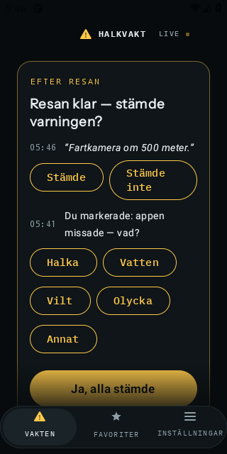
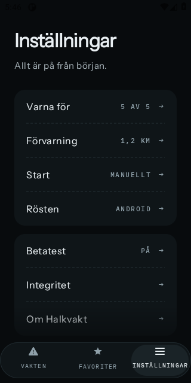
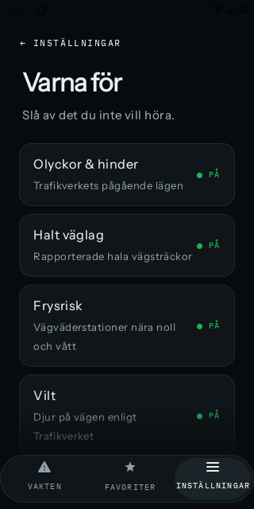
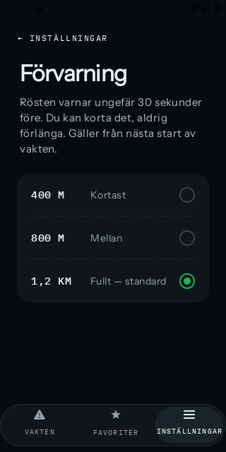
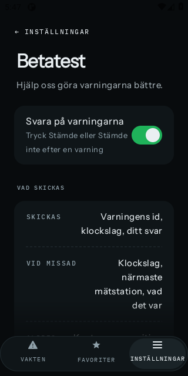
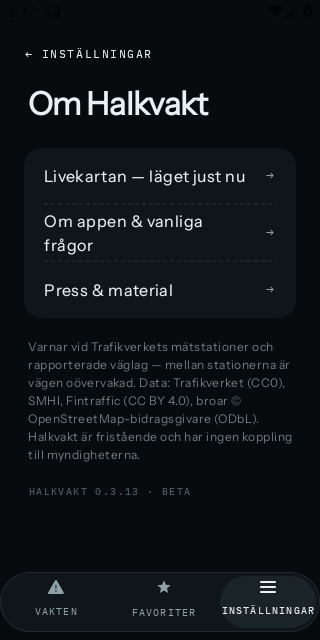

<title>Halkvaktens app</title>
<link rel="preconnect" href="https://fonts.googleapis.com">
<link rel="preconnect" href="https://fonts.gstatic.com" crossorigin>
<link rel="stylesheet" href="https://fonts.googleapis.com/css2?family=Instrument+Sans:wght@500;600;700&family=Source+Serif+4:ital,opsz,wght@0,8..60,400;0,8..60,600;1,8..60,400&family=JetBrains+Mono:wght@400;500&display=swap">
<style>
  /* Layout: the same paper sheet as Halkvaktens systembild and mätningar. A strip of real screens up top, then numbered
     sections that follow the user: what it says, the screens, starting, answering, what leaves the phone, where it stands. */
  :root {
    --papper: #F6F7F5;
    --blad: #FFFFFF;
    --black: #16202A;
    --dampad: #4A5763;
    --linje: #D9DFE3;
    --gul: #A8720A;
    --gul-yta: #FFF3D6;
    --gron: #1F7A45;
    --gron-yta: #E4F2EA;
    --rod: #A63A2A;
    --rod-yta: #F9E7E3;
    --frost-yta: #E6F0F5;
    --skarm: #0B1014;
    color-scheme: light;
  }
  @media (prefers-color-scheme: dark) {
    :root:not([data-theme="light"]) {
      --papper: #0B1014; --blad: #121A20; --black: #E6ECEF; --dampad: #9DAAB3; --linje: #26323B;
      --gul: #FFC94A; --gul-yta: #2A2310; --gron: #4CC382; --gron-yta: #12261B; --rod: #F08A7A; --rod-yta: #2B1714;
      --frost-yta: #13232C; --skarm: #05080A;
      color-scheme: dark;
    }
  }
  :root[data-theme="dark"] {
    --papper: #0B1014; --blad: #121A20; --black: #E6ECEF; --dampad: #9DAAB3; --linje: #26323B;
    --gul: #FFC94A; --gul-yta: #2A2310; --gron: #4CC382; --gron-yta: #12261B; --rod: #F08A7A; --rod-yta: #2B1714;
    --frost-yta: #13232C; --skarm: #05080A;
    color-scheme: dark;
  }
  body { background: var(--papper); color: var(--black); padding-inline: 16px; padding-block: 28px 48px;
         font: 400 16px/1.6 "Source Serif 4", Georgia, "Times New Roman", serif; }
  .blad { max-width: 820px; margin: 0 auto; background: var(--blad); border: 1px solid var(--linje);
          padding: clamp(20px, 5vw, 56px); display: grid; grid-template-columns: minmax(0, 1fr); gap: 22px; }
  h1, h2, h3, .etikett, th, .dom, .fakta b, figcaption b, .steg b, .rost-fras { font-family: "Instrument Sans", "Helvetica Neue", Arial, sans-serif; }
  h1 { font-size: clamp(30px, 5vw, 42px); line-height: 1.08; font-weight: 700; margin: 0; letter-spacing: -0.01em; text-wrap: balance; }
  h2 { font-size: 21px; font-weight: 700; margin: 18px 0 0; text-wrap: balance; }
  h3 { font-size: 16px; font-weight: 600; margin: 6px 0 0; }
  p { margin: 0; max-width: 68ch; }
  .etikett { font-size: 12px; font-weight: 600; letter-spacing: 0.12em; text-transform: uppercase; color: var(--gul); }
  .ingress { font-size: 18px; color: var(--dampad); }
  .mono, code { font-family: "JetBrains Mono", ui-monospace, Menlo, monospace; font-size: 0.86em; font-variant-numeric: tabular-nums; }
  .litet { font-size: 14px; color: var(--dampad); }
  ul, ol { margin: 0; padding-left: 1.2em; display: grid; gap: 5px; }
  li { max-width: 66ch; }
  hr { border: 0; border-top: 1px solid var(--linje); margin: 4px 0; width: 100%; }
  q, .citat { font-style: italic; }

  .fakta { display: flex; flex-wrap: wrap; gap: 6px 22px; font-size: 14px; color: var(--dampad);
           border-top: 1px solid var(--linje); border-bottom: 1px solid var(--linje); padding-block: 10px; }
  .fakta b { color: var(--black); font-weight: 600; font-variant-numeric: tabular-nums; }

  .remsa { display: flex; gap: 14px; overflow-x: auto; padding-block: 4px 10px; scroll-snap-type: x mandatory; }
  .remsa figure { margin: 0; flex: 0 0 168px; display: grid; gap: 8px; scroll-snap-align: start; }
  .remsa img { width: 168px; aspect-ratio: 1 / 2; object-fit: cover; border-radius: 14px; background: var(--skarm);
               border: 1px solid var(--linje); display: block; max-width: 100%; }
  figcaption { font-size: 13px; line-height: 1.4; color: var(--dampad); }
  figcaption b { color: var(--black); font-weight: 600; }

  .tabell { overflow-x: auto; }
  table { border-collapse: collapse; width: 100%; font-size: 14px; }
  th, td { text-align: left; padding: 7px 10px; border-bottom: 1px solid var(--linje); vertical-align: top; }
  th { font-size: 12px; font-weight: 600; letter-spacing: 0.06em; text-transform: uppercase; color: var(--dampad); }
  td.tal, th.tal { text-align: right; font-variant-numeric: tabular-nums; white-space: nowrap; }
  td.nr { white-space: nowrap; font-family: "JetBrains Mono", ui-monospace, Menlo, monospace; font-size: 13px; }
  .rost-fras { font-weight: 600; }

  .steg { list-style: none; padding: 0; display: grid; gap: 0; counter-reset: s; }
  .steg li { counter-increment: s; display: grid; grid-template-columns: 30px 1fr; gap: 12px; padding-block: 9px;
             border-bottom: 1px solid var(--linje); max-width: none; }
  .steg li::before { content: counter(s); font: 600 13px "Instrument Sans", Arial, sans-serif; color: var(--blad);
                     background: var(--black); width: 24px; height: 24px; border-radius: 50%; display: grid; place-items: center; }
  .steg li > div { min-width: 0; }

  .par { display: grid; grid-template-columns: repeat(auto-fit, minmax(260px, 1fr)); gap: 18px 28px; }
  .par > * { min-width: 0; }
  .ruta { border-left: 3px solid var(--gul); padding: 4px 0 4px 14px; display: grid; gap: 6px; align-content: start; }
  .ruta.gron { border-left-color: var(--gron); }
  .ruta.rod { border-left-color: var(--rod); }
  .skickas { background: var(--frost-yta); padding: 14px 16px; border-radius: 4px; display: grid; gap: 8px; }

  .dom { display: inline-block; font-size: 11px; font-weight: 600; letter-spacing: 0.08em; text-transform: uppercase;
         padding: 1px 7px; border-radius: 3px; white-space: nowrap; }
  .dom.klar { color: var(--gron); background: var(--gron-yta); }
  .dom.fel { color: var(--rod); background: var(--rod-yta); }
  .dom.vantar { color: var(--gul); background: var(--gul-yta); }
  a { color: inherit; }
</style>

<main class="blad">
  <div class="etikett">Appen · 28 september 2026 · läst mot läget 25 oktober</div>
  <h1>Halkvakt i telefonen: vad den gör, säger och skickar</h1>
  <p class="ingress">Tredje sidan i serien efter systembilden och mätningarna. Den här sidan följer föraren: vad rösten säger, hur skärmarna ser ut, hur vakten startar och stannar, hur betatestarna svarar och exakt vad som lämnar telefonen. Underlaget är produktboken, systembeskrivningen, beslutsloggen och Skyltfondsansökan med bilagor.</p>
  <div class="fakta">
    <span>iPhone <b>0.4.1 (72)</b> i koden</span>
    <span>Android <b>0.4.1 (72)</b> i koden, <b>0.4.0 (49)</b> i Google Play</span>
    <span><b>5</b> faror</span>
    <span><b>3</b> flikar</span>
    <span><b>0</b> konton</span>
    <span>batteri iPhone <b>7 %/h</b></span>
    <span>gratis · App Store: <b>0.4.0 (49)</b> godkänd av Apple 13/11, <b>0.4.1 (73)</b> ute i App Store enligt Bengt 25/11</span>
  </div>

  <div class="remsa" aria-label="Skärmbilder ur Android-appen i skinnet v4, 2 oktober 2026">
    <figure><figcaption><b>Redo.</b> För betatestare: svar på varningen och val för en miss.</figcaption></figure>
    <figure><figcaption><b>Inställningar.</b> En rad per ämne, varje rad öppnar en egen sida.</figcaption></figure>
    <figure><figcaption><b>Varna för.</b> Fem faror, var och en kan stängas av.</figcaption></figure>
    <figure><figcaption><b>Förvarning.</b> Kan kortas, aldrig förlängas.</figcaption></figure>
    <figure><figcaption><b>Betatest.</b> Av från början. Kvittot säger vad som skickas.</figcaption></figure>
    <figure><figcaption><b>Om.</b> Ärlighetsraden och källorna, ordagrant.</figcaption></figure>
  </div>
  <p class="litet">Android ur fotostudion 2/10 i skinnet v4 — designöverlämningen v2 (DECISIONS #444, kort #284), i 0.3.10 (22) och senare. iPhone har samma skärmar; bilderna kommer ur första bygget i Xcode.</p>

  <h2 id="avsnitt-1">1. Vad appen är</h2>
  <p>En app du startar när du sätter dig i bilen, och sedan lägger du undan telefonen. Halkvakt lyssnar på Trafikverkets mätstationer och rapporterade väglag och säger till med rösten, i högtalaren eller bilens Bluetooth, när något farligt finns framför dig: halka, frysrisk, olyckor, vilt och fartkameror. Det finns ingen skärm att titta på och inget konto. Tystnad är grundläget: pratar den, betyder det något.</p>

  <h2 id="avsnitt-2">2. En körning</h2>
<!-- LÄGESRADER §2: skrivs av scripts/projektkartan.ts ur docs/projektkartan.json, ändra inte för hand -->
<div style="display: grid; gap: 4px; margin: 2px 0 12px; font-size: 14px; line-height: 1.45">
  <div style="font: 600 11px/1.4 'Instrument Sans', Arial, sans-serif; letter-spacing: 0.08em; text-transform: uppercase; color: var(--dampad, #4A5763)">Läget i <a href="https://895845.github.io/halkvakt-sidor/PROJEKTKARTAN.html">projektkartan</a></div>
  <details><summary style="cursor: pointer"><span aria-hidden="true" style="display: inline-block; width: 9px; height: 9px; border-radius: 50%; background: var(--gron, #1F7A45); margin-right: 6px"></span><a href="https://895845.github.io/halkvakt-sidor/PROJEKTKARTAN.html#del-m-motorn">Motorn i tre språk</a> <span style="color: var(--dampad, #4A5763)">klar</span></summary>
    <ul style="margin: 4px 0 8px; padding-left: 1.6em; display: grid; gap: 2px; font-size: 13px; list-style: none">
      <li><span aria-hidden="true">✓</span> <b>Motorn i TypeScript</b> <span style="color: var(--dampad, #4A5763)">klart · engine/src/engine.ts (AlertEngine, 368 rader), types.ts, texts.ts, geo.ts; deterministisk utan I/O (engine.ts:1-17)</span></li>
      <li><span aria-hidden="true">✓</span> <b>Swift-port</b> <span style="color: var(--dampad, #4A5763)">klart · ios/HalkvaktEngine/Sources/HalkvaktEngine/Engine.swift (466 rader); appen länkar paketet (ios/HalkvaktApp/project.yml:9-17)</span></li>
      <li><span aria-hidden="true">✓</span> <b>Kotlin-port</b> <span style="color: var(--dampad, #4A5763)">klart · android/engine/src/main/kotlin/se/halkvakt/engine/Engine.kt och Types.kt; android/app/build.gradle.kts:42 project(':engine')</span></li>
      <li><span aria-hidden="true">✓</span> <b>Testfallen</b> <span style="color: var(--dampad, #4A5763)">klart · 50 vektorer v01–v50 i engine/vectors plus fixturerna skane_vag108.json (vektorprovet), lasarprov.json (läsarkontraktet) och langsrutten.json (rutfiltret, som halkzonen räknar med) i engine/fixtures, alla prövade i tre språk; engine/gen-vectors.ts vaktas i ci.yml</span></li>
      <li><span aria-hidden="true">✓</span> <b>Paritet i CI</b> <span style="color: var(--dampad, #4A5763)">klart · ci.yml npm test (test/engine.test.ts:19-20), ios-engine.yml swift test, android.yml :engine:test; step jämförs (#443)</span></li>
      <li><span aria-hidden="true">✓</span> <b>Lägesfilens läsare i alla tre</b> <span style="color: var(--dampad, #4A5763)">klart · TS test/lasarkontraktet.test.ts; Kotlin LasarkontraktetTest.kt i appens testmål, android 37129803970 grön, motprovet 37129845788 rött; Swift SnapshotReader i HalkvaktEngine, LasarkontraktetTests.swift, ios-engine 37129806868 grön, motprovet 37129843583 rött på &quot;&lt;null&gt;&quot; (kort #289) · Axel på Macen 4/10 11:11–11:13 (e48cb78): appen byggd i Xcode (Build Succeeded, iPhone 16e) och swift test i ios/HalkvaktEngine grönt på Apples Foundation, XCTest 13 fall 0 fel, Swift Testing LasarkontraktetTests godkänd</span></li>
    </ul>
  </details>
  <details><summary style="cursor: pointer"><span aria-hidden="true" style="display: inline-block; width: 9px; height: 9px; border-radius: 50%; background: var(--gron, #1F7A45); margin-right: 6px"></span><a href="https://895845.github.io/halkvakt-sidor/PROJEKTKARTAN.html#del-a-omladdning">Omladdningen under resan (iPhone)</a> <span style="color: var(--dampad, #4A5763)">klar</span></summary>
    <ul style="margin: 4px 0 8px; padding-left: 1.6em; display: grid; gap: 2px; font-size: 13px; list-style: none">
      <li><span aria-hidden="true">✓</span> <b>Byggd i koden</b> <span style="color: var(--dampad, #4A5763)">klart · GuardManager.swift:103 (30 min), :109–131 (refreshSnapshot); KorlageView.swift:67–71 (klockslaget, #434)</span></li>
      <li><span aria-hidden="true">✓</span> <b>I ett iPhone-bygge</b> <span style="color: var(--dampad, #4A5763)">klart · Kompilerad i (19) 1/10; (21) med klockslaget uppladdad till TestFlight 2/10 (DECISIONS #434)</span></li>
      <li><span aria-hidden="true">✓</span> <b>Prov i bil eller på telefon</b> <span style="color: var(--dampad, #4A5763)">klart · Bengts resa 8/11: fas 2 (DECISIONS #741 punkt 4) ersatte laddningen var 30:e minut med en koll omkring varannan minut under resan, och Bengts resa 8/11 (94 minuter med vakten, 0.4.0) gav 48 kollar, alla med ny vägdata och ingen ur reserven (DECISIONS #778, tillägg 8/11, ur skärmbilderna av *Inställningar → Mätningen*); resorna 2/11 gav 14 av 16 och 16 av 16 nya</span></li>
      <li><span aria-hidden="true">✓</span> <b>Verify på kortet</b> <span style="color: var(--dampad, #4A5763)">klart · Kort #258 stängt 11/11 (Bengt: &quot;Ja, stäng&quot;), med Verify omskriven efter fas 2: varje koll under resan gav ny data</span></li>
    </ul>
  </details>
</div>
<!-- /LÄGESRADER -->
  <ol class="steg">
    <li><div><b>Du startar vakten</b>, eller så startar den själv (avsnitt 5). GPS:en börjar lyssna, och skärmen kan släckas.</div></li>
    <li><div><b>Telefonen hämtar vägdatan</b> och kontrollerar den mot kontrollsumman i manifestet. Stämmer den inte behålls förra snapshoten. Under resan hämtade appen förut ny data var 30:e minut. På iPhone har fas 2 (DECISIONS #741 punkt 4) ersatt det: appen hämtar ur en hink synkad med publiceringen och kollar strax efter att nästa fil väntas, omkring varannan minut under resan, med Pages som reserv. Bengts resa 8/11 med 0.4.0, 94 minuter med vakten, gav 48 kollar, alla med ny vägdata och ingen ur reserven (DECISIONS #778, tillägg 8/11), och kort #258 stängdes 11/11. Appen mäter lokalt, per resa, hur gammal varje ny fil var, antal kollar och batteriet, och visar de senaste resorna under <i>Betatest</i> i Inställningar; inget av det lämnar telefonen. Batteriprovet under 8 %/h kommer före inskicket.</div></li>
    <li><div><b>Åldersvakten prövar datan.</b> Väglag och frysrisk äldre än 45 minuter filtreras bort, olyckor och djur efter två timmar. Är datan gammal säger rösten ingenting om det (sedan 20/10, DECISIONS #647), och körläget visar inte <q>Tyst så länge</q>. Redan i lägesfilen tas svenska stationer med bara om värdet är högst 60 minuter gammalt (grannländernas: tre timmar), så en station som stannat ger inte frysrisk på ett värde från i morse (sedan 30/10, DECISIONS #751).</div></li>
    <li><div><b>Motorn vakar i telefonen.</b> Den letar faror i en korridor på ±35° framför färdriktningen, ungefär 30 sekunder fram. Under 15 km/h är den tyst.</div></li>
    <li><div><b>Rösten talar</b> när en fara ligger i korridoren. I körläget visas samma text på ett helgult kort i åtta sekunder, och med kartappen framme syns en banner lika länge.</div></li>
    <li><div><b>Spärren.</b> Inom 10 sekunder får bara en viktigare fara tala. Samma fara upprepas först efter 10 minuter och 5 km. Hala sträckor som ligger högst 500 m från varandra räknas som en zon för den regeln, så en korsning ger en <i>halka</i> och inte tre (DECISIONS #621, #624).</div></li>
  </ol>

  <h2 id="avsnitt-3">3. Exakt vad rösten säger</h2>
<!-- LÄGESRADER §3: skrivs av scripts/projektkartan.ts ur docs/projektkartan.json, ändra inte för hand -->
<div style="display: grid; gap: 4px; margin: 2px 0 12px; font-size: 14px; line-height: 1.45">
  <div style="font: 600 11px/1.4 'Instrument Sans', Arial, sans-serif; letter-spacing: 0.08em; text-transform: uppercase; color: var(--dampad, #4A5763)">Läget i <a href="https://895845.github.io/halkvakt-sidor/PROJEKTKARTAN.html">projektkartan</a></div>
  <details><summary style="cursor: pointer"><span aria-hidden="true" style="display: inline-block; width: 9px; height: 9px; border-radius: 50%; background: var(--gron, #1F7A45); margin-right: 6px"></span><a href="https://895845.github.io/halkvakt-sidor/PROJEKTKARTAN.html#del-m-olyckor">Olyckor (A3), med olycksläget</a> <span style="color: var(--dampad, #4A5763)">klar</span></summary>
    <ul style="margin: 4px 0 8px; padding-left: 1.6em; display: grid; gap: 2px; font-size: 13px; list-style: none">
      <li><span aria-hidden="true">–</span> <b>Tröskeldokument</b> <span style="color: var(--dampad, #4A5763)">gäller inte · I drift sedan augusti; graderingen avgjord i DECISIONS-ARKIV #28 och #30a (tröskel 5, types.ts:162)</span></li>
      <li><span aria-hidden="true">✓</span> <b>Data i arkivet</b> <span style="color: var(--dampad, #4A5763)">klart · deviations (sql/001_init.sql:58) och situation_archive (sql/003); ingest-live/skriv.ts:16-58, urvalet i ingest-live/situationspolicy.ts:23 (kort #290)</span></li>
      <li><span aria-hidden="true">✓</span> <b>Publicerat i lägesfilen</b> <span style="color: var(--dampad, #4A5763)">klart · publish/snapshot-core.ts:386-393 och 457-465: deviations med sev (bara Accident) och slut som HH:MM</span></li>
      <li><span aria-hidden="true">✓</span> <b>Mätt i skuggan</b> <span style="color: var(--dampad, #4A5763)">klart · skuggmotor/main.ts:494-500 och 573-590 till shadow_log (cron halkvakt-skuggmotor, sql/036:17); 31 olycksvarningar på 7 dygn till 26/9 (MATNINGAR.html:448)</span></li>
      <li><span aria-hidden="true">–</span> <b>Dom</b> <span style="color: var(--dampad, #4A5763)">gäller inte · Ingen grind; tröskeln avgjord av Axel 31/8 (DECISIONS-ARKIV #30a)</span></li>
      <li><span aria-hidden="true">✓</span> <b>Villkoret i motorn</b> <span style="color: var(--dampad, #4A5763)">klart · engine.ts:306-327 evaluateAccident (early/near, tidigt rop en gång #211); Alert.step engine.ts:213 (DECISIONS #443)</span></li>
      <li><span aria-hidden="true">✓</span> <b>Testfall i tre språk</b> <span style="color: var(--dampad, #4A5763)">klart · 11 vektorer v04, v10, v11, v15–v17, v22, v25, v26, v28, v29; step jämförs i VectorTests.swift:86 och VectorTest.kt:109</span></li>
      <li><span aria-hidden="true">✓</span> <b>I appen</b> <span style="color: var(--dampad, #4A5763)">klart · Rösten i 0.3.x (APPEN.html:142-144); olycksläget på kortet i 0.3.10 (22) släppt av Axel 3/10 (Bengts besked); Android versionCode 22 ur CI</span></li>
    </ul>
  </details>
  <details><summary style="cursor: pointer"><span aria-hidden="true" style="display: inline-block; width: 9px; height: 9px; border-radius: 50%; background: var(--gron, #1F7A45); margin-right: 6px"></span><a href="https://895845.github.io/halkvakt-sidor/PROJEKTKARTAN.html#del-m-halka">Rapporterad halka (A1)</a> <span style="color: var(--dampad, #4A5763)">klar</span></summary>
    <ul style="margin: 4px 0 8px; padding-left: 1.6em; display: grid; gap: 2px; font-size: 13px; list-style: none">
      <li><span aria-hidden="true">–</span> <b>Tröskeldokument</b> <span style="color: var(--dampad, #4A5763)">gäller inte · I drift sedan augusti; ordlistan avgjord i DECISIONS #214</span></li>
      <li><span aria-hidden="true">✓</span> <b>Data i arkivet</b> <span style="color: var(--dampad, #4A5763)">klart · road_conditions (sql/001_init.sql:15) via ingest-live/skriv.ts:61-79; road_condition_history (sql/001:31)</span></li>
      <li><span aria-hidden="true">✓</span> <b>Publicerat i lägesfilen</b> <span style="color: var(--dampad, #4A5763)">klart · publish/snapshot-core.ts:166-180 (kod ≥ 2 eller halkord), liveDoc.segments :442</span></li>
      <li><span aria-hidden="true">✓</span> <b>Mätt i skuggan</b> <span style="color: var(--dampad, #4A5763)">klart · skuggmotor/main.ts:494-500 och 573-590 till shadow_log; 0 halkvarningar på 7 dygn till 26/9, ingen halka (MATNINGAR.html:448)</span></li>
      <li><span aria-hidden="true">–</span> <b>Dom</b> <span style="color: var(--dampad, #4A5763)">gäller inte · I drift utan grind; kill-kriteriet väntar på riktig halka (STATUS.md:33)</span></li>
      <li><span aria-hidden="true">✓</span> <b>Villkoret i motorn</b> <span style="color: var(--dampad, #4A5763)">klart · engine.ts:329-345 evaluateSegment; SLIPPERY_INFO :49 och SLIPPERY_STAM :54 (DECISIONS #214); halkzonen (kort #360, DECISIONS #621, #624): reprisregeln räknar på zonen, glappet 500 m, i tre språk (b315295, 9d3631f, 96d1045); modd sist i SLIPPERY_INFO med ordbörjan, i tre språk och skuggmotorns och publiceras buntar (7c7b236, DECISIONS #915), i drift 20/11: sql/129 med DB-knappen 44708944428, publicera 44709073003 och skuggmotor 44709200579 (112ee4f); värdevaktens VAGLAGSORD bundna till motorns svar i test/halkorden.test.ts (motprovet 1ea137c, återställt 5f5c8ae)</span></li>
      <li><span aria-hidden="true">✓</span> <b>Testfall i tre språk</b> <span style="color: var(--dampad, #4A5763)">klart · v04, v07, v11, v24, v45–v46 (kandidaten tiger efter samma sträckas halka, #581) och v48–v50 (halkzonen, #624) i ci.yml, ios-engine.yml och android.yml; v61–v63 (modden, DECISIONS #915)</span></li>
      <li><span aria-hidden="true">✓</span> <b>I appen</b> <span style="color: var(--dampad, #4A5763)">klart · texts.ts:62-63, Engine.swift:203-204, Types.kt:190; i TestFlight sedan 0.3.0 (3) 31/8; Android ur CI; halkzonen i bygget 0.3.13 (29) och senare (DECISIONS #632); modden i 0.4.1 (58) i båda apparna (43fdaa6), iPhone i TestFlight från (59)</span></li>
    </ul>
  </details>
  <details><summary style="cursor: pointer"><span aria-hidden="true" style="display: inline-block; width: 9px; height: 9px; border-radius: 50%; background: var(--gron, #1F7A45); margin-right: 6px"></span><a href="https://895845.github.io/halkvakt-sidor/PROJEKTKARTAN.html#del-m-frysrisk">Frysrisk vid stationer och broar (A2)</a> <span style="color: var(--dampad, #4A5763)">klar</span></summary>
    <ul style="margin: 4px 0 8px; padding-left: 1.6em; display: grid; gap: 2px; font-size: 13px; list-style: none">
      <li><span aria-hidden="true">–</span> <b>Tröskeldokument</b> <span style="color: var(--dampad, #4A5763)">gäller inte · I drift sedan augusti; trösklarna +1 °C och +3 °C för bro i engine.ts:276</span></li>
      <li><span aria-hidden="true">✓</span> <b>Data i arkivet</b> <span style="color: var(--dampad, #4A5763)">klart · weather_observations (sql/001_init.sql:42) och weather_latest (:86) via ingest-live/skriv.ts:87-167; broarna i data/bridges.geojson</span></li>
      <li><span aria-hidden="true">✓</span> <b>Publicerat i lägesfilen</b> <span style="color: var(--dampad, #4A5763)">klart · snapshot-core.ts:304-309 och 447-456 weather (givarvakt och karantän :279-302) och bridges :363-383</span></li>
      <li><span aria-hidden="true">✓</span> <b>Mätt i skuggan</b> <span style="color: var(--dampad, #4A5763)">klart · skuggmotor/main.ts:494-500 och 573-590 till shadow_log; 14 frysriskvarningar på 7 dygn till 26/9</span></li>
      <li><span aria-hidden="true">–</span> <b>Dom</b> <span style="color: var(--dampad, #4A5763)">gäller inte · I drift utan grind; kill-kriteriet väntar på riktig halka (STATUS.md:33)</span></li>
      <li><span aria-hidden="true">✓</span> <b>Villkoret i motorn</b> <span style="color: var(--dampad, #4A5763)">klart · engine.ts:273-286: yta ≤ 1 °C och fukt, bro ≤ 3 °C; samma gren bär S3, efterhalkan som märkt beta (:279-285, DECISIONS #524)</span></li>
      <li><span aria-hidden="true">✓</span> <b>Testfall i tre språk</b> <span style="color: var(--dampad, #4A5763)">klart · v08, v09, v11, v18, v19, v23, v27, v36 och S3:s v38–v41 i ci.yml, ios-engine.yml och android.yml</span></li>
      <li><span aria-hidden="true">✓</span> <b>I appen</b> <span style="color: var(--dampad, #4A5763)">klart · texts.ts:64-70, Engine.swift:205-211, Types.kt:191-196; broarna i 0.3.3 (6) 2/9</span></li>
    </ul>
  </details>
  <details><summary style="cursor: pointer"><span aria-hidden="true" style="display: inline-block; width: 9px; height: 9px; border-radius: 50%; background: var(--gron, #1F7A45); margin-right: 6px"></span><a href="https://895845.github.io/halkvakt-sidor/PROJEKTKARTAN.html#del-m-vilt">Djur på vägen (A4)</a> <span style="color: var(--dampad, #4A5763)">klar</span></summary>
    <ul style="margin: 4px 0 8px; padding-left: 1.6em; display: grid; gap: 2px; font-size: 13px; list-style: none">
      <li><span aria-hidden="true">–</span> <b>Tröskeldokument</b> <span style="color: var(--dampad, #4A5763)">gäller inte · I drift; texten avgjord i DECISIONS #266 och källan i #318</span></li>
      <li><span aria-hidden="true">✓</span> <b>Data i arkivet</b> <span style="color: var(--dampad, #4A5763)">klart · deviations (AnimalPresenceObstruction i KEEP, ingest-live/situationspolicy.ts:23) och situation_archive (:36)</span></li>
      <li><span aria-hidden="true">✓</span> <b>Publicerat i lägesfilen</b> <span style="color: var(--dampad, #4A5763)">klart · snapshot-core.ts:394-404 och 470-473: nyckeln djur</span></li>
      <li><span aria-hidden="true">✓</span> <b>Mätt i skuggan</b> <span style="color: var(--dampad, #4A5763)">klart · skuggmotor/main.ts:494-500 och 573-590 till shadow_log; 2 viltvarningar på 7 dygn till 26/9</span></li>
      <li><span aria-hidden="true">–</span> <b>Dom</b> <span style="color: var(--dampad, #4A5763)">gäller inte · Ingen grind; steg 0 mätt före bytet: 487 händelser på 14 dygn (DECISIONS #318)</span></li>
      <li><span aria-hidden="true">✓</span> <b>Villkoret i motorn</b> <span style="color: var(--dampad, #4A5763)">klart · engine.ts:287-290; adaptern snapshot.ts:57-59 (djur:&lt;id&gt;)</span></li>
      <li><span aria-hidden="true">✓</span> <b>Testfall i tre språk</b> <span style="color: var(--dampad, #4A5763)">klart · v13 och v37 (DECISIONS #318) i ci.yml, ios-engine.yml och android.yml</span></li>
      <li><span aria-hidden="true">✓</span> <b>I appen</b> <span style="color: var(--dampad, #4A5763)">klart · texts.ts:71-72, Engine.swift:212-213, Types.kt:197; iOS läser djuren i SnapshotReader.swift:55-56 (HalkvaktEngine), Android i SnapshotRepo.kt:146-150; i 0.3.9 (13) 23/9</span></li>
    </ul>
  </details>
  <details><summary style="cursor: pointer"><span aria-hidden="true" style="display: inline-block; width: 9px; height: 9px; border-radius: 50%; background: #3D7CC9; margin-right: 6px"></span><a href="https://895845.github.io/halkvakt-sidor/PROJEKTKARTAN.html#del-m-viltstracka">Viltsträckan (statistik per sträcka)</a> <span style="color: var(--dampad, #4A5763)">väntar, 33 % · Bengt hämtar Trafikverkets viltolyckskartor 2020–2024 ur Lastkajen (produktpaket 10094; Lastkajen kräver inloggning), sedan körs och läses steg 0 (DECISIONS #860).</span></summary>
    <ul style="margin: 4px 0 8px; padding-left: 1.6em; display: grid; gap: 2px; font-size: 13px; list-style: none">
      <li><span aria-hidden="true">✓</span> <b>Läsningen förregistrerad</b> <span style="color: var(--dampad, #4A5763)">klart · scripts/matningar/vilt-steg0-2026-11-13.ts: vad som räknas står i filens huvud före körningen; självtest och åtta motprov (DECISIONS #860)</span></li>
      <li><span aria-hidden="true">○</span> <b>Steg 0 läst: fälten, koncentrationen, trappan och takten</b> <span style="color: var(--dampad, #4A5763)">saknas</span></li>
      <li><span aria-hidden="true">○</span> <b>Beslut om fortsättningen efter steg 0</b> <span style="color: var(--dampad, #4A5763)">saknas</span></li>
    </ul>
  </details>
  <details><summary style="cursor: pointer"><span aria-hidden="true" style="display: inline-block; width: 9px; height: 9px; border-radius: 50%; background: var(--gron, #1F7A45); margin-right: 6px"></span><a href="https://895845.github.io/halkvakt-sidor/PROJEKTKARTAN.html#del-m-kameror">Fartkameror (A5)</a> <span style="color: var(--dampad, #4A5763)">klar</span></summary>
    <ul style="margin: 4px 0 8px; padding-left: 1.6em; display: grid; gap: 2px; font-size: 13px; list-style: none">
      <li><span aria-hidden="true">–</span> <b>Tröskeldokument</b> <span style="color: var(--dampad, #4A5763)">gäller inte · I drift sedan augusti; toleransen 60° avgjord i DECISIONS-ARKIV #55b</span></li>
      <li><span aria-hidden="true">✓</span> <b>Data i arkivet</b> <span style="color: var(--dampad, #4A5763)">klart · cameras (sql/001_init.sql:4-12) via ingest/db.ts:65-76, timvis via pulsklockan</span></li>
      <li><span aria-hidden="true">✓</span> <b>Publicerat i lägesfilen</b> <span style="color: var(--dampad, #4A5763)">klart · publish/snapshot-core.ts:149-162: staticDoc.cameras med bearing</span></li>
      <li><span aria-hidden="true">✓</span> <b>Mätt i skuggan</b> <span style="color: var(--dampad, #4A5763)">klart · skuggmotor/main.ts:494-500 och 573-590 till shadow_log; 760 kameravarningar på 7 dygn till 26/9</span></li>
      <li><span aria-hidden="true">✓</span> <b>Dom</b> <span style="color: var(--dampad, #4A5763)">klart · Fältdom Malmö–Boden 'helt perfekt hela vägen' (DECISIONS-ARKIV #102); riktningen vänd 180° (#57)</span></li>
      <li><span aria-hidden="true">✓</span> <b>Villkoret i motorn</b> <span style="color: var(--dampad, #4A5763)">klart · engine.ts:259-270: talar vid 500 m, bearing + 180° inom 60° (types.ts:174)</span></li>
      <li><span aria-hidden="true">✓</span> <b>Testfall i tre språk</b> <span style="color: var(--dampad, #4A5763)">klart · 22 vektorer med kamera, bl.a. v01–v03, v20, v21, v32, v33, v43 och v44 (kandidaten viker för kameran), plus Skåne-fixturen</span></li>
      <li><span aria-hidden="true">✓</span> <b>I appen</b> <span style="color: var(--dampad, #4A5763)">klart · texts.ts:73-78, Engine.swift:214-216, Types.kt:198-199; riktningen i 0.3.5 (8) 2/9</span></li>
    </ul>
  </details>
  <details><summary style="cursor: pointer"><span aria-hidden="true" style="display: inline-block; width: 9px; height: 9px; border-radius: 50%; background: var(--gul, #B35C00); margin-right: 6px"></span><a href="https://895845.github.io/halkvakt-sidor/PROJEKTKARTAN.html#del-m-smavagsrosten">Småvägsrösten: betavarning på statliga vägar utan mätning</a> <span style="color: var(--dampad, #4A5763)">delvis, 78 % · kvar: Kedjan i drift: ett komplett dygn enligt vakten efter rättelsen av timmen kl. 06 UTC (kort #647, DECISIONS #881)</span></summary>
    <ul style="margin: 4px 0 8px; padding-left: 1.6em; display: grid; gap: 2px; font-size: 13px; list-style: none">
      <li><span aria-hidden="true">✓</span> <b>Beställningen och beslutet (DECISIONS #828, kort #647)</b> <span style="color: var(--dampad, #4A5763)">klart · DECISIONS #828; Bengt 10/11: &quot;Jag beställer bygget&quot;; underlaget signerat av Bengt och Axel i halkvakt-kuvos F51 och F52</span></li>
      <li><span aria-hidden="true">✓</span> <b>Punkterna längs vägarna, med väg och ordning (kuvösen)</b> <span style="color: var(--dampad, #4A5763)">klart · halkvakt-kuvos F53, PR 69 (69d5dda), Bengt 10/11: &quot;Slå ihop båda&quot;; självtest, motprov och efterkontroll gröna, inga tal här (#768)</span></li>
      <li><span aria-hidden="true">✓</span> <b>Tabellen och laddaren, brytarna av</b> <span style="color: var(--dampad, #4A5763)">klart · ny-kandidat-fysik 10/11 18.28 UTC (42875494354, ef56049f): laddningssteget lyckades och skrev &quot;småvägspunkterna: klart&quot; 18.36; tabellen läst i panelen 18.39: båda grupperna laddade, lika många punkter som i halkvakt-kuvos F53, båda brytarna av; tabellen och laddaren i PR #1496 (e977332a), sql/103 migrerad 13.07 UTC; inga tal här (#768)</span></li>
      <li><span aria-hidden="true">✓</span> <b>Radarn per punkt</b> <span style="color: var(--dampad, #4A5763)">klart · radar_smavag 11/11 14.40 UTC: 22 504 rader i 8 271 bitar ur 8 kompositer 13.05–14.35 UTC (läst i panelen); tiden per körning 946 ms (radar-stad 10/11 18.46) och 1 094 ms (ingest 11/11 14.35); DECISIONS #828</span></li>
      <li><span aria-hidden="true">✓</span> <b>Radarns bakåtprov: radarn får väcka rösten (kort #658)</b> <span style="color: var(--dampad, #4A5763)">klart · radarstn 43570028972 och dfbakat 43582698998 gröna, radarn_bakat.json läst 14/11; läsregeln §5 i förregistreringen (halkvakt-kuvos F59) ger N3R som sql/105; talen i halkvakt-kuvos F62</span></li>
      <li><span aria-hidden="true">◐</span> <b>Kedjan, med ett prov på en fjärdedel först</b> <span style="color: var(--dampad, #4A5763)">pågår · särdragen för alla punkter (vagpunkter-sardrag 42904164109) i halkvakt-kuvos PR 70 (b4c61120); flödet kuvos-smavag.yml och ingest/smavagskedjan.ts byggda; historiken klar (kuvos-smavag 42919204621), provet grönt och läst (42937524585, DECISIONS #828); kedjan i drift sammanslagen (PR #1512, 9b79145e; halkvakt-kuvos PR 71); dygn med luckor hämtas om (PR #1514, #1517); historiken för alla punkter klar 12/11 (kuvos-smavag 43191375413) och de första timfilerna i drift 12/11 13.16 och 18.59 UTC; kedjan startas av pulsklockan vid R + 51 minuter i stället för efter kuvos-stad, som gav blockets första en till två timmar utan timfil och nekade cachen, och smavag-vakt.yml larmar för ett ofullständigt dygn (DECISIONS #849); pulsjobbet inlagt och tre kompletta dygn i drift kvar 13/11 (DECISIONS #857): timmen direkt efter en sen del A, i kandidat-fysik.yml och ny-kandidat-fysik.yml; delningen per körning i backtesten läser dygnen som en ström. Reserven när timfilen saknas: jobbet reserv i kuvos-smavag-timme.yml startar kedjan igen 45–269 minuter efter slotten, högst tre gånger (scripts/smavag-reserv.ts, DECISIONS #859). K räknade varje timme 14–15/11, och K-timmarna som saknades sedan 11/11 föll när MET låg nere före reserverna (ny_kandidat_skugga_korning, läst 15/11; DECISIONS #881). Timmen kl. 06 UTC saknades varje morgon eftersom timmen direkt startar K:s del B med flödets nyckel, som aldrig sätter igång workflow_run; steget väntar nu på del B och startar kuvos-smavag-timme själv (#881). Kvar: ett komplett dygn enligt vakten efter rättelsen.</span></li>
      <li><span aria-hidden="true">✓</span> <b>Regeln med småvägsgrenen</b> <span style="color: var(--dampad, #4A5763)">klart · sql/105 och integrationsprovet SG1–SG5, sammanslagen och migrerad med brytarna av (PR #1509, e353c978; DB-knappen 42971659393); kedjans första rader 12/11 14.00 UTC (kuvos-smavag-timme 43241026553); radarns slutval N3 eller radarn (#866, halkvakt-kuvos F62 och F63); regelns tid i driften 85–90 ms utan brytarvillkoret (EXPLAIN ANALYZE 14/11, DECISIONS #828 tillägg 14/11)</span></li>
      <li><span aria-hidden="true">◐</span> <b>Punktfilen och beskedet i lägesfilen</b> <span style="color: var(--dampad, #4A5763)">pågår · PR #1520 (9501450c); sql/106 migrerad (43046159614); publicera deployad (43046265602), live.json utan nyckeln med brytarna av; punktfilen med väg och ordning (schema 2) och läsaren i TS, Kotlin och Swift mot engine/fixtures/smavagprov.json, appens hämtning bara med besked (DECISIONS #846); vägarnas ändar som hjälppunkter 200 m in (DECISIONS #847, halkvakt-kuvos PR 79); punktfilen med schema 2 i kartrepot sedan 12/11 18.40 UTC (data/app/v1/smavag.json, läst 14/11); appens hämtning med ett riktigt besked kvar, och den kräver att en brytare är på</span></li>
      <li><span aria-hidden="true">◐</span> <b>Takten: taket ur backtesten, kedjans prov och skuggan i drift</b> <span style="color: var(--dampad, #4A5763)">pågår · underlaget till hinken varje timme (kuvos-smavag-timme, smavag-live-db.ts underlag, SL7), PR #1527; resorna varje timme i samma steg (halkvakt-kuvos F56, smavag_takt.py), PR #1528; uppladdningen föll på require i ladda.js (repot är type: module) varje timme den nåddes, 12/11 14–17 UTC, och jämförelsen med smavag_regel() kom aldrig fram; rättad till ladda.cjs 12/11; taket ur en backtest, kedjans prov i 48 timmar och skuggan i drift efter påslaget (DECISIONS #843 med rättelsen 6a1d172, halkvakt-kuvos F57); regeln utanför databasen med jämförelsen mot smavag_regel() varje timme (ingest/smavag-regel.ts, integrationsprovet SL8); radarn bakåt i driftens bitar (kuvos-smavag-bakat steget radar, halkvakt-kuvos PR 75 och PR #1541 som 9d20999; provat på 15/11 2023; 1/11 2023 – 31/3 2024 hämtad till cachen 12/11, körning 43191497547); backtesten på januari–mars 2024 med hela kedjan (halkvakt-kuvos F58); ankarna med driftens vagpunkt_ankare() vid kuvösens klocka (kuvos-smavag-bakat steget ankare, halkvakt-kuvos PR 77 och PR #1542 som 5acc824, integrationsprovet för ankarna; januari–mars 2024 till hinken 12/11, körning 43196119248); hämtningen ur MET:s arkiv byggd (kuvos-smavag-bakat steget met, halkvakt-kuvos PR 78: analysen och prognoskörningarna med steg 0–17 i driftens rutor, en vecka per jobb, en förbindelse, avbrott vid fel); prognoskörningarna per körning i den privata hinken (kuvos-smavag-bakat-2024/, Bengt 12/11: &quot;I hinken, per körning&quot;), analysveckorna i cachen; MET:s katalog har alla körningar och analystimmar för perioden, så reserven 2024/25 behövs inte (läst 12/11); kedjans bakåtläge byggt (kuvos-smavag-bakat stegen kedjan-a och kedjan-b, DECISIONS #848: driftens program med filer i driftens form, stationernas historik från 30 augusti som i driften); kedjan-b läser ankarfilen för hela perioden oavsett körningens dygn och stoppar ett fönster utanför den (13/11, efter att första blocket letat efter en ankarfil i körningens namn, körning 43444449638); hämtningen ur MET:s arkiv klar 13/11 21.54 UTC (körning 43401729131: analysen, stationerna och alla 14 prognosveckor); kedjan-a grön för alla 14 veckor (43408711394, 43468060166 och 43515033875, den sista veckan 14/11 00.17 UTC); kedjan-b grön för alla 23 block om fyra dygn och veckotalen till hinken 14/11 01.37 UTC (43533297165; blocket 1–4/1 räknat i provet 43466103856 och överhoppat som redan klart); inga tal här (#768); veckotalen lästa och taket valt av Bengt och Axel 14/11, 30 minuter och 20 km (#863, halkvakt-kuvos F60), sammanslaget som 615c034e efter grönt i android och ios-engine på grenen, och skuggmotor, favoriter och favoritprov deployade ur det 14/11 05.46–05.47 UTC (43563085945, 43563126640, 43563164632); alla tre anropades efter deployen utan 4xx eller 5xx (panelen, favoriter 05.56 UTC); kedjans prov i 48 timmar klarat 15/11 (Bengt: &quot;Bokför båda&quot;): fönstret 13/11 16 – 15/11 15 UTC över gränsen 90 % fullständiga timmar (#843, halkvakt-kuvos F57 val 12), räknat som smavag_timme() med minst 95 % av punkterna, läst i panelen 15/11 16.25 UTC; de ofullständiga timmarna 14/11 06 och 15/11 06 UTC, när hämtningen ur MET föll; skuggan i drift efter påslaget kvar (#843)</span></li>
      <li><span aria-hidden="true">◐</span> <b>Facit vid olyckorna varje dygn, till sju dygn efter påslaget (#867)</b> <span style="color: var(--dampad, #4A5763)">pågår · flödet kuvos-smavag-olyckor, ingest/smavag-olyckor-db.ts och halkvakt-kuvos F64 byggda med självtest; sammanslaget 14/11 (e1cfaf17), första körningen grön 14/11 10.35 UTC (43585979565, för hand); olycksfacit läst före påslaget 15/11 (halkvakt-kuvos F67, DECISIONS #880, #881)</span></li>
      <li><span aria-hidden="true">◐</span> <b>Avbrottskontrollen enligt F57 val 14 (#868)</b> <span style="color: var(--dampad, #4A5763)">pågår · flödet kuvos-smavag-avbrott och halkvakt-kuvos F65 sammanslagna (ff5ea27, halkvakt-kuvos 791896d); första körningen grön 14/11 (43605256068), ärendet #1598 för 13/11; avbrottet på sju dygn byggt med självtest och fem motprov (#869, halkvakt-kuvos F66); signerat av Bengt och Axel 14/11; sammanslaget 14/11 (PR #1600, 6bb8d36); första körningen på sju dygn kvar, och första domen kommer med dygnet 18/11</span></li>
      <li><span aria-hidden="true">✓</span> <b>Motorns farotyp med testvektorer</b> <span style="color: var(--dampad, #4A5763)">klart · PR #1543 som 9c19380 (DECISIONS #844): farotypen S med vägtestet i engine/src, Kotlin och Swift; testvektorerna v51–v60 och rutnätsprovet; ci, ios-engine 43204445672 och android 43205208521 gröna; skuggmotor, favoritprov och favoriter deployade ur 9c19380 12/11 11.14 UTC (43207063748, 43207181984, 43207298810), skuggmotorn (11.15 och 11.32 UTC) och favoriterna (11.16 och 11.36 UTC) svarade 200 efter deployen (läst i panelen)</span></li>
      <li><span aria-hidden="true">✓</span> <b>Appens version och granskning</b> <span style="color: var(--dampad, #4A5763)">klart · iPhone 0.4.0 (49) ur main db50832 (testflight 43406203371) inskickad 13/11 och godkänd av App Review (Axel 14/11: &quot;Iphone blev godkänt igår&quot;; PR #1570 och #1588, sammanslagna 15/11 på Bengts &quot;Läs o slå ihop&quot;); Android 0.4.0 (49) publicerad i Google Play 14/11 ur main f1db2de (android 43569865682); båda byggena bär småvägskoden 2c927b8 och farotypen S 9c19380 (git merge-base 15/11); godkännandets datum är 13/11 enligt Axel och 14/11 enligt APPEN.html; taket (#863) i iPhone 0.4.1 (73) på releasegrenen release/0.4.1-smavag ur db50832, 89f0c17: ios-engine 45267340881, testflight prov 45267345898 och ladda-upp 45282486530 gröna, inskickad till App Review 24/11 00.05 med automatiskt släpp; Android 0.4.0 (49) ur f1db2de bär taket (DECISIONS #958, e2c84fd)</span></li>
      <li><span aria-hidden="true">✓</span> <b>Produktboken: kortet, frasen och rösten</b> <span style="color: var(--dampad, #4A5763)">klart · docs/PRODUKTBOK.md och shot-13-smavagkortet.png ur fotostudion (android.yml 43613610625), DECISIONS #828 tillägg 14/11</span></li>
      <li><span aria-hidden="true">✓</span> <b>Räknaren tar emot rösten (app-raknare)</b> <span style="color: var(--dampad, #4A5763)">klart · smavag sist i FAROR i supabase/functions/app-raknare/index.ts (PR #1617, f05baba, DECISIONS #828 tillägg 15/11); deploy-supabase 43721511020 15/11 13.55 UTC ur f05baba; koden i drift läst i panelen 13.57 UTC, byte-lik med main (sha256 3e77e40e) med smavag i listan, och de fyra anropen efter deployen svarade 204; statistiksidans namn väntar i Axelstar/halkvakt-karta#22</span></li>
      <li><span aria-hidden="true">✓</span> <b>Påslaget bakom brytare</b> <span style="color: var(--dampad, #4A5763)">klart · påfilen sql/113 med fyra vakter och integrationsprovet SP1–SP5 (DECISIONS #881); påslagen 25/11 20.24 UTC med DB-knappen (45694594391) på Bengts &quot;axel säger ja slå på nu&quot; och hans svar att iPhone 0.4.1 är ute i App Store: brytarna N och P1 pa = true (STATUS 25/11, kort #647, DECISIONS #958)</span></li>
      <li><span aria-hidden="true">○</span> <b>Batteriet efter påslaget, med punktfilen och beskedet i live.json (#878)</b> <span style="color: var(--dampad, #4A5763)">saknas</span></li>
      <li><span aria-hidden="true">◐</span> <b>Uppföljningen mot verkliga data: dygnsrapporten, kontrollerna på pulsklockan och driftkontrollen (#883)</b> <span style="color: var(--dampad, #4A5763)">pågår · kuvos-smavag-uppfoljning.yml, scripts/smavag-uppfoljning.ts med självtest, motprov och integrationsprovet SU1–SU3; halkvakt-kuvos F68</span></li>
    </ul>
  </details>
  <details><summary style="cursor: pointer"><span aria-hidden="true" style="display: inline-block; width: 9px; height: 9px; border-radius: 50%; background: var(--gul, #B35C00); margin-right: 6px"></span><a href="https://895845.github.io/halkvakt-sidor/PROJEKTKARTAN.html#del-m-storstaderna">Storstäderna: B och C som K</a> <span style="color: var(--dampad, #4A5763)">delvis, 81 % · kvar: Säsongsfacit för storstäderna: avsnittet i veckorapporten, när D1 finns (körlistan C3, DECISIONS #904, #913)</span></summary>
    <ul style="margin: 4px 0 8px; padding-left: 1.6em; display: grid; gap: 2px; font-size: 13px; list-style: none">
      <li><span aria-hidden="true">✓</span> <b>Storstädernas punkter i driften, B och C som K (kort #378)</b> <span style="color: var(--dampad, #4A5763)">klart · Beställt 6/11 (DECISIONS #804, undantag från #768). Tabellen och laddaren: sql/089 migrerad 6/11 (DB-knappen 42260041883), ingest/stadspunkter-db.ts, integrationsprovet #804. Radarn: sql/090 radar_stad migrerad 6/11 (DB-knappen 42262054207), gruppRader i ingest/radar.ts, och var 15:e minut i radar-stad.yml (DECISIONS #805), i drift 6/11: pulsklockan skarp 42267676143, vakthunden med golvet 29 42267826043, första radar-stad 42269127363 18.16 UTC med stadsradarn: klart. Regeln: sql/091 (stadsgrenen med brytarna, marsfönstret 10–16 svensk tid söder om 62°, radar_stad, domloggen utan stadspunkterna; integrationsprovet #804 stadsregeln) migrerad 6/11 med DB-knappen 42294436790 (PR #1422, dffac964). Kedjan byggd 6/11 (DECISIONS #809): stadspunkterna efter dagens i egna steg i ny-kandidat-fysik och ny-kandidat-timme, ingest/stadskedjan.ts. I drift 7/11 (PR #1430, 43037fbb): del A 42333507851 och del B 42335546393 med storstädernas punkter: klart, brytarna av. Skuggan klar 7/11 (#812). Mål: brytarna på till måndagsrusningen 9/11 (DECISIONS #816). Olycksfacit för B och C och sql/094 i drift 7/11 (#815, #816). Brytarfilerna sql/097 (vägrar utan 094 och 096) och sql/098 byggda 7/11 med provet SR7. 0.3.17 (39) godkänd 8/11 (READY_FOR_DISTRIBUTION 02.23 UTC); telefonturen 8/11 inom budgeten (#778); avstämningen 8/11 utan förlorad K-timme (41 av 41). Brytarna på 8/11 17.35.53 UTC: sql/097 med DB-knappen 42505745364 (#816 tillägg 8/11). Morgonläsningen 10/11 i efterhand (fristen #1479): del A klart 6 av 6 och del B 36 av 36 timmar 8/11 17–10/11 04 UTC, K-timmarna räknade 36 av 36, stadsloggen räknad med fyra brytare 36 av 36, publiceringens sha lika med live.json; ingen stadsgrupp har varnat än. Kvar: varningar på stadspunkter i live.json · Verify uppfylld 18/11: lägesfilen (reservens kopia data/app/v1/live.json i halkvakt-karta) bar storstädernas första varningar 12.50 UTC i lager B (88aaaa24) och 13.50 UTC också i lager C (b98f087d); kort #378 stängt 19/11 (PR #1692, 45d43c4c)</span></li>
      <li><span aria-hidden="true">✓</span> <b>Regelns tid med stadsgrenen (kort #378)</b> <span style="color: var(--dampad, #4A5763)">klart · Mätt 7/11 (DECISIONS #813): med brytarna räknade som på var regeln ur sql/091 inte klar efter 80 s, eftersom ny_kandidat_timme() räknades per stadspunkt; sql/094 med timmen som underfråga tar 3,0 s (EXPLAIN ANALYZE), mot 2,2 s med brytarna av. Sammanslagen 7/11 (PR #1439, 0d4aab6f). Migrerad 7/11 07.54 UTC med DB-knappen 42353185528, sedan sql/080 (42353240136) och sql/081 (42353281559); regeln med alla fyra brytarna räknade som på tog 3,3 s efter migrationen (DECISIONS #816)</span></li>
      <li><span aria-hidden="true">✓</span> <b>Brytarna på 8/11, alla fyra (sql/097)</b> <span style="color: var(--dampad, #4A5763)">klart · Avstämningen 8/11 17.00–17.30 UTC: ingen förlorad K-timme (41 av 41), telefonturen inom budgeten (#778) och 0.3.17 (39) godkänd; sql/097 med DB-knappen 42505745364 från main 42be68ae 8/11 17.35.53 UTC, transaktionen bekräftad, alla fyra pa = true; del B 42506670937 17.47 UTC: storstädernas punkter: klart; stadsloggen räknad med alla fyra brytarna 17.48.15 UTC; skuggan läste den talande regeln med brytarna på 18.02 UTC (DECISIONS #816, tillägget 8/11). Avbrottet sql/098 utan att fråga gäller från påslaget</span></li>
      <li><span aria-hidden="true">✓</span> <b>Stadsloggen till hinken före gallringen (DECISIONS #888, körlistan A2)</b> <span style="color: var(--dampad, #4A5763)">klart · PR #1648 (90ad5443); sql/114 migrerad med DB-knappen 44031286671 och arkivexport deployad 17/11 06.28 UTC (44031364037); körningen 06.40 UTC bokförde stadsloggens dygn 8/11 och 9/11 och körningsloggens 7/11 och 8/11 i arkiv_export_tabell, med filerna i hinken arkiv (körlistan A2)</span></li>
      <li><span aria-hidden="true">✓</span> <b>Stadsflödet efter fysikens reserv, och efterräkningen med stamp (DECISIONS #884, #885)</b> <span style="color: var(--dampad, #4A5763)">klart · Rättat 16/11 (kort #663); kuvos-stad 44042808647 startades av steget 17/11 07.58.20 UTC, efter den nya kandidatens fysik på tredje försöket, och blev grön 08.29.56 (körlistan A1); valet stamp räknade tre körningar från 16/11 för hand i efterhand (#885, #894); kort #663 stängt 17/11</span></li>
      <li><span aria-hidden="true">✓</span> <b>Reserven för en saknad körning i stadsflödet (DECISIONS #894, #909, körlistan B1)</b> <span style="color: var(--dampad, #4A5763)">klart · Sammanslagen 17/11: kuvösens PR 95 (2347ad75) och PR #1652 (8fff2ec3); den första vanliga körningen grön 17/11 18.39 UTC; 19/11 sköt reserven upp 20261119T00Z två gånger, eftersom småvägskedjan väntade i MET-kön (#909); rättelsen .github/actions/stadens-reserv körs sist också i kuvos-smavag (06f987fc, PR #1702, 8b1047ed). I drift 20/11 01.25 UTC: reserven sist i kuvos-smavag (44649151843) startade kuvos-stad (44653496364) för 20261119T00Z, grön (läst i dokumentsynken 20/11). Körlistans B1 kräver också en framkallad lucka och dygnets bedömning (bedömningen §4.2)</span></li>
      <li><span aria-hidden="true">✓</span> <b>Kandidaten på en kvart med storstäderna: rättelsen och vakten (DECISIONS #903)</b> <span style="color: var(--dampad, #4A5763)">klart · 19/11 07.42–08.14 UTC inga kandidatvarningar i storstäderna; sql/123 (PR #1689, cdd1bbe6) slog av med DB-knappen 44485898988; sql/124 och vakthundens kontroll 3c (PR #1690, c627991e), sql/124 migrerad med DB-knappen 44488706884 och vakthunden deployad 08.35 UTC; vakthundens körning 09.07 UTC: lika många rader vid stadspunkterna i den talande regeln som i timvärdets, utan larm; sql/122 igen 09.14.56 UTC (DB-knappen 44494568098), och publiceringen 09.16.04 UTC bar den snabba tiden</span></li>
      <li><span aria-hidden="true">◐</span> <b>Storstäderna i säsongsfacit (DECISIONS #904, körlistan C3, kort #381)</b> <span style="color: var(--dampad, #4A5763)">pågår · Tillägget §11 i docs/TROSKLAR-SASONGSFACIT.md signerat av Bengt och Axel 19/11 (PR #1695, 930d1b35). Dygnsaggregatet i drift 20/11 (PR #1707, DECISIONS #913; sql/128 med DB-knappen 44692505861, dygnen 8–19/11 räknade bakåt; jobbet halkvakt-sasongsfacit-stad kl. 03.37 UTC), stadsloggens tabeller i värdevakten med egna spann (44692577425). Kvar: avsnittet i veckorapporten, som väntar på D1</span></li>
      <li><span aria-hidden="true">◐</span> <b>Fler fuktkällor i skugga i storstäderna (körlistan C4, kort #672)</b> <span style="color: var(--dampad, #4A5763)">pågår · Förregistreringen för skuggan signerad 19/11 (halkvakt-kuvos F74, PR #97); fönstret börjar tidigast dygnet efter friktionens läsfråga (DECISIONS #906). Fullskaleprovet i Supabases avbild 19/11 (44605046947): en timme på 4,0 s och +25 MB. I drift 19/11 (DECISIONS #907): PR #1697 (0b3ca30c), halkvakt-kuvos PR #99 (d16fd28b); DB-knappen 44619009178 (sql/126) och 44619099576 (sql/127); arkivexport deployad 44619213875; första körningen i drift 19/11 21.48 UTC för timmen 21:00, räknad (44622223258, läst med läsläget 44622541740). Kvar: ett helt dygn med en räknad rad varje timme, och friktionens läsfråga körd tidigast 6/12</span></li>
      <li><span aria-hidden="true">◐</span> <b>Friktionens läsfråga ur driften (körlistan C4, kort #672)</b> <span style="color: var(--dampad, #4A5763)">pågår · Läsfrågan ihopslagen i halkvakt-kuvos 19/11 (PR #96); steget friktionen i kuvos-ny-kandidat.yml sammanslaget 19/11 (PR #1693, bb5ed425), inte kört: läsfrågan vägrar före 6/12 (frist friktionen-las-2026-12-06). Kvar: första körningen tidigast 6/12, på Bengts ord</span></li>
      <li><span aria-hidden="true">◐</span> <b>Svartis och rimfrost i skugga för storstäderna (DECISIONS #906, körlistan C7)</b> <span style="color: var(--dampad, #4A5763)">pågår · Förregistreringen för storstäderna signerad 19/11 (halkvakt-kuvos F75, PR #98; småvägsdelen struken, DECISIONS #911). Kolumnerna i fuktskuggans tabell och MET:s fukt per stadspunkt i drift 19/11 (DECISIONS #908; samma bevis som fuktskuggan). MET:s fukt visad i drift 20/11 00.41 UTC: ny-kandidat-fysik 44646087593, steget skrev klart för 20261119T18Z. Kvar: läsningen tidigast 1/4 2027 (frist svartis-rimfrost-las-2027-04-01)</span></li>
      <li><span aria-hidden="true">✓</span> <b>Livekartan ritar storstädernas punkter (DECISIONS #928)</b> <span style="color: var(--dampad, #4A5763)">klart · Byggt 20/11 (DECISIONS #928; Bengt: &quot;Jag tycker att kartan ska rita punkterna&quot;): publish/map-core.ts lägger varje varnande stadspunkt som en punkt i kandidat.geojson, och halkvakt-karta ritar dem i Prognos-färgen. Halkvakt PR #1742 som 79f96a73 och halkvakt-karta PR 39 som f4fa3ffe; publicera deployad 20/11 21.14 UTC (deploy-supabase 44818397022). Kartans data 22.30 (halkvakt-karta f4b645c6): meta.kandidat.stad 7 och ritade 4 560 av 4 560, sju punkter med stad: true, samma sju som lägesfilen</span></li>
      <li><span aria-hidden="true">◐</span> <b>Livekartan: storstädernas bitar längs vägen eller gatan (DECISIONS #935)</b> <span style="color: var(--dampad, #4A5763)">pågår · I drift 21/11 (Bengt: &quot;Ja, rätta och kör&quot;): halkvakt-kuvos F79 ihopslagen (PR #105, c0de3342), sql/135 migrerad (DB-knappen 44879019435), PR #1759 som 0531b88b, stadsgator.yml skriv (44879699666; talen i F79), publicera deployad (44880211711) och halkvakt-karta PR #40 som 0dff9dfe. element_id laddat av ny-kandidat-fysik 12.34 UTC (44904043367): alla stadspunkter har element, och alla utom sju har en linje (läst i panelen). Kontrollsumman i driftlistan rättad i kuvos #106 (05ab9ee4); kedjan 18.28 UTC (44935686276) klar för 20261121T12Z. Kvar: linjerna sedda på kartan när en stadspunkt varnar</span></li>
    </ul>
  </details>
  <details><summary style="cursor: pointer"><span aria-hidden="true" style="display: inline-block; width: 9px; height: 9px; border-radius: 50%; background: var(--gul, #B35C00); margin-right: 6px"></span><a href="https://895845.github.io/halkvakt-sidor/PROJEKTKARTAN.html#del-m-falsklarm">Falsklarmen steg 1: ej bil, vägtest och risk eller halka</a> <span style="color: var(--dampad, #4A5763)">delvis, 58 % · kvar: Vägtestets skugglogg i drift: sql/145 migrerad, skuggmotorn utlagd och en rad med innehåll (DECISIONS #967)</span></summary>
    <ul style="margin: 4px 0 8px; padding-left: 1.6em; display: grid; gap: 2px; font-size: 13px; list-style: none">
      <li><span aria-hidden="true">✓</span> <b>Beslutat</b> <span style="color: var(--dampad, #4A5763)">klart · Bengt 25/11: &quot;jag säger ja till 1840, 1841, 1842 och 1844&quot; (DECISIONS #963)</span></li>
      <li><span aria-hidden="true">✓</span> <b>Motorn i tre språk med provfall</b> <span style="color: var(--dampad, #4A5763)">klart · PR #1844 ihopslagen (74c1170d); ci, android 45561682947 och ios-engine 45561686771 gröna på grenen</span></li>
      <li><span aria-hidden="true">○</span> <b>Apparna byggda och prövade</b> <span style="color: var(--dampad, #4A5763)">saknas · iPhone-appen i Xcode och Android på en telefon</span></li>
      <li><span aria-hidden="true">✓</span> <b>Skuggmotorn i drift</b> <span style="color: var(--dampad, #4A5763)">klart · skuggmotor, favoriter och favoritprov utlagda ur main 25/11 kväll efter PR #1856 (45679731874, 45679762555, 45679765985), med motorn ur #1844 (STATUS 25/11)</span></li>
      <li><span aria-hidden="true">◐</span> <b>Vägtestet mätt i skuggan</b> <span style="color: var(--dampad, #4A5763)">pågår · kroken onVagtestStopp och shadow_log.vagtest (sql/145, DECISIONS #967); före och efter 25/11 läst (DB-knappen 45770404628)</span></li>
      <li><span aria-hidden="true">○</span> <b>Ute hos förarna</b> <span style="color: var(--dampad, #4A5763)">saknas · ny appversion i båda butikerna</span></li>
    </ul>
  </details>
  <details><summary style="cursor: pointer"><span aria-hidden="true" style="display: inline-block; width: 9px; height: 9px; border-radius: 50%; background: var(--gul, #B35C00); margin-right: 6px"></span><a href="https://895845.github.io/halkvakt-sidor/PROJEKTKARTAN.html#del-a-rosten">Rösten och varningskorten</a> <span style="color: var(--dampad, #4A5763)">delvis, 83 % · kvar: Korten F, G och H syns först vid en riktig allvarlig olycka</span></summary>
    <ul style="margin: 4px 0 8px; padding-left: 1.6em; display: grid; gap: 2px; font-size: 13px; list-style: none">
      <li><span aria-hidden="true">✓</span> <b>Byggd i koden</b> <span style="color: var(--dampad, #4A5763)">klart · engine/src/texts.ts:34–82 (alertText), med S3 på :28 och K på :32; SpeechService.swift:20; GuardService.kt:222; S3, efterhalkan (*Halkvakt tror: frysrisk framöver.*), talar från (33) bara för den som slagit på Betatest, som bara finns i TestFlight (DECISIONS #677, #679, #681), och (32) har S3 utan spärr; kandidaten K (*Halkvakt tror: halka framöver.*) är alltid beta (DECISIONS #577); WarningCard.swift och WarningCard.kt med tester; 26bda75 (Axels PR #1074, DECISIONS #642): iOS släpper ljudsessionen efter repliken och raden om gammal väglagsdata väntar ut en nätmiss (AgeGate.StaleGrace, AgeGateTest), men raden och StaleGrace togs bort 20/10 (DECISIONS #647) och finns bara kvar i bygge 32; musiken som tonar upp i CarPlay är inte sedd i ett bygge, bygge 32 bär ändringen</span></li>
      <li><span aria-hidden="true">✓</span> <b>I ett iPhone-bygge</b> <span style="color: var(--dampad, #4A5763)">klart · Rösten i varje bygge sedan 0.3.0 (3); korten v4 i 0.3.10 (22) släppt av Axel 3/10 (Bengts besked)</span></li>
      <li><span aria-hidden="true">✓</span> <b>I ett Android-bygge</b> <span style="color: var(--dampad, #4A5763)">klart · android.yml 37044258124 grön, samma tolv kortfall i båda testsviterna (kort #284); versionCode 22</span></li>
      <li><span aria-hidden="true">✓</span> <b>Prov i bil eller på telefon</b> <span style="color: var(--dampad, #4A5763)">klart · 3 förarsvar i ios 0.3.10, första 5/10 13:33 (driver_facit); svaren visar att 0.3.10 körts, inte att varningskorten v4 setts (raden står åter under saknas)</span></li>
      <li><span aria-hidden="true">○</span> <b>Verify på kortet</b> <span style="color: var(--dampad, #4A5763)">saknas · #284: inget iOS-bygge som visar kort F/G/H vid allvarlig olycka och kvittot på Redo</span></li>
      <li><span aria-hidden="true">✓</span> <b>Vägbeteckningarna i appens flöde: E4 och väg 40 (kort #660, DECISIONS #882)</b> <span style="color: var(--dampad, #4A5763)">klart · live.json 22.00 UTC 15/11 efter driftsättningen av publicera ur 08a16042: alla 177 sträckor, 4 olyckor och 41 kandidatsträckor som E4 eller siffror (21.50 UTC före: E 4, Väg 395); halkvakt-karta PR #23</span></li>
    </ul>
  </details>
</div>
<!-- /LÄGESRADER -->
  <div class="tabell">
    <table>
      <thead><tr><th>När</th><th>Frasen</th></tr></thead>
      <tbody>
        <tr><td>Rapporterad halka på din väg (väglagskod ≥ 2 eller halkord i Trafikverkets text: is, halka, halkrisk, halkig, halt, mycket besvärligt och sedan 20/11 modd, så att också <i>Moddig vägbana</i> och <i>Moddsträngar</i> på klassen Normalt talar; i lägesfilen och på sidorna sedan deployen 20/11 och i apparna från 0.4.1 (58), DECISIONS #915). Från nästa appversion bara ett halkord eller kod 3 och 4, och bara inom 80 m från sträckans linje och högst 30° från dess riktning (DECISIONS #963); har sträckan ett vägnummer i lägesfilen säger rösten <i>"på E4 framför dig"</i> i stället för <i>"på vägen"</i> (DECISIONS #965)</td><td class="rost-fras">"Varning: halka rapporterad på vägen framför dig."</td></tr>
        <tr><td>Från nästa appversion: kod 2 utan något av motorns halkord, med kortet <i>Halkrisk</i> (DECISIONS #963), och med vägnumret när sträckan har ett (DECISIONS #965)</td><td class="rost-fras">"Risk för halka på väg 40 framför dig."</td></tr>
        <tr><td>Mätstation vid frysrisk (yta ≤ 1 °C och fukt)</td><td class="rost-fras">"Isrisk framöver — vägbanan nära noll grader."</td></tr>
        <tr><td>Efter regnet, märkt beta (S3, från 0.3.12): ytan +1…+3 °C, fallit minst 0,8 °C på 30 minuter och regn inom 2 timmar, inte på broar. Från (33) bara för den som slagit på Betatest, i rösten och i favoriternas rapport (DECISIONS #677, #679); (32) har ingen spärr</td><td class="rost-fras">"Halkvakt tror: frysrisk framöver."</td></tr>
        <tr><td>Bro nära kall, blöt station (≤ 3 °C)</td><td class="rost-fras">"Frysrisk framöver — bro om 700 meter."</td></tr>
        <tr><td>Lindrig olycka</td><td class="rost-fras">"Olycka rapporterad på väg 25 3 kilometer framför dig." (Utan kommatecken, som koden säger raden; DECISIONS #882. Saknar Trafikverket vägnumret hämtar publiceringen det från närmaste väglagssträcka inom 25 m, annars står vägen tom; DECISIONS #786)</td></tr>
        <tr><td>Allvarlig olycka, tidigt ropet cirka 10 km före</td><td class="rost-fras">"Allvarlig olycka på E18 10 kilometer framför dig — stor påverkan på trafiken. Överväg annan väg. Beräknas röjd vid 14:20."</td></tr>
        <tr><td>Allvarlig olycka, påminnelsen cirka 2 km före</td><td class="rost-fras">"Sakta ner — olycksplats strax framför dig."</td></tr>
        <tr><td>Allvarlig olycka, sent: inom 2 km utan att det tidiga ropet hörts (föraren kom in på vägen närmare)</td><td class="rost-fras">"Allvarlig olycka på E18 2 kilometer framför dig — stor påverkan. Sakta ner."</td></tr>
        <tr><td>Djur på vägen enligt Trafikverket, också lösa kor och får</td><td class="rost-fras">"Viltrisk framöver."</td></tr>
        <tr><td>Fartkamera som bevakar din färdriktning</td><td class="rost-fras">"Fartkamera om 500 meter."</td></tr>
      </tbody>
    </table>
  </div>
  <div class="par">
    <div class="ruta">
      <h3>Rösten säger inte mer än datan bär</h3>
      <p>En sträcka ur Trafikverkets väglag får sägas vara <i>på vägen framför dig</i>. En punktmätning, som en station eller ett djur, säger <i>framöver</i> och aldrig ett avstånd som mätningen inte stöder. Hastighetsgränsen vid kamerorna sägs inte, eftersom Trafikverkets kameradata inte bär den. Frysrisken efter regnet börjar med <i>Halkvakt tror</i>: den är en gissning ur regnet och hur fort vägbanan kyls, inte en uppmätt frysning, och döms i januari på förarnas svar (DECISIONS #521, #524).</p>
    </div>
    <div class="ruta">
      <h3>Ihopslaget, i nästa appversion: ej bil, vägtest, risk eller halka och vägnumret</h3>
      <p>Bengt sa ja 25/11 till Axels tre förslag mot falsklarmen, ihopslagna i PR #1844 (DECISIONS #963). Rösten tiger när farten är över 160 km/h eller telefonen ger en giltig höjd över 1 500 m, och iPhones självväckning startar inte vakten över samma gränser, eftersom appen varnade i ett flygplan och varnar på tåg. En hal sträcka talar bara när bilen är inom 80 m från sträckans linje eller dess raka förlängning och kursen är högst 30° från linjens riktning; ett läge räcker. En sträcka med kod 2 och inget halkord säger <q>Risk för halka på vägen framför dig.</q> med kortet <i>Halkrisk</i>; ett halkord eller kod 3 och 4 säger som förut <i>Halka</i>. Favoriternas rapport och Planera resa säger samma sak: <i>Halkrisk på 2 ställen</i>, och en blandad sträcka <i>Halt på 1 ställe, halkrisk på 3 ställen</i>; etiketten, kartans gula prickar och vilka sträckor som räknas ändras inte (DECISIONS #964). Samma version säger vägnumret (DECISIONS #965): halkan <q>Varning: halka rapporterad på E4 framför dig.</q> när sträckan har ett nummer, och småvägsrösten <q>Risk för halka på väg 1052 framöver.</q>, utan ordet <i>Betavarning</i>, och <q>Risk för halka på småvägarna framöver.</q> utan nummer (DECISIONS #966); kortet är fortfarande märkt BETA, och en vägskylt på kortet är inte med. Kandidatens <q>Halkvakt tror: halka framöver.</q> ändras inte. Koden är i main i tre språk med provfall, och skuggmotorn, favoriter och favoritprov är utlagda med den nya motorn 25/11. Inget når föraren förrän apparna är byggda och versionen ute i båda butikerna.</p>
    </div>
    <div class="ruta">
      <h3>Byggd, inte ute än: halkvarning ur kandidaten NIVÅ 2+BLANDNING</h3>
      <p>Bengt och Axel beslutade 14/10 att kandidaten ska nå föraren före domen i mars, så att en halkvarning är uppe medan skuggan mäter alla spår hela vintern (DECISIONS #556). Den ska vara en <b>egen betavarning</b> med röst och kort märkt BETA, som efterhalkans (DECISIONS #562). Texten är godkänd: <q>Halkvakt tror: halka framöver.</q> (DECISIONS #573). Den säger <i>framöver</i> och aldrig ett avstånd, och den är modellerad, inte uppmätt. Den talar när kandidatens yta är högst 0 °C, när väglaget på sträckan är <i>Våt</i> eller radarn visat nederbörd över punkten den senaste timmen, när ingen station inom ankaravståndet mätt yta över +2 °C inom 45 minuter, och när spridningen mellan ankarna är under 2,25 °C (där minst två ankare bidrar). Den talar också långt från stationerna (DECISIONS #563) och tiger när kandidatens väder är gammalt eller ofullständigt. Regeln bor på ett ställe, i databasen (DECISIONS #573, #575).</p>
      <p>Läget 17/10: varningen är byggd i motorns tre språk och i båda apparna (DECISIONS #577), och finns i 0.3.13 (27), som TestFlight-flödet i Actions laddade upp 17/10 för intern TestFlight (DECISIONS #582, #606). Appen läser nyckeln <span class="mono">kandidat</span> i <span class="mono">live.json</span>, en rad per sträcka med de varnande punkterna, i drift sedan 15/10 (DECISIONS #576). Varningen är sist i prioriteten, en fara per sträcka, styrs av reglaget Halka och tiger i två minuter efter samma sträckas halkvarning (DECISIONS #581). Avstängningen är byggd och provad i drift: när Bengt tystade var nyckeln borta ur lägesfilen inom 2 min 11 s, och appen tystnar utan nytt bygge; att starta igen kräver både Bengt och Axel (DECISIONS #578). Axel tryckte <i>starta</i> 17/10 19:50 UTC och Bengt 21:04 UTC: kandidaten är på, och lägesfilen bär nyckeln (DECISIONS #631). Varningen har ett eget tak: högst en kandidatvarning per 10 minuter, vilken sträcka det än gäller (DECISIONS #606, byggt efter mellanläsningen av takten 17/10). Provet före App Review är ett soffprov i stället för bilprovet: en GPX-rutt genom en sträcka där kandidaten varnar spelas i Android-emulatorn hos Bengt eller på en iPhone via Xcode; bilprovet görs när det blir kallt i Skåne (DECISIONS #596, #605). Soffprovet är klart 18/10 (DECISIONS #638): rösten <q>Halkvakt tror: halka framöver.</q> kom på sträcka 87010 (#628), den tysta passagen godtogs (#631), men att betakortet <i>BETA</i> visades på iPhone är inte sett och prövas inte mer; kortet är prövat i koden. Provet 17/10 kväll visade också att en kandidatsträcka ofta redan har Trafikverkets halka, och då vinner den vanliga varningen (#619). Inget nytt lämnar telefonen.</p>
      <p>Läget 26/10: <b>det är den nya kandidaten som talar</b>, inte den frysta (DECISIONS #729, Bengt för sig och Axel). Betavarningen <q>Halkvakt tror: halka framöver.</q> kommer alltså ur den nya, rättade kandidaten (T4, sex vintrar) från första publiceringen efter migrationen <span class="mono">sql/071</span>; appen, rösttexten, regeln, grindarna, taket och märkningen BETA är desamma, och inget nytt bygge behövs, eftersom bytet sker i lägesfilens nyckel <span class="mono">kandidat</span>. Saknas den nyas timme, eller är den för gammal eller ofullständig, talar den frysta den timmen. Att bytet slagit igenom i lägesfilen är inte läst ur repot än.</p>
      <p>Läget 28/10: Bengt och Axel beslutade att kandidaten också visas i favoriternas rapport före resan, i en egen ruta <i>Halkvakt tror · BETA</i> som ersätter <i>Prognosen · kommer senare</i> (DECISIONS #739). En rad per väg med vägnamn, till exempel <i>Halka på E4, två sträckor</i>, med undertexten <i>Modellerat för kl. HH</i>; en sträcka som redan är halksträcka visas bara under <i>Längs vägen just nu</i>; aldrig en notis och aldrig under <i>Nytt</i>; inga avstånd. Koden är sammanslagen (rapporten i motorns tre språk mot delat facit, rutan i båda apparna), men det finns inget bygge med rutan ännu, och produktboken och skärmbilderna väntar på det.</p>
    </div>
    <div class="ruta">
      <h3>I drift sedan 8/11: kandidatens halkvarning i storstäderna</h3>
      <p>Sedan 8/11 17.35 UTC talar kandidatens betavarning också på statliga vägar utanför Trafikverkets väglagssträckor i Stockholms, Göteborgs och Malmös områden, och på kommunala gator i Stockholms stad (DECISIONS #804, #816). Föraren hör samma varning med samma kort, <q>Halkvakt tror: halka framöver.</q>, eftersom stadspunkternas varningar står som kandidatens i nyckeln <span class="mono">kandidat</span> i <span class="mono">live.json</span> (DECISIONS #804). Motorns rutnät kom i 0.3.17 (39) före påslaget, så att varje GPS-punkt bara prövar farorna i sin egen ruta, också när många stadspunkter varnar (DECISIONS #795, #816). De första varningarna kom 18/11. Brytarna sitter på servern och slås av utan ett nytt bygge (<span class="mono">sql/098</span>). Den 19/11 fick förarna i de tre städerna inga kandidatvarningar 07.42–08.14 UTC, sedan kandidaten på en kvart slagits på utan stadspunkterna. Nu talar timvärdet i storstäderna när den snabba talar på vägarna, och en vakt larmar inom en timme om de tystnar igen (DECISIONS #903).</p>
    </div>
    <div class="ruta">
      <h3>Påslagen 25/11: halka på småvägarna, märkt beta</h3>
      <p>Bengt beställde 10/11 en röst på de statliga vägar där Trafikverket inte mäter väglaget, småvägarna och vägarna nära väglagsnätet (DECISIONS #828). Den säger <q>Betavarning: risk för halka på småvägarna framöver.</q>, aldrig ett avstånd, och kortet är <i>Halka</i>, märkt BETA, med <i>Småvägarna — modellerat</i> och FRAMÖVER (produktboken, <span class="mono">shot-13-smavagkortet.png</span>). Den talar när vädermodellen säger att vägbanan fryser och det faller nederbörd, i modellen eller på radarn (DECISIONS #866), och bara på den väg bilen följer: bilen ska ligga inom 80 meter från vägen och i dess riktning, tre GPS-punkter i rad (DECISIONS #844). Den talar sist av alla varningar, efter kandidaten, och kan aldrig tysta en annan. Efter ett besked tiger den tills både 30 minuter och 20 km har gått (DECISIONS #863); iPhone 0.4.0 (49) i App Store byggdes före det och tiger 10 minuter och 5 km. Därför byggdes iPhone 0.4.1 (73) på grenen <span class="mono">release/0.4.1-smavag</span> ur App Stores 0.4.0 (49), med taket som enda ändring i appen, och skickades till App Review 24/11 00.05 med automatiskt släpp (DECISIONS #958, körlistan B8); den är ute i App Store enligt Bengt 25/11. Android 0.4.0 (49) i Google Play byggdes ur f1db2de, där taket redan ingår, och får inget nytt bygge (#958). Den följer reglaget <i>Halka</i> och står inte i <i>I närheten</i> eller i favoriternas urval. Appen hämtar vägarnas punktfil, omkring 3,5 MB, först när lägesfilen bär ett besked, och en fil med fel kontrollsumma sparas aldrig (DECISIONS #846, #847). Räknaren räknar beskeden som de andra varningarna, och inget nytt lämnar telefonen (DECISIONS #828). Koden finns i iPhone och Android 0.4.0 (49). De två brytarna på servern, en för småvägarna och en för vägarna nära väglagsnätet, slogs på 25/11 20.24 UTC med <span class="mono">sql/113</span> via DB-knappen, på Bengts <i>"axel säger ja slå på nu"</i> och hans svar att 0.4.1 är ute i App Store (DECISIONS #881, #958). Nyckeln <span class="mono">smavag</span> står i <span class="mono">live.json</span> när regeln varnar, och <span class="mono">sql/107</span> slår av utan ett nytt bygge. I dagens appar säger rösten <q>Betavarning: risk för halka på småvägarna framöver.</q>; nästa version säger vägnumret och stryker <i>Betavarning</i> (rutan ovan, DECISIONS #965, #966). Rörarbetet bakom rösten beskrivs här som storstädernas (DECISIONS #910). Batteriet mäts på första resan efter påslaget, med samma budget: under 8 %/h med skärmen släckt (DECISIONS #878).</p>
    </div>
    <div class="ruta">
      <h3>Beslutat, inte byggt: ny halkrisk och vinterväglag</h3>
      <p>Bengt och Axel beslutade 17/11 att rösten ska skilja <i>ny halkrisk</i>, en sträcka som blivit hal det senaste dygnet, från <i>vinterväglag</i>, en sträcka som stått som hal längre än så (DECISIONS #897, kort #669). Regeln för vad som räknas som halt ändras inte. Ny halkrisk sägs <q>Varning: ny halkrisk rapporterad på vägen framför dig.</q>, som i dag var tionde minut och 5 km. Vinterväglag sägs <q>Vinterväglag på vägen framför dig.</q>, när föraren kommer in på vägen och sedan var trettionde minut och 20 km, räknat över alla sträckor. Ordet <i>varning</i> reserveras för det nya, och Trafikverkets varning styr inte rösten. Inget av det är byggt: november spelas först upp längs vägen, och halkolyckorna i norr prövas mot nytt och stående. Ändringen går med nästa ordinarie version, och tills dess säger rösten raden överst i tabellen.</p>
    </div>
    <div class="ruta">
      <h3>En fara i taget</h3>
      <p>Står två faror framför dig vinner den allvarligaste: olycka, halka, frysrisk, vilt, kamera. Den andra släpps och köas aldrig. Sanna varningar dämpas inte: kör du åtta mil på is säger rösten <i>halka</i> var tionde minut, för det är halt. Det som tystas är en upprepning inom samma halkzon: sträckor vars linjer ligger högst 500 m från varandra är en zon, och en ny <i>halka</i> där tystas om zonen fick en för mindre än 10 minuter och 5 km sedan. Rösttexten är oförändrad, och talet 500 m ur skuggloggens 14 dygn (17 täta följder, alla inom 451 m) läses om när vintern når södra Sverige (DECISIONS #621, #624; halkzonen finns i 0.3.13 (29) och senare).</p>
    </div>
  </div>

  <h2 id="avsnitt-4">4. Skärmarna</h2>
<!-- LÄGESRADER §4: skrivs av scripts/projektkartan.ts ur docs/projektkartan.json, ändra inte för hand -->
<div style="display: grid; gap: 4px; margin: 2px 0 12px; font-size: 14px; line-height: 1.45">
  <div style="font: 600 11px/1.4 'Instrument Sans', Arial, sans-serif; letter-spacing: 0.08em; text-transform: uppercase; color: var(--dampad, #4A5763)">Läget i <a href="https://895845.github.io/halkvakt-sidor/PROJEKTKARTAN.html">projektkartan</a></div>
  <details><summary style="cursor: pointer"><span aria-hidden="true" style="display: inline-block; width: 9px; height: 9px; border-radius: 50%; background: var(--gul, #B35C00); margin-right: 6px"></span><a href="https://895845.github.io/halkvakt-sidor/PROJEKTKARTAN.html#del-a-ios">iPhone-appen</a> <span style="color: var(--dampad, #4A5763)">delvis, 69 % · kvar: Planera resa och kartan Nära dig (kort #659): Förslag A i 0.4.1 (71) och den våta sträckan i (72) (DECISIONS #933, #934); startsidan sedd på Axels telefon i (59) och (62) och Planerad resa i (68) och (71); kvar: Bengts ja till löftets nya ord, Android, och frågorna i bedömningens §4.2 om (68) och (69) och om en våt väg med kod 2 ska heta halt</span></summary>
    <ul style="margin: 4px 0 8px; padding-left: 1.6em; display: grid; gap: 2px; font-size: 13px; list-style: none">
      <li><span aria-hidden="true">✓</span> <b>Byggd i koden</b> <span style="color: var(--dampad, #4A5763)">klart · ios/HalkvaktApp/Sources: HalkvaktApp.swift, Services/GuardManager.swift, Views/ (14 filer), Intents/ (5); project.yml:23–24 0.3.13 (33), byggnumret höjt 23/10 efter Axels PR #1029 (acb5f13, PR #1165, DECISIONS #681, #685); (32) uppladdat 19/10 (TestFlight-flödet 39271856967 på e83e56c, DECISIONS #643); uppladdningen av (33) är inte bokförd; App Review-rättelsen 5/10 (#758, effd2d1): Fortsätt före platsfrågan och Testa i bakgrunden (DECISIONS #460); 0.3.11 (23) byggt i Axels Xcode 6/10 efter 81d1a0b (#768: @discardableResult på enum MissUtfall togs bort), uppladdad 6/10 07:25 (App Store Connect); 0.3.13 (34) i project.yml efter Axels prov på (33) (7c76a95, PR #1182, DECISIONS #701); 0.4.1 (57) i project.yml 15/11 (b5b8968): startsidan med kartan Nära dig, Planera resa, länkarna till kartapparna och kartorna som stillbilder (DECISIONS #872–#876; 07d5fbd beroendekartan med maps.apple.com och www.google.com); 0.4.1 (72) i project.yml 21/11 (abdc0cf): modden (58, 43fdaa6, DECISIONS #915), platsdelningen bara i TestFlight (59–67, #918–#927), kartan Nära dig och frysrisken (60, 63; #919, #922) och Planerad resa (68–72; #930–#934)</span></li>
      <li><span aria-hidden="true">✓</span> <b>I ett iPhone-bygge</b> <span style="color: var(--dampad, #4A5763)">klart · 0.3.10 (22) släppt av Axel 3/10 (Bengts besked); (21) i TestFlight 2/10 (#434); (20) avvisad av App Review 5/10 på 5.1.1(iv) och 2.5.4 (App Store Connect 09:23, DECISIONS #460); 0.3.11 (23) uppladdad 6/10 07:25 (App Store Connect, signalen 08:23; be3b42a5, VALID, intern IN_BETA_TESTING); 0.3.14 (35) uppladdad av testflight-flödet 29/10 16:14 UTC (40909018044, Upload succeeded) efter certifikattaket (kort #366); 0.4.0 (48) med nya introduktionen (DECISIONS #851) uppladdad 13/11 09:44 UTC av testflight-flödet (43403335924, Upload succeeded) sedan Axel återkallat tio Development-certifikat; (45)–(47) laddades aldrig upp, och (46) föll på certifikattaket (43399110513); 0.4.0 (49) utan CarPlay uppladdad 13/11 10:07 UTC från main (43406203371, Upload succeeded; PR #1569 som db50832, bokfört i 2ec620c); 0.4.0 (50) föll vid uppladdningen 14/11 eftersom App Review har godkänt 0.4.0 och spåret är stängt (43641933370, 3cec619); 0.4.1 (51) uppladdad från fa3f4af (43642999024), (52) från 7f9c3c3 (43644932919), (55) från 770ca5e (43649287066), (56) från 9f44a14 (43650872463) och (57) från 0317158 (43652474284), 14–15/11; 53 och 54 laddades aldrig upp; 0.4.1 (59)–(72) 20–21/11 av testflight-flödet: (59) 44765599102, (61) 44772198053, (62) 44776658022, (63) 44783383194, (65) 44806322553, (66) 44811855745, (68) 44822287242, (69) 44824914600, (71) 44834187882 och (72) 44839985046; (60) föll vid uppladdningen, (64), (67) och (70) laddades aldrig upp; inget till App Review (STATUS 20–21/11, 3132fdc, 1c3a93f, 109ff8e, cac5999, 3d1b74b, 6cc1688, 77c3593, 64273da, d74cffa, 837d7db)</span></li>
      <li><span aria-hidden="true">✓</span> <b>Prov i bil eller på telefon</b> <span style="color: var(--dampad, #4A5763)">klart · (22) installerad och öppnad på telefon: 2 installationer, 6 sessioner (TestFlight, sedd första gången 4/10 11:23 när App Store Connect började läsas; kartsynkens &quot;först 5/10 02:00&quot; var Apples fönsterstart 2025-10-05, inte installationen); skinnet v4 är i praktiken sett på iPhone: Axel körde 0.3.13 (28) via Xcode 17/10 (soffprovet, DECISIONS #628) och Bengt (31) 18/10 (kort #357 på TAVLA.md); Verify för kort #284 (kort F/G/H och kvittot) är fortfarande obokförd</span></li>
      <li><span aria-hidden="true">○</span> <b>Verify på korten</b> <span style="color: var(--dampad, #4A5763)">saknas · #284: kort F/G/H och kvittot inte sedda i ett iOS-bygge; #228: project.yml saknar schemes; kortet om introduktionen stängt utan prov på Bengts ord 11/11 (9a26614)</span></li>
      <li><span aria-hidden="true">◐</span> <b>CarPlay (DECISIONS #817)</b> <span style="color: var(--dampad, #4A5763)">pågår · CarPlay-scenen och bannern med allowInCarPlay byggda 6/11 (Sources/CarPlay/CarPlayScene.swift), bakom brytaren i project.yml; osignerat bygge grönt (testflight prov 42286536499); vakten startar när Halkvakt öppnas på bilens skärm (startFranCarPlay i GuardManager, 23e04b9, DECISIONS #840), med i iPhone-byggena efter 0.4.0 (44); brytaren avslagen i 0.4.0 (49) på Axels ord 13/11 (bda79db, DECISIONS #858): tillståndet och scenkonfigurationen bortkommenterade i project.yml; kvar: slå på brytaren igen, signeringen med tillståndet och provet i bil (kort #380); påslaget igen 20/11 i 0.4.1 (62) på Axels ord (828a3a5, DECISIONS #921), uppladdat från main 49cd8d2 (44776658022, EXPORT SUCCEEDED); main bär CarPlay, och brytaren före nästa inlämning till App Store avgör Axel och Bengt; inte prövat i bil</span></li>
      <li><span aria-hidden="true">◐</span> <b>Tipsa en vän, Tyck till och Betygsätt (DECISIONS #829)</b> <span style="color: var(--dampad, #4A5763)">pågår · Byggt 10/11 i 0.4.0 (42): raderna i Inställningar, kortet på Redo. efter femte passet och mejlet utan mejlapp; ett prov i iPhone väntar (kort #997); kortet på Redo. visas inte just nu, från 0.4.1 (61) (66f8b16, DECISIONS #920, Axel 20/11); raderna i Inställningar står kvar</span></li>
      <li><span aria-hidden="true">✓</span> <b>Facitknapparna på Redo.: synlig text i den valda och varningen ovanför (kort #998)</b> <span style="color: var(--dampad, #4A5763)">klart · Axels skärminspelning i TestFlight 0.4.0 (43) 11/11 00:07: orden läsbara, varningen ovanför</span></li>
      <li><span aria-hidden="true">◐</span> <b>En besvarad varning frågas inte om igen (kort #999)</b> <span style="color: var(--dampad, #4A5763)">pågår · Rättat 11/11 i 0.4.0 (44) i iOS och Android efter Axels skärminspelning; provet väntar</span></li>
    </ul>
  </details>
  <details><summary style="cursor: pointer"><span aria-hidden="true" style="display: inline-block; width: 9px; height: 9px; border-radius: 50%; background: var(--gul, #B35C00); margin-right: 6px"></span><a href="https://895845.github.io/halkvakt-sidor/PROJEKTKARTAN.html#del-a-reglaget">Reglaget för förvarningen</a> <span style="color: var(--dampad, #4A5763)">delvis, 80 % · kvar: Prov i bil: rösten talar vid det valda taket</span></summary>
    <ul style="margin: 4px 0 8px; padding-left: 1.6em; display: grid; gap: 2px; font-size: 13px; list-style: none">
      <li><span aria-hidden="true">✓</span> <b>Byggt i koden</b> <span style="color: var(--dampad, #4A5763)">klart · engine/src/engine.ts:126; SpeechService.swift:83–84 (400…1200), HalkvaktApp.swift:73–95; Prefs.kt:46–55, Skinn.kt:513–529</span></li>
      <li><span aria-hidden="true">✓</span> <b>I ett iPhone-bygge</b> <span style="color: var(--dampad, #4A5763)">klart · Reglaget kom i 0.3.9 (17) 26/9 (DECISIONS #374), men (15)–(18) arkiverades aldrig (PRODUKTBOK.md:641); (19) var det första bygget med reglaget som nådde en telefon och Kompisarna, 1/10</span></li>
      <li><span aria-hidden="true">✓</span> <b>I ett Android-bygge</b> <span style="color: var(--dampad, #4A5763)">klart · android.yml 36219380753 grön (DECISIONS #374)</span></li>
      <li><span aria-hidden="true">○</span> <b>Prov i bil</b> <span style="color: var(--dampad, #4A5763)">saknas · Inget prov i bil bokfört</span></li>
      <li><span aria-hidden="true">✓</span> <b>Verify på kortet</b> <span style="color: var(--dampad, #4A5763)">klart · #259: 'kan korta, aldrig förlänga' och 400–1 200 m på båda samt PRODUKTBOK.md:129–130; uppfyllt i (19); kortet stängt 3/10</span></li>
    </ul>
  </details>
</div>
<!-- /LÄGESRADER -->
  <div class="tabell">
    <table>
      <thead><tr><th>Skärm</th><th>Vad den visar</th></tr></thead>
      <tbody>
        <tr><td><b>Vakten</b></td><td>På iPhone från 0.4.1 (52) startsidan för alla (DECISIONS #872, #873, #874, #876, kort #659): rubriken är svaret om området, <i>Halka 12,4 km bort</i> (den närmaste faran som inte är en fartkamera, fågelvägen, som listan <i>I närheten</i> i körläget) eller <i>Inget rapporterat nära dig</i> med <i>Inget inom sex mil just nu.</i> under; <i>Redo.</i> står kvar bara när platsen eller vägdatan saknas. Direkt under står knapparna <i>Starta vakten</i> och <i>Planera resa</i> bredvid varandra, lika breda. Sedan kartan <i>Nära dig</i>: från (57) en stillbild av Apples karta i gråskala, nedtonad, med Halkvakts märken ovanpå (halkan som gula streck, de andra farorna som gula märken, fartkamerorna som grå prickar på 4 pt och förarens plats vit), över ett område 2,3 gånger sex mil brett så att en fara nära gränsen inte hamnar i kanten; under kartan står <i>KARTAN KOMMER FRÅN APPLE</i>. Kartan läser telefonens senast kända plats först, läser om när platstillståndet ändras och har länken <i>Slå på platsen</i> (från (53)). Listan <i>Nära dig</i> visar de tre närmaste farorna utan fartkamerorna, och kamerorna står som en rad under (<i>31 FARTKAMEROR INOM SEX MIL</i>). Löftets mening och källraden står längst ner, oförändrade. Ett tryck på fliken Vakten går alltid hem, också när fliken redan är vald. Från (60) följer utsnittet den närmaste faran: kartan når en och en halv gång så långt som den, minst en mil och högst sex, i steg om fem kilometer, och utan fara inom sex mil visas en och en halv mil omkring föraren; fartkamerorna styr inte utsnittet, och en hämtning som blivit inaktuell skriver inte längre över bilden (DECISIONS #919). Från (63) visar listan, kartan, listan <i>I närheten</i> i körläget och rubriken en frysrisk bara när den uppfyller röstens regel, alltså vägyta +1 °C eller kallare med fukt (broar +3 °C med fukt); förut visades också de torra stationerna i lägesfilen som <i>Frysrisk</i>. Ett tryck på ett märke, ett gult streck eller en rad i listan visar ett kort under kartan: vad det är, mätningen eller rapportens ord, avståndet fågelvägen, källan och när lägesfilen skrevs; fartkamerorna går inte att trycka på (#922). Från (71) bär kartan samma märken som Planerad resa: en gul prick mitt på varje halksträcka, en gul ring för frysrisk och en vit prick för föraren, med teckenförklaring; fartkamerorna står inte längre på kartan, och olyckor och vilt har kvar sina ikoner (#933). I TestFlight öppnar ett tryck på en varning eller en provnotis från servern startsidan (#926, avsnitt 7). Axel har sett startsidan i (59) och (62) på sin telefon (#919, #922). Att trycka på kartan för helskärm är inte byggt (kort #659). Android får frysriskens rättning i sitt nästa bygge. Android har den gamla sidan: <i>Redo.</i> och den gula knappen <i>Starta vakten</i>. Efter en tur ett kvitto: varje varning med klockslag och det rösten sa, tills nästa tur. På iPhone står från (34) <i>INGA VARNINGAR SENASTE TUREN</i> under knappen efter en tur utan varningar, i stället för <i>INGEN TUR ÄN</i>; Android följer i nästa bygge (#701). Betatestare ser kortet <i>Efter resan</i> överst.</td></tr>
        <tr><td><b>Körläget</b></td><td>Ersätter Vakten medan vakten går: resans tid och sträcka, räknare för varningar, halka och vilt, <i>Tyst så länge</i> eller <i>Senast sagt</i>, <i>På din väg</i>, <i>Appen missade något</i> (betatestare) och <i>Avsluta vakten</i>. Är vägdatan gammal visas inte <i>Tyst så länge</i>. På main sedan 18/11 (PR #1666, DECISIONS #899), i nästa version av båda apparna: rutan när inget sagts säger <i>Inget rapporterat på din väg. Tyst betyder inte att vägen är fri från halka.</i>, och när väglaget är för gammalt och halkvarningarna därför avstängda står en egen ruta, <i>Väglaget är inte uppdaterat. Halkvakt varnar inte för halka just nu.</i> Förut försvann rutan utan ett ord. Androids notis säger <i>Halkvakt vaktar. Tyst betyder inte att vägen är fri från halka.</i> Raden <i>Väglagsdata · gammal</i> och repliken om gammal väglagsdata togs bort på main 20/10 (DECISIONS #647); de finns kvar i (32) men inte i (33).</td></tr>
        <tr><td><b>Varningskortet</b></td><td>Helgult i åtta sekunder medan rösten talar, utan knapp på båda plattformarna. Rubrik, avstånd som rösten sa det, vägskylt, hastighetsskylt och för allvarliga olyckor läget och ett råd. Vägskylten visar <i>E4</i> eller <i>VÄG 40</i>, och rösten säger <i>"på E4"</i> och <i>"på väg 1184"</i>: sedan 15/11 bär <span class="mono">live.json</span> vägen som <i>E4</i> eller bara siffrorna, så att skylten bytte från Trafikverkets <i>E 4</i> och den citerade röstraden från <i>"Väg 1184"</i> utan ett nytt bygge; uttalet är detsamma (DECISIONS #882, kort #660; mätt i <span class="mono">live.json</span> 15/11 22.00 UTC). Frysrisken efter regnet (S3, från 0.3.12) bär märket <i>BETA</i> och raden <i>Halkvakt tror — efter regnet</i>. Kortet visar aldrig ett tal som rösten inte sa.</td></tr>
        <tr><td><b>Planera resa</b></td><td>På iPhone från 0.4.1 (52), för alla (DECISIONS #870, #872, #874, #875, kort #659). <i>Vart ska du?</i> visar de sparade resorna och en sökruta; Apple slår upp adressen och räknar ut vägen. Under sökrutan står <q>Apple slår upp adressen och räknar ut vägen, och får då veta var du är och vart du ska. Halkvakt får aldrig veta det. Resan sparas inte.</q> En sökt resa sparas inte bland favoriterna. Från (68) är resans skärm ombyggd (DECISIONS #930–#934): domen står överst, från (71) som en mening (<i>Halt på 11 ställen, först efter Helsingborg.</i>), sedan ▶ <i>Starta vakten</i>, kartan, resans sträckor i den ordning föraren kör, resten av rapporten och påminnelsen. Resan bryts vid de större orter som ligger inom 5 km från vägen, men inte närmare starten eller målet än 15 km och med minst 20 km mellan två brytpunkter; från (71) slås grannsträckor inte längre ihop, eftersom Malmö till Östermalm i (68)–(70) blev en enda hal sträcka (#933). En sträcka heter <i>Halt på 4 ställen</i>, med antalet i gult, där ett ställe är en halksträcka i Trafikverkets väglag, och underraden säger sorten i vanlig svenska (<i>fläckvis is, vått</i>, <i>snömodd</i>); från (72) säger en sträcka vars rader bara bär vått <i>Vått. Besvärligt väglag enligt Trafikverket.</i> (#934). En lugn sträcka säger <i>Inget halt rapporterat.</i> Klocktiden vid en sträcka är avresan plus sträckans andel av Apples restid; skärmen visar läget nu och säger det, och fliken <i>När du kör</i> byggs inte, eftersom det inte finns någon prognos per sträcka (#930). Platser med frysrisk räknas bara när de uppfyller röstens regel. Allt börjar stängt, och ett tryck öppnar en sträcka eller en rad under <i>Övrigt på vägen</i> (#931); när sträckorna visas har Övrigt på vägen en rad per sort (olyckor, vägarbeten, fartkameror, hinder och trafik) och SMHI:s varningar, eftersom det enskilda redan står under sin sträcka (#932, #933). Kartan: (68)–(70) ritade vägen på en egen kontur av Sverige (Natural Earth); Apples utvecklaravtal (bilaga 6 punkt 2.4) tillåter Apples väg bara på Apples karta, så från (71) står den åter på Apples karta i gråskala, med vägen grå, en gul prick per halksträcka och en gul ring per plats med frysrisk (#933; läsningen är Claudes och ingen jurists). Inget av (68)–(70) har gått till App Store. Axel har sett (68) och (71) på resan Malmö till Östermalm. Ligger en olycka, ett hinder, halka, en kö eller en omledning längs vägen står det i gult, <q>{Olycka} längs vägen. Se om det finns en annan väg i din kartapp.</q> Under står alltid länkarna <i>ÖPPNA I KARTOR</i> och <i>ÖPPNA I GOOGLE MAPS</i>, som öppnar resans mål i den appen och från (56) startar vakten i samma tryck när platsen redan är tillåten och vakten inte kör; då står <q>Vakten startar när du öppnar kartappen.</q> under. Halkvakt räknar inte ut någon annan väg. Sedan rapporten längs vägen (samma räkning som för en sparad resa, i telefonen) och <i>När åker du?</i>: en avresetid ger en lokal notis en kvart innan (<q>Dags att se vägen till …</q>) och lägger resan på startsidan tills sex timmar efter avresan, i en fil utanför säkerhetskopian. Notisen säger inte vad som finns längs vägen, eftersom iOS inte låter appen hämta läget vid ett klockslag; den öppnar appen, där rapporten hämtas färsk. På Android från 0.4.1 (72) (DECISIONS #943, Axel 21/11: <i>"Ja vi kör"</i>): knappen <i>Planera resa</i> står under <i>Starta vakten</i> på Redo, sökningen och vägen kommer från Google (Places API (New) och Routes API) och kartan på skärmen <i>Till {målet}</i> är Googles, mörk och stilla, med vägen i grått, en gul prick per halksträcka och en gul ring per plats med frysrisk. Målet heter som kommunen det ligger i, ur Halkvaktens egen tabell, och <i>målet</i> utanför tabellens kommuner, eftersom Googles villkor för Europa bara låter koordinater och plats-id ur adressökningen stå vid en karta; under förslagen på sökskärmen, som saknar karta, står <i>Google Maps</i>. Rapporten längs vägen räknas i telefonen. Påminnelsen före avresan, resan på startsidan, kartan <i>Nära dig</i> och platsdelningen är inte med än, och <i>KOLLA IGEN</i> gör det dra-för-att-uppdatera gör på iPhone. Google Cloud-projektet <span class="mono">halkvakt</span> med de tre tjänsterna och Firebase utan Google Analytics sattes upp av Axel 21/11 (DECISIONS #941). Android-skärmarna är inte sedda på en telefon och inte prövade mot Google med den riktiga nyckeln; det första provet är ett bygge ur Play.</td></tr>
        <tr><td><b>Favoriter</b></td><td>Tredje fliken, mellan Vakten och Inställningar (DECISIONS #616, #625). Brytaren <i>Erbjud att spara resor</i> (av från början) ligger här: med den av står en förklaring och brytaren; på, utan resor, <i>Kör en resa, så frågar appen efteråt om du vill spara den.</i> Efter en resa på minst 2 km och 5 minuter (från (34), förut 1 km; #701) frågar appen <i>Spara resan?</i> med fasta namnförslag med datum (<i>Till jobbet</i>, <i>Hem</i>, <i>Resa 17/10</i>, fritext går alltid); en pågående resa sparas först när vakten stoppar (#633). Högst fem rutter, med <i>Ta bort</i> och <i>Ta bort alla</i>; de sparade står kvar när brytaren slås av. Varje rutt är en rad med läget <i>Nytt</i>, <i>Inget nytt</i> eller <i>Lugnt</i> (från nästa version syns ordet <i>Lugnt</i> inte längre, varken här eller i CarPlay: raden säger <i>Inget rapporterat längs vägen</i>; DECISIONS #899) och en rapportskärm med <i>Dit</i> och <i>Hem</i>; en hemresa längs en sparad väg känns igen och frågas inte om (minst 80 % av vardera resan inom 100 m från den andra, #637). Rapportfilen hämtas bara när fliken visas, vid nedåtdrag eller när en rapport öppnas, och bara om det finns sparade resor (#639). Rubriken <i>Avstängning</i> ersätter Trafikverkets <i>Vägen avstängd</i> och påverkan står i texten (#641, i telefonerna med bygge 32). Ingen karta ritas bakom linjen (#616).</td></tr>
        <tr><td><b>Inställningar</b></td><td>Två nivåer: <i>Varna för</i> (fem faror, alla på), <i>Förvarning</i> (400 m, 800 m eller 1,2 km, som kan korta men aldrig förlänga), <i>Start</i>, <i>Rösten</i>, <i>Betatest</i> (av från början), <i>Integritet</i> (som talar om att rutter kan sparas och pekar på fliken Favoriter) och <i>Om Halkvakt</i>. Från 0.4.0 (42) står sist under etiketten <i>Halkvakt</i> tre rader (DECISIONS #829): <i>Tipsa en vän</i> (telefonens delningsark med länken <span class="mono">halkvakt.se/?r=dela</span>), <i>Tyck till</i> (förarens egen mejlapp till hej@halkvakt.se med appens version, telefonens modell och systemets version under en linje som föraren kan ta bort; utan mejlapp visas adressen med en kopieringsknapp) och <i>Betygsätt Halkvakt</i> (butikens sida för omdömen). På <i>Redo.</i> visas efter femte avslutade vaktpasset ett kort med <i>Tipsa en vän</i> och <i>Inte nu</i>, aldrig medan vakten kör och aldrig samtidigt som ett kort om resorna; ett tryck döljer det för gott, och antalet pass sparas bara i telefonen. Kortet visas inte just nu, i någon av apparna (Axel 20/11, DECISIONS #920; iPhone från 0.4.1 (61), Android i nästa bygge); koden står kvar bakom en konstant, och raderna under Inställningar står kvar. Provet i TestFlight och Androids interna test väntar (kort #997).</td></tr>
        <tr><td><b>Om</b></td><td>Egen sida under Inställningar: livekartan, frågorna, ärlighetsraden <q>mellan stationerna är vägen oövervakad</q> och datakällorna. Löftet och undantaget för betatestet står under <i>Integritet</i>. På main sedan 18/11, i nästa version av båda apparna: källraden <i>Data: Trafikverket (CC0), SMHI, MET Norway (CC BY 4.0; prognoserna räknas ur deras data), Statens vegvesen (NLOD), Fintraffic (CC BY 4.0), broar © OpenStreetMap-bidragsgivare (ODbL)</i>, samma i butikstexterna (DECISIONS #898); och täckningen som vilka vägar, aldrig som procent: omkring 800 sträckor där Trafikverket rapporterar väglaget (europavägar, riksvägar och större länsvägar, omkring 24 000 km), prognoserna som betavarningar, isrisk vid omkring 800 stationer, och att de flesta mindre vägar, kommunala gator och enskilda vägar saknas, med länken <i>Ansvar och källor</i> till ansvarssidan på sajten (DECISIONS #899). Butikstexterna säger <i>Halkvakt talar bara när den har något att säga. Att den är tyst betyder inte att vägen är fri från halka.</i>; Axel klistrar in dem, Play när som helst och App Store med nästa version.</td></tr>
      </tbody>
    </table>
  </div>
  <p class="litet">iPhone har sedan 0.4.0 (45) en ny introduktion i sex steg (DECISIONS #851): <i>Välkommen</i> med ansvarsraden (utkastet 10/11 hette #830 men nådde aldrig main; beslutet är DECISIONS #899), de fem varningarna med halka och fartkameror först, hur en varning märks, platsen, notiserna och en slutskärm. De ersätter löftet, platsen, bannern och <i>Du är klar</i>; <i>Testa rösten</i> och kvittot är borta. Platsen står i klartext i steget där den slås på: <q>Din plats stannar i telefonen. Appen hämtar samma vägdata till alla och jämför med var du är, i din telefon. Inget konto behövs.</q> Resten av appen, Android och sajten behåller den gamla meningen tills Axel och Bengt har bestämt (bedömningen §4.2); det appen skickar är oförändrat. Före varje ruta från iOS står vilken knapp som ska väljas, och knappen före rutan heter <i>Fortsätt</i> (#460). Varje svar har ett eget läge: Alltid ger <i>Platsen är klar</i>; När appen används ger <i>Du startar vakten själv</i> och slutskärmen <i>Redo när du startar</i>; nekad plats ger <i>Vakten kan inte varna</i> och <i>Nästan redo</i>; nekade notiser visar bannern som av. Alltid är inget krav. iOS skiljer inte <i>Tillåt en gång</i> från När appen används. Axel spelade in Alltid, När appen används och Tillåt inte i (48), och alla tre ledde rätt; i (49) står sidan om Alltid kvar bakom iOS ruta tills den är besvarad. Nekade notiser och <i>Tillåt en gång</i> är inte provade på telefon (kort #651). I TestFlight-byggena från 0.4.1 (62) är platsdelningens fråga (avsnitt 7) ett eget steg efter platsen och före notiserna, och stegen räknas då <i>av 5</i>; den som inte har platsen på eller redan har svarat får inte steget, och befintliga förare med platsen på får frågan som en egen skärm (DECISIONS #921; förut täckte en egen skärm appen efter introduktionen, #918). Android-appen har sedan 0.4.0 (versionCode 49) samma introduktion, ritad för Androids rutor (DECISIONS #862, kort #652): självstarten är ett eget steg, <i>Ska vakten starta själv?</i>, med länken <i>Inte nu, jag startar själv</i>, eftersom den kräver rörelseigenkänning, bilens Bluetooth och bakgrundsplatsen på en sida i systemets inställningar; trappan är oförändrad, med bakgrundsplatsen sist (Plays krav). Från nästa version säger introduktionen i båda apparna <q>Halkvakt är ett stöd, inte en garanti. Den varnar för halka främst på de större vägarna där Trafikverket rapporterar väglaget, och är ofta tyst på mindre vägar och gator. Att den är tyst betyder inte att vägen är fri från halka. Kör alltid efter väglaget.</q> (DECISIONS #899, på main 18/11). Ungefärlig plats har ett eget läge, <i>Exakt plats behövs</i>, och en installation som redan gett platsen får inte introduktionen påtvingad. Räknaren säger <span class="mono">onboarding_klar</span> en gång per installation, som på iPhone. Prövat med <span class="mono">IntroTest</span> och på en svensk emulator (jobbet <span class="mono">introprov</span>), där systemets knappar heter <i>När du använder appen</i> och <i>Tillåt alltid</i>; inte på en telefon.</p>

  <h2 id="avsnitt-5">5. Start och stopp i bilen</h2>
<!-- LÄGESRADER §5: skrivs av scripts/projektkartan.ts ur docs/projektkartan.json, ändra inte för hand -->
<div style="display: grid; gap: 4px; margin: 2px 0 12px; font-size: 14px; line-height: 1.45">
  <div style="font: 600 11px/1.4 'Instrument Sans', Arial, sans-serif; letter-spacing: 0.08em; text-transform: uppercase; color: var(--dampad, #4A5763)">Läget i <a href="https://895845.github.io/halkvakt-sidor/PROJEKTKARTAN.html">projektkartan</a></div>
  <details><summary style="cursor: pointer"><span aria-hidden="true" style="display: inline-block; width: 9px; height: 9px; border-radius: 50%; background: var(--gron, #1F7A45); margin-right: 6px"></span><a href="https://895845.github.io/halkvakt-sidor/PROJEKTKARTAN.html#del-a-start-ios">Start och stopp på iPhone</a> <span style="color: var(--dampad, #4A5763)">klar</span></summary>
    <ul style="margin: 4px 0 8px; padding-left: 1.6em; display: grid; gap: 2px; font-size: 13px; list-style: none">
      <li><span aria-hidden="true">✓</span> <b>Byggd i koden</b> <span style="color: var(--dampad, #4A5763)">klart · GuardManager.swift:87 (staket 150 m), :179 (förflyttning); självstoppet 15 min i ios/HalkvaktEngine/Sources/HalkvaktEngine/IdleStop.swift:13, anropat från GuardManager.swift:379; Intents/StartGuardIntent.swift, HalkvaktShortcuts.swift; fartkollen nollas när vakten startas, så vakten tappar inte positionen (kort #359, d33467c, 0.3.13 (28))</span></li>
      <li><span aria-hidden="true">✓</span> <b>I ett iPhone-bygge</b> <span style="color: var(--dampad, #4A5763)">klart · Självväckningen sedan 0.3.2 (5) 31/8 (DECISIONS-ARKIV #40); Siri sedan 0.3.0 (3)</span></li>
      <li><span aria-hidden="true">✓</span> <b>Prov i bil eller på telefon</b> <span style="color: var(--dampad, #4A5763)">klart · Självstart 31/8 och Malmö–Boden 1–2/9 (PRODUKTBOK.md:496–498); stopp och väckning över pauser (DECISIONS-ARKIV #53)</span></li>
    </ul>
  </details>
  <details><summary style="cursor: pointer"><span aria-hidden="true" style="display: inline-block; width: 9px; height: 9px; border-radius: 50%; background: var(--gul, #B35C00); margin-right: 6px"></span><a href="https://895845.github.io/halkvakt-sidor/PROJEKTKARTAN.html#del-a-start-android">Start och stopp på Android</a> <span style="color: var(--dampad, #4A5763)">delvis, 50 % · kvar: Självstoppet provat i bil på Android (#248), med regeln på förflyttning (#262 Å3, byggd och i main sedan 6/10, DECISIONS #461)</span></summary>
    <ul style="margin: 4px 0 8px; padding-left: 1.6em; display: grid; gap: 2px; font-size: 13px; list-style: none">
      <li><span aria-hidden="true">◐</span> <b>Byggd i koden</b> <span style="color: var(--dampad, #4A5763)">pågår · IdleStop i Autostart.kt:63–76 (på förflyttning sedan 6/10, #262 Å3, DECISIONS #461, PR #748), självstoppet i GuardService.kt:180–184, StoppaVaktenReceiver.kt; trappan för behörigheterna i MainActivity.kt:109–136, utan rutan för #226; trappan frågar igen efter ett nej (:176) och AppEvents.events läses ingenstans (lagas i Axels PR #1029, #681 punkt 2)</span></li>
      <li><span aria-hidden="true">✓</span> <b>I ett Android-bygge</b> <span style="color: var(--dampad, #4A5763)">klart · #248 i CI (DECISIONS #348, AutostartControllerTest.kt); stoppknappen i 558a15d (android.yml 36924001835)</span></li>
      <li><span aria-hidden="true">○</span> <b>Prov i bil eller på telefon</b> <span style="color: var(--dampad, #4A5763)">saknas · Ingen bilresa bokförd (#248 'Kvar: verify i bil'); fältdagen 27/9 gick vakten 11 h 39 m (DECISIONS #386)</span></li>
      <li><span aria-hidden="true">◐</span> <b>Verify på korten</b> <span style="color: var(--dampad, #4A5763)">pågår · #248: JVM-provet klart, telefonprovet saknas; #226: ingen förklaringsruta i koden</span></li>
    </ul>
  </details>
</div>
<!-- /LÄGESRADER -->
  <div class="par">
    <div class="ruta gron">
      <h3>iPhone</h3>
      <ul>
        <li>Med platsen <b>Alltid</b> ber appen iOS väcka den när telefonen lämnar platsen där bilen stod (150 m). Den startar vakten vid 15 km/h.</li>
        <li><q>Hej Siri, starta Halkvakt</q>, eller en automation i Genvägar för CarPlay, bilens Bluetooth eller fokusläget Kör. Guiden under Inställningar → Start visar två spår i fyra steg och bekräftar när en automation har startat vakten.</li>
        <li>Vakten stannar när bilen stått still en kvart, sedan 0.3.11 (23) mätt på förflyttning (#461). En paus kortare än tre timmar räknas som samma resa.</li>
        <li>Provad på Malmö–Boden och tillbaka 1–2/9: 100 mil med självväckningen som enda start.</li>
        <li><b>CarPlay</b> (DECISIONS #817, #840): en scen med vakten på eller av, det rösten sa senast och varningsbannern i bilen, och vakten startar när Halkvakt öppnas på bilens skärm. Avslaget i 0.4.0 (49) inför granskningen (#858) och påslaget igen från 0.4.1 (62) på Axels ord (#921). Main bär nu CarPlay: nästa bygge till App Store får det med sig om brytaren inte slås av före inlämningen, och det avgör Axel och Bengt då. Inte prövat i en bil (kort #380).</li>
      </ul>
    </div>
    <div class="ruta gron">
      <h3>Android</h3>
      <ul>
        <li>Vippan <b>Vaknar själv när du kör</b> under Inställningar → Start (före skinnet v4: brytaren <i>Autostart</i> på hemskärmen) ber om plats, rörelseigenkänning, Bluetooth och plats <i>hela tiden</i>.</li>
        <li>Appen lär sig varje Bluetooth-enhet som kopplas medan vakten går och startar vakten när den kopplar upp igen. Rörelseigenkänningen täcker bilar utan Bluetooth.</li>
        <li>En självstartad vakt stannar när bilen kopplas från. Varje vakt ska stanna efter en kvart utan körning. Sedan 0.3.11 (23) mäts det på förflyttning, inte på ett enskilt mätvärde (#461), men det är ännu inte provat i bil; se avsnitt 9.</li>
      </ul>
    </div>
  </div>

  <h2 id="avsnitt-6">6. Betatestarnas svar och missar</h2>
<!-- LÄGESRADER §6: skrivs av scripts/projektkartan.ts ur docs/projektkartan.json, ändra inte för hand -->
<div style="display: grid; gap: 4px; margin: 2px 0 12px; font-size: 14px; line-height: 1.45">
  <div style="font: 600 11px/1.4 'Instrument Sans', Arial, sans-serif; letter-spacing: 0.08em; text-transform: uppercase; color: var(--dampad, #4A5763)">Läget i <a href="https://895845.github.io/halkvakt-sidor/PROJEKTKARTAN.html">projektkartan</a></div>
  <details><summary style="cursor: pointer"><span aria-hidden="true" style="display: inline-block; width: 9px; height: 9px; border-radius: 50%; background: var(--gul, #B35C00); margin-right: 6px"></span><a href="https://895845.github.io/halkvakt-sidor/PROJEKTKARTAN.html#del-p-forarfacit">Förarfacit (svar och missar)</a> <span style="color: var(--dampad, #4A5763)">delvis, 88 % · kvar: Förarsvar om halka och riktiga missar: 32 riktiga svar 6/10, alla projektgruppens (Bengt 22, Axel 10), inget om halka, och missarna är 0 (dbknapp 37249631052, raderad 9/10 eftersom den bar testarnas svar (#498); talen står i DECISIONS #460 5/10; bedömningen §4.2 6/10); vakthundens rad 21/10: 41 svar, senast 15/10, 3 prov uteslutna (innehållet inte läst sedan 6/10)</span></summary>
    <ul style="margin: 4px 0 8px; padding-left: 1.6em; display: grid; gap: 2px; font-size: 13px; list-style: none">
      <li><span aria-hidden="true">✓</span> <b>Regel skriven</b> <span style="color: var(--dampad, #4A5763)">klart · TROSKLAR-KOMBINATIONEN §4 KB-D, fastställt 17/9 (#226): ≥ 30 svar, ≥ 5 förare, ingen förare &gt; 25 %</span></li>
      <li><span aria-hidden="true">✓</span> <b>Byggd</b> <span style="color: var(--dampad, #4A5763)">klart · facit-svar (#201), sql/022, 025, 027, 038; Facit/Missar/FacitSender i ios/ och android/ (#203, #379)</span></li>
      <li><span aria-hidden="true">✓</span> <b>I drift</b> <span style="color: var(--dampad, #4A5763)">klart · facit-svar deployad 26/9 (36225396540), sql/038 via dbknapp; provmissen gav 204 (#380)</span></li>
      <li><span aria-hidden="true">◐</span> <b>Data finns</b> <span style="color: var(--dampad, #4A5763)">pågår · Läst 5/10 (dbknapp 37249631052, raderad 9/10 eftersom den bar testarnas svar (#498); talen står i DECISIONS #460): 29 riktiga svar i driver_facit, alla Stämde och alla iOS 0.3.9, från sex dagar 21/9–1/10; 28 gäller fartkameror och 1 en händelse (dev:), inget en halkvarning; 0 riktiga missar. Kartans tidigare 0 var fel: 20 av svaren hade kommit in före 28/9 (#390 gällde rader mottagna den dagen); förarna: Bengt 19 (26–27/9), Axel 10 (21/9, 28/9, 29/9, 1/10); båda i projektgruppen (Bengts besked 6/10); 6/10: 32 svar (bedömningen §4.2); 21/10: 41 svar enligt vakthundens timrad, senast 15/10, 3 prov uteslutna — innehållet inte läst</span></li>
    </ul>
  </details>
  <details><summary style="cursor: pointer"><span aria-hidden="true" style="display: inline-block; width: 9px; height: 9px; border-radius: 50%; background: var(--gul, #B35C00); margin-right: 6px"></span><a href="https://895845.github.io/halkvakt-sidor/PROJEKTKARTAN.html#del-a-betatest">Betatestet: svar, missar, Efter resan</a> <span style="color: var(--dampad, #4A5763)">delvis, 70 % · kvar: Betatest dolt i App Store-bygget från (33) (#681): brytaren och facitfrågan bara i TestFlight och utvecklarbyggen; Android har samma spärr som byggflagga sedan PR #1159 (d93f320, sammanslagen 23/10; produktionens AAB byggs med betatest=false), men något produktionsbygge finns inte ännu</span></summary>
    <ul style="margin: 4px 0 8px; padding-left: 1.6em; display: grid; gap: 2px; font-size: 13px; list-style: none">
      <li><span aria-hidden="true">✓</span> <b>Byggt i koden</b> <span style="color: var(--dampad, #4A5763)">klart · iOS: Facit, FacitSender, Missar, Resan, EfterResanNotis, EfterResanKort, Intents StamdeInte/AppenMissade; Android: Facit.kt, FacitSender.kt, FacitSvarReceiver.kt, Missar.kt, Resan.kt; Betatest dolt utanför TestFlight på iPhone (Prefs.betatestTillaten, SpeechService.swift:93, PR #1158, DECISIONS #681)</span></li>
      <li><span aria-hidden="true">✓</span> <b>I ett iPhone-bygge</b> <span style="color: var(--dampad, #4A5763)">klart · (19) i Kompisarna 1/10 bär missarna, Siri-fraserna och kortet som rullar (DECISIONS #430); 4a och 4b (DECISIONS #461) i varje bygge sedan 0.3.11 (23), senast (32) (AppenMissadeIntent.swift, Missar.swift)</span></li>
      <li><span aria-hidden="true">✓</span> <b>I ett Android-bygge</b> <span style="color: var(--dampad, #4A5763)">klart · android.yml 36224074048 och 36224807598 gröna, med MissarTest (DECISIONS #379)</span></li>
      <li><span aria-hidden="true">◐</span> <b>Prov i bil eller på telefon</b> <span style="color: var(--dampad, #4A5763)">pågår · Bengts miss från iPhone (18) mottagen 28/9 13:52 (DECISIONS #390); 29 svar Stämde efter riktiga resor i iOS 0.3.9, 21/9–1/10, i åtta sändningar, t.ex. 8 varningar 26/9 12:11–12:55 mottagna 13:13 (dbknapp 37249631052, raderad 9/10 eftersom den bar testarnas svar (#498); talen står i DECISIONS #460, 5/10); 5/10 inget Siri-svar och inget Stämde inte (DECISIONS #460), men ett Siri-svar sparas som ett tryck (StamdeInteIntent.swift:23) och går inte att skilja ut; förarna är Bengt och Axel (6/10); 21/10: 41 svar enligt vakthundens timrad, senast 15/10, innehållet inte läst (delen Förarfacit)</span></li>
      <li><span aria-hidden="true">○</span> <b>Verify på korten</b> <span style="color: var(--dampad, #4A5763)">saknas · #279: Axels blick på (19) inte bokförd; #203: resa besvarad med ett tryck; ett Siri-svar syns inte för sig i driver_facit</span></li>
    </ul>
  </details>
</div>
<!-- /LÄGESRADER -->
  <p>Betatestarna är projektets förarfacit. Allt nedan finns bara för den som själv slagit på brytaren <i>Svara på varningarna</i>. Från 0.3.13 (33) syns Betatest och facitfrågan bara i TestFlight och i utvecklarbyggen: i ett App Store-bygge gäller inte en brytare som slagits på i en äldre version, och Siris två facitkommandon svarar att det bara finns i testversionen (DECISIONS #681). Därmed når varken facitsvar eller efterhalkans betavarning allmänheten. Android saknar ännu en offentlig kanal och får samma spärr före Google Plays produktion.</p>
  <ol class="steg">
    <li><div><b>Under resan</b> står två knappar under repliken: <i>Stämde</i> och <i>Stämde inte</i>. På iPhone går det också att säga <q>Hej Siri, stämde inte i Halkvakt</q>. Svaret skickas aldrig medan bilen rullar, bara när den stått still en halv minut eller när appen öppnas.</div></li>
    <li><div><b>När det var halt men rösten teg</b> trycker föraren <i>Appen missade</i> i körläget, eller säger <q>Hej Siri, appen missade i Halkvakt</q>. Appen sparar klockslaget och närmaste mätstation, inte koordinaten. Sedan 0.3.11 (23) blir ett andra tryck inom 60 s ingen ny miss, och Siri markerar inga missar när vakten är av (#461).</div></li>
    <li><div><b>Efter resan</b> kommer en notis: <q>Resan klar — stämde alla 3 varningarna?</q> Ett tryck på <i>Ja, alla stämde</i> räcker, direkt på låsskärmen. Missar väntar på ett val: Halka, Vatten, Vilt, Olycka eller Annat. Först när valet är gjort skickas missen.</div></li>
    <li><div><b>Svarar du inte skickas ingenting.</b> Tystnad räknas aldrig som ja. Kortet står kvar ett dygn och tiger sedan, eftersom ett svar på en resa man inte minns är en gissning.</div></li>
  </ol>

  <h2 id="avsnitt-7">7. Vad som lämnar telefonen</h2>
<!-- LÄGESRADER §7: skrivs av scripts/projektkartan.ts ur docs/projektkartan.json, ändra inte för hand -->
<div style="display: grid; gap: 4px; margin: 2px 0 12px; font-size: 14px; line-height: 1.45">
  <div style="font: 600 11px/1.4 'Instrument Sans', Arial, sans-serif; letter-spacing: 0.08em; text-transform: uppercase; color: var(--dampad, #4A5763)">Läget i <a href="https://895845.github.io/halkvakt-sidor/PROJEKTKARTAN.html">projektkartan</a></div>
  <details><summary style="cursor: pointer"><span aria-hidden="true" style="display: inline-block; width: 9px; height: 9px; border-radius: 50%; background: #3D7CC9; margin-right: 6px"></span><a href="https://895845.github.io/halkvakt-sidor/PROJEKTKARTAN.html#del-a-integritet">Löftet och integritetsuppgifterna</a> <span style="color: var(--dampad, #4A5763)">väntar, 61 % · Axel: beslutet om iCloud-kopian (#285) och Data safety-formuläret vid första Play-uppladdningen (#214, #219).</span></summary>
    <ul style="margin: 4px 0 8px; padding-left: 1.6em; display: grid; gap: 2px; font-size: 13px; list-style: none">
      <li><span aria-hidden="true">✓</span> <b>Löftet i appen</b> <span style="color: var(--dampad, #4A5763)">klart · 'Din position lämnar inte telefonen av sig själv': VaktenView.swift:164 (Redo), OnboardingView.swift:99, HalkvaktApp.swift:39 och :160 (inställningarna och integritetssidan, under Löftet); Skinn.kt:265 (Redo), :473 och :576 (inställningarna och integritetssidan); från (33) är Betatest dolt i App Store-bygget och App Store-versionen skickar inget; integritetssidan sa då 'Inget konto, och inget skickas.' (DECISIONS #681); från 0.3.15 (37) 'Inget konto.' följt av räknarens mening (HalkvaktApp.swift, Skinn.kt; DECISIONS #772)</span></li>
      <li><span aria-hidden="true">✓</span> <b>Integritetssidan</b> <span style="color: var(--dampad, #4A5763)">klart · integritet.html i karta-repot (halkvakt.se/integritet.html): missarna och raderingsmeningen b9626bf 1/10 (DECISIONS #432); sparade resor 19/10 (halkvakt-karta#8, cfd2de4, DECISIONS #635); sajten säger 22/10 GÄLLER FRÅN 2026-10-20 · FÖREGÅENDE VERSION 2026-10-19, och ingen post förklarar ändringen (fråga till Axel); räknaren 1/11: GÄLLER FRÅN 2026-11-01, stycket 'En anonym räkning' (halkvakt-karta, DECISIONS #772)</span></li>
      <li><span aria-hidden="true">✓</span> <b>App Privacy (Apple)</b> <span style="color: var(--dampad, #4A5763)">klart · PrivacyInfo.xcprivacy; publicerad i App Store Connect 2/10 (DECISIONS #433)</span></li>
      <li><span aria-hidden="true">◐</span> <b>Play-deklarationen (#214)</b> <span style="color: var(--dampad, #4A5763)">pågår · docs/PLAY-DATASAFETY.md stämmer (#378); docs/PLAY-BACKGROUND-LOCATION.md säger sanningen om facitsvaren (e7bc34a 6/10, PR #747); formuläret i Play Console inte ifyllt; räknaren som datatypen App interactions, Required, Analytics, inte kopplad (PLAY-DATASAFETY.md 1/11, #772)</span></li>
      <li><span aria-hidden="true">◐</span> <b>Räknaren (#772)</b> <span style="color: var(--dampad, #4A5763)">pågår · Byggd 1/11 på grenen claude/app-raknare: Raknare.swift, Raknare.kt, supabase/functions/app-raknare, sql/077; driftsatt 1/11 via Supabase-verktyget: sql/077 körd (RLS, bara service_role, besok_stat bär nyckeln appen), app-raknare version 1 provad från containern (204 på giltiga ord, 400/413/405 på resten; STATUS 1/11); räknaren av i utvecklarbyggen (BuildConfig.DEBUG, #if DEBUG; DECISIONS #772, tillägget): tabellen app_raknare tömd 1/11 17:12 UTC och efter en hel android-körning på grenen 0 rader (DB-knappen 41330241997, android-körningen 41330546464; b603acb); 0.3.15 (37) inskickat till App Review 1/11 18:33 (d0ce15b); sex områden med version och kohort byggda 3/11 (1be4561, DECISIONS #787) och versionerna 0.3.16 (38) satta i koden för iPhone och Android 4/11 (3421d85); kvar: godkännandet och släppet, 0.3.15 (37) på telefoner, första raderna från ios och android (kort #369); dygnstaket i app-raknare höjt från 20 000 till 100 000 20/11 (99bec4e, PR #1730)</span></li>
      <li><span aria-hidden="true">○</span> <b>Säkerhetskopian (#285)</b> <span style="color: var(--dampad, #4A5763)">saknas · history, facit och missar i UserDefaults.standard följer med iCloud-kopian; inget beslut</span></li>
      <li><span aria-hidden="true">◐</span> <b>Källraden (#648)</b> <span style="color: var(--dampad, #4A5763)">pågår · MET Norway och Statens vegvesen i Om i båda apparna, butikstexterna, läns- och ortsidorna och sajtens sidfot, byggt 18/11 (DECISIONS #898); ihopslaget 18/11 (PR #1663 som ca1391d5, halkvakt-karta PR 25 som 42da04ef) och publicera deployad (44250253588; läns- och ortsidorna visar raden 06.30 UTC); kvar: nästa appversion</span></li>
      <li><span aria-hidden="true">◐</span> <b>Ansvarstexten (#648)</b> <span style="color: var(--dampad, #4A5763)">pågår · Bengts ja 18/11 på alla femton frågor (DECISIONS #899); byggt 18/11 på grenen claude/ansvarstexten (introduktionen, körskärmen med rutan vid gammal data, Androids notis, Om med täckningen och länken, Lugnt bort ur Favoriter och CarPlay, butikstexterna, sidfoten i publicera, inläggen och annonsernas reservtext) och i halkvakt-karta (ansvarssidan, sajtens löften och tidningssidorna); ihopslagen 18/11 (Bengt: 'Slå ihop båda'): halkvakt-karta PR 26 som c6ddeae0 och Halkvakt PR #1666 som c1a86504, efter android.yml (44335247896) och TestFlight-provet (44335256727) gröna på grenen; ansvarssidan ute på halkvakt.se/ansvar.html; sidfoten i drift sedan deployen av publicera 18/11 16.56 UTC (körning 44352880743); kvar: Axels ord och nästa appversion före 1/1 2027 (juristen struken 19/11, DECISIONS #901)</span></li>
      <li><span aria-hidden="true">◐</span> <b>Dataskyddet (#670)</b> <span style="color: var(--dampad, #4A5763)">pågår · Bengts ja 18/11 på de 23 frågorna (DECISIONS #900); steg 1 i drift 18/11 och steg 2 i drift 19/11 på sajten och servern (halkvakt-karta PR 30, Halkvakt #1675, migrationen 119, deployen av publicera), läst live; steg 3 påbörjat 19/11 (sql/120, frister för kamerabilderna och testarnas svar, registret, överföringarna för alla leverantörer på integritetssidan, halkvakt-karta PR 31 och PR 32, rutinerna för begäranden och incidenter antagna 19/11); kvar: apparna i nästa version, avtalen i kontona och bolagsavtalet, och steg 5 (steg 4 struket 19/11, DECISIONS #901); statistikens flikar Appen och Annonser: sql/125 lägger tillbaka nycklarna i besok_stat (bead9c5, DECISIONS #905), sammanslaget 20/11 (930ab2b, PR #1699); migrationen med DB-knappen inte bokförd</span></li>
    </ul>
  </details>
</div>
<!-- /LÄGESRADER -->
  <div class="skickas">
    <p><b>Ingen position, inget GPS-spår och ingen rörelsedata lämnar telefonen automatiskt.</b> All matchning mot vägdatan sker i telefonen. Hämtningen av vägdatan är ett anrop utan parametrar och utan id.</p>
    <div class="tabell">
      <table>
        <thead><tr><th>Det som skickas</th><th>Innehåll</th><th>Villkor</th></tr></thead>
        <tbody>
          <tr><td>Ett svar</td><td>varningens id, klockslaget, svaret, appens namn och version</td><td>betatestaren har slagit på brytaren och tryckt</td></tr>
          <tr><td>En miss</td><td>klockslaget, valet, närmaste stations och halkavsnitts id, appens namn och version</td><td>betatestaren har markerat och valt vad det var</td></tr>
          <tr><td>Räknaren</td><td>ett ord per händelse, <span class="mono">{h, v, app, ver, k}</span>, i sex områden: vägen in (introduktionen, platsbehörigheten, notiserna, första starten, första varningen), aktiva dygn, vaktpasset (hur det startade, längden i fyra hinkar och hur det slutade, aldrig sträckan), varningarna (faran och avståndet i hinkar), ändrade inställningar och vad som gick fel. Appens version och kohorten (ny eller befintlig installation) följer med varje ord. Inget id, ingen tid under dygnet, ingen position och ingen IP-adress; hos oss blir det en rad per dygn, app, version, kohort, händelse och värde</td><td>alltid på, utan brytare, sedan 0.3.15 (37), med de sex områdena sedan 0.3.16 (38); skickas när vakten inte kör, aldrig under körning; av i utvecklarbyggen (DECISIONS #772, #787)</td></tr>
          <tr><td>Platsdelningen (bara TestFlight)</td><td><span class="mono">{id, app, kommun, erbj, token}</span> till <span class="mono">app-enhet</span>: ett slumpat id som appen själv skapar, plattformen, koden för kommunen telefonen senast var i (räknad i telefonen ur kommunernas förenklade gränser), valet om erbjudanden och, när föraren har tillåtit notiser, adressen Apple ger appen för notiser till telefonen. Aldrig koordinater, körspår, resor eller favoriter</td><td>efter förarens ja på en egen skärm; bara i TestFlight- och utvecklarbyggen från iPhone 0.4.1 (59), ett App Store-bygge frågar inte och skickar inget; när appen öppnas, när vakten stannar och när föraren svarar eller ändrar valet, aldrig under körning, och bara när kommunen är ny, valet ändrat eller förra sändningen äldre än ett dygn; en rad per id som skrivs över, raderad av <i>Radera min data</i> eller efter 30 dygn (DECISIONS #917, #918, #924)</td></tr>
        </tbody>
      </table>
    </div>
    <p class="litet"><b>Sparade resor.</b> Brytaren <i>Erbjud att spara resor</i> är av från början. Slås den på sparas körda vägar bara på förarens begäran, bara i telefonen och aldrig i en säkerhetskopia (iOS: Application Support med <span class="mono">isExcludedFromBackup</span>; Android: <span class="mono">noBackupFilesDir</span>), och ingen kod som når nätet rör dem (DECISIONS #616, #625; ruttspärren). Matchningen mot rapportfilen sker i telefonen, och ingen fråga om förarens väg lämnar den (#636). Sajtens texter och integritetspolicyn säger detsamma sedan 19/10 (halkvakt-karta#8, #635).</p>
    <p class="litet">Inget konto, inget enhets-id och ingen IP-adress sparas, och inget delas med tredje part (utom platsdelningens slumpade id i TestFlight, nedan). Räknaren säger <i>hur många</i>, aldrig <i>vem</i> eller <i>var</i>, och står i integritetspolicyn (GÄLLER FRÅN 2026-11-01). Ett svar pekar ut ungefär var och när, och det står i appen. I Google Plays dataformulär ska det deklareras som ungefärlig plats, valfri och inte delad, och räknaren som <i>App interactions</i>, obligatorisk, för analys och inte kopplad (docs/PLAY-DATASAFETY.md); formuläret fylls i vid första uppladdningen (kort #214).</p>
    <p class="litet"><b>Kartan och Planera resa i iPhone-appen</b> (från 0.4.1 (52), DECISIONS #870, #872, #874–#876) är produktregelns enda undantag: Apples karta hämtar kartbilder för området som visas, från (57) som en stillbild, utan att föraren trycker på något, så Apple får veta ungefär var föraren är. När föraren söker en adress går sökorden, förarens plats och målet till Apple (MapKit), och länkarna <i>Öppna i Kartor</i> och <i>Öppna i Google Maps</i> lämnar resans mål till den appen på förarens tryck. TestFlight-byggena 0.4.1 (68)–(70) visade inte Apples karta för en planerad resa; från (71) gör de det igen (DECISIONS #930, #933). Inget av det går till Halkvakt, och appens egen sändning och räknarna är oförändrade. Platsen för kartan läses i telefonen och stannar där, och de sparade resorna går aldrig till Apple: ruttspärren räknar <span class="mono">MKLocalSearch</span> och <span class="mono">MKDirections</span> som nät. Undantaget står i produktregeln i CLAUDE.md, under kartan (<i>KARTAN KOMMER FRÅN APPLE</i>), under sökrutan och i integritetssidan i kartrepot. Väntan på Bengts ja till nya ord (#870) hävde Axel 14/11 (#872), och Bengt har inte svarat (bedömningen §4.2). Löftets mening <q>Din position lämnar inte telefonen av sig själv.</q> står kvar på Redo, i introduktionen, i iOS egna platsrutor och på sajten: den vaktas av kontraktsgrinden mellan iPhone, Android och sajten, och att byta den är ett eget varv med Bengt. Plays datablankett och App Stores integritetsuppgifter rörs inte (#872).</p>
    <p class="litet"><b>Planera resa i Android-appen</b> (från 0.4.1 (72), DECISIONS #941, #943) har samma undantag med Google i Apples ställe: söktexten går till Google medan föraren skriver, utan position; när föraren väljer ett förslag går förarens position och platsens id till Google, som räknar ut vägen; och kartan hämtar kartbilder från Google för området längs vägen. Inget av det går till Halkvakt, och inget sker innan föraren söker. Det står bredvid sökningen och kartan, i integritetssidan, i <span class="mono">docs/PLAY-DATASAFETY.md</span>, i produktboken och i produktregeln i CLAUDE.md. Kartnyckeln måste följa med appen och är därför ett avsteg från regeln om hemligheter: den är låst i Google Cloud till paketet <span class="mono">se.halkvakt.app</span>, appens signeringsnycklar och de tre tjänsterna, och byggs in ur hemligheten <span class="mono">GOOGLE_MAPS_KEY</span>; ett bygge utan den får varken förslag, väg eller karta. Firebase är påslaget utan Google Analytics, så Halkvakt mäter inte förarna genom Google; inställningsfilen och serverns nyckel för notiser ligger som hemligheter och inte i repot. Kvar enligt #941: kostnadstaket innan Google-kontot uppgraderas, senast när gratisperioden går ut 20/2 2027, och Plays datablankett när bygget är klart.</p>
    <p class="litet"><b>Platsdelningen</b> (Axels och Bengts beslut 20/11, DECISIONS #917, #918, kort #674) finns bara i TestFlight tills orden är bytta i appen, på sajten, i butikerna och i Android; spärren är kvittots namn, som för betatestet (#681). Frågan säger <i>Ja, dela min kommun</i> eller <i>Inte nu</i>, och den som sagt nej behåller appen som i dag. För den som sagt ja kommer valet om erbjudanden: <i>Vill du ha erbjudanden nära dig?</i>, <i>Ja tack</i> (<i>Aldrig när du kör.</i>) eller <i>Nej tack</i> (<i>Bara varningar</i>), med <i>Våra partner får aldrig veta vem eller var du är. Du kan ändra dig under Integritet.</i> under. Inget av valen är förvalt, och <i>Fortsätt</i> väntar tills föraren valt (#920); inget antal erbjudanden lovas (#923). <i>Din data</i> under Integritet visar kommunen, när raden skickades, valet, om en notisadress är sparad och det slumpade numret, och <i>Radera min data</i> tar bort raden och avregistrerar appen hos Apple; når appen inte servern raderas inget, och det står på skärmen. Orden i testbygget är <q>Din exakta position skickas aldrig till Halkvakt av sig själv.</q>, och <q>Vi vet vilken kommun du är i, aldrig var du kör.</q> står på frågan och under Din data. <b>Notiserna från servern</b> (#924, #926, #927): Apple får notisadressen, rubriken och texten, aldrig id, kommun eller val. En varning eller ett prov öppnar startsidan och visas också med appen öppen; ett erbjudande öppnar ett blad med partnerns namn och knappen <i>Visa erbjudandet</i>, som öppnar partnerns länk i webbläsaren, och ett erbjudande som kommer medan appen står framme läggs i notiscentret utan banner. Halkvakt skickar ingenting om föraren till partnern. Provnotisen och trycket prövades på Axels telefon 20/11 i 0.4.1 (65) och (66). Inga varningar eller erbjudanden skickas till förare än: regeln för när en varning ska gå, Android och hur <i>Aldrig när du kör</i> hålls är inte byggda.</p>
    <p class="litet"><b>Tipsa, tyck till och betygsätt</b> (från 0.4.0 (42), DECISIONS #829) skickar inget nytt från appen: delningen, mejlet och betyget går genom telefonens egna appar på förarens tryck, och appens egen sändning är oförändrad. Därför ändras varken löftet, Play-deklarationen, App Privacy eller integritetspolicyn.</p>
  </div>

  <h2 id="avsnitt-8">8. Batteri och drift</h2>
<!-- LÄGESRADER §8: skrivs av scripts/projektkartan.ts ur docs/projektkartan.json, ändra inte för hand -->
<div style="display: grid; gap: 4px; margin: 2px 0 12px; font-size: 14px; line-height: 1.45">
  <div style="font: 600 11px/1.4 'Instrument Sans', Arial, sans-serif; letter-spacing: 0.08em; text-transform: uppercase; color: var(--dampad, #4A5763)">Läget i <a href="https://895845.github.io/halkvakt-sidor/PROJEKTKARTAN.html">projektkartan</a></div>
  <details><summary style="cursor: pointer"><span aria-hidden="true" style="display: inline-block; width: 9px; height: 9px; border-radius: 50%; background: var(--gul, #B35C00); margin-right: 6px"></span><a href="https://895845.github.io/halkvakt-sidor/PROJEKTKARTAN.html#del-a-batteri">Batteriet</a> <span style="color: var(--dampad, #4A5763)">delvis, 100 % · kvar: En Android-mätning under 8 %/h med skärmen av: Galaxy J6 gav 4,2, 6,7, 8,2 och 8,1 %/h utan nät (DECISIONS #778); kort #262 stängt utan den på Bengts beslut 11/11 (DECISIONS #838)</span></summary>
    <ul style="margin: 4px 0 8px; padding-left: 1.6em; display: grid; gap: 2px; font-size: 13px; list-style: none">
      <li><span aria-hidden="true">✓</span> <b>Byggt i koden</b> <span style="color: var(--dampad, #4A5763)">klart · Å1–Å5 i main; Å0 och Å6–Å8 är inte kod (kort #262 på TAVLA.md). Android: StoppaVaktenReceiver.kt (Å1), CadencePolicy.kt:31 och :40–41 (Å2, bara Android), IdleStop i Autostart.kt:63–76 (Å3), texten i Skinn.kt:537–538 (Å4), Guard.kt:55 (Å5), SnapshotSchedule.kt (#370); iOS: HalkvaktEngine/IdleStop.swift:13 (Å3). Å1, Å4, Å5 i PR #678 (DECISIONS #431), Å2 och Å3 i PR #748 6/10 (DECISIONS #461)</span></li>
      <li><span aria-hidden="true">✓</span> <b>I ett Android-bygge</b> <span style="color: var(--dampad, #4A5763)">klart · Å1, Å4, Å5 i main 558a15d (PR #678); android.yml 36924001835 grön, motprovet 36925352744 rött (DECISIONS #431)</span></li>
      <li><span aria-hidden="true">✓</span> <b>iPhone mätt</b> <span style="color: var(--dampad, #4A5763)">klart · 7 %/h (78→71 %) på 0.3.9 (14) 27/9, skärmen av, ingen sladd (DECISIONS #382); batterivyn 14/11: Halkvakt omkring 1,2 %/h på två resor, inget hinder (DECISIONS #778 tillägg 14/11)</span></li>
      <li><span aria-hidden="true">✓</span> <b>Android mätt</b> <span style="color: var(--dampad, #4A5763)">klart · Bengt 25/10: &quot;det är mätt och kontrollerat&quot; (DECISIONS #712); värdet är inte bokfört</span></li>
      <li><span aria-hidden="true">✓</span> <b>Batteripaketet #262 Å1–Å8</b> <span style="color: var(--dampad, #4A5763)">klart · Å1–Å5 i main (DECISIONS #431, #461); Å0 och Å8 överspelade; Å6 och Å7 stängda på Bengts beslut 11/11 (DECISIONS #838), utan Android-mätning under 8 %/h</span></li>
      <li><span aria-hidden="true">✓</span> <b>Verify på korten</b> <span style="color: var(--dampad, #4A5763)">klart · Kort #262 stängt 11/11 på Bengts beslut (DECISIONS #838) med Verify ouppfylld för Android; #218 stängt 25/10 på Bengts ord (DECISIONS #712)</span></li>
    </ul>
  </details>
</div>
<!-- /LÄGESRADER -->
<p>Batteriprovet före inskicket görs på skattningen, inte på en provresa (Bengt 30/10, DECISIONS #753): troligast 7,2 %/h för iPhone med fas 2, mot gränsen 8 %/h med skärmen av. Visar en senare mätning mer än 8 %/h är det ett hinder för nästa bygge.</p>
  <div class="par">
    <div class="ruta gron">
      <h3>iPhone: inom budget</h3>
      <p>Med skärmen släckt 78 → 71 % på en timme, alltså 7 % per timme mot projektets gräns på 8 % (bygge 14, 27/9). Med 0.4.0 på Bengts två resor 8/11 omkring 2,8 %/h, med 5,4 %/h som övre gräns (DECISIONS #778, tillägg 8/11).</p>
    </div>
    <div class="ruta rod">
      <h3>Android: för många timmar</h3>
      <p>En testare låg på 42 % efter en baddag. Vakten hade gått 11 h 39 min i bakgrunden, med GPS i 6 h 40 min, och stod för 21,6 % av dygnets förbrukning. Timkostnaden var låg, men självstoppet fyrade bara för en parkerad bil. Åtgärdspaketet (kort #262) är stängt i sin helhet på Bengts beslut 11/11 (#838): Å1–Å5 är i main och i varje bygge sedan (23) (#431, #461), Å0 och Å8 är överspelade och Å6, fältprotokollet, är inte skrivet. En körtimme på Android under 8 %/h (Å7) är inte visad: Galaxy J6 gav 4,2, 6,7, 8,2 och 8,1 %/h utan nät, i hela procent (#778). Budgeten och #753 gäller som förut, så Android-mätningen lyfts nästa gång en Android mäts.</p>
    </div>
  </div>

  <h2 id="avsnitt-9">9. Var appen står</h2>
<!-- LÄGESRADER §9: skrivs av scripts/projektkartan.ts ur docs/projektkartan.json, ändra inte för hand -->
<div style="display: grid; gap: 4px; margin: 2px 0 12px; font-size: 14px; line-height: 1.45">
  <div style="font: 600 11px/1.4 'Instrument Sans', Arial, sans-serif; letter-spacing: 0.08em; text-transform: uppercase; color: var(--dampad, #4A5763)">Läget i <a href="https://895845.github.io/halkvakt-sidor/PROJEKTKARTAN.html">projektkartan</a></div>
  <details><summary style="cursor: pointer"><span aria-hidden="true" style="display: inline-block; width: 9px; height: 9px; border-radius: 50%; background: var(--gron, #1F7A45); margin-right: 6px"></span><a href="https://895845.github.io/halkvakt-sidor/PROJEKTKARTAN.html#del-l-takten">Kedjans takt: lägesfilen i hinken och appen synkad</a> <span style="color: var(--dampad, #4A5763)">klar</span></summary>
    <ul style="margin: 4px 0 8px; padding-left: 1.6em; display: grid; gap: 2px; font-size: 13px; list-style: none">
      <li><span aria-hidden="true">✓</span> <b>Underlag och mätning</b> <span style="color: var(--dampad, #4A5763)">klart · docs/KEDJANS-TAKT-2026-10-28.md (PR #1246); publiceringens körtid 28/10 11:00–16:50 UTC, 36 körningar: median 44,0 s utan kartan, 52,6 s med (DB-knappen 40730903539)</span></li>
      <li><span aria-hidden="true">✓</span> <b>Beslut</b> <span style="color: var(--dampad, #4A5763)">klart · Bengt 28/10 (DECISIONS #741): hela paketet i tre faser, steg 0 utgår, mätningen av färskhet och batteri bara i telefonen</span></li>
      <li><span aria-hidden="true">✓</span> <b>Tiden uppdelad i publicera</b> <span style="color: var(--dampad, #4A5763)">klart · PR #1249 (7762e181) och #1251 (9039f857), publicera deployad 28/10 (deploy-supabase #167, #169). Publiceringen 22:20 UTC: bygget 39,9 s, varav gränsen 37,9 s; GitHub 3,5 s; summa 43,4 s (DB-knappen 40779359496). Hinkens tid kommer med hinken</span></li>
      <li><span aria-hidden="true">✓</span> <b>Gränsfrågan på vägindexet (#742)</b> <span style="color: var(--dampad, #4A5763)">klart · PR #1252 (bf5c52bc), publicera deployad 28/10 (deploy-supabase #170). Publiceringen 23:00 UTC: gränsen 0,30 s mot 37,9–39,1 s i de fyra före, bygget 2,4 s, summa 13,7 s med kartan mot 51,8 s 22:30; border.reach fi 16 och no 43 som före (DB-knappen 40784313294)</span></li>
      <li><span aria-hidden="true">✓</span> <b>Trafikverkets leveranstid mätt (1b, tillägg 28/10)</b> <span style="color: var(--dampad, #4A5763)">klart · PR #1249, ingest-live deployad 28/10 (deploy-supabase #168). 17:53–18:03: stationerna kommer i omgångar ungefär var tredje minut (478, 307, 779, 194), 3,0–7,0 min gamla i median vid ankomst, varav Trafikverkets egen del 2,0–6,0 min (DB-knappen 40741478584). Natten 29/10 00:06–06:04 UTC (DB-knappen 40827100796): omgångar var tredje minut i median, mätningen 5,0 min gammal i median vid ankomst och 7,0 som mest, Trafikverkets del 4,1 min i median och 6,0 i 95:e percentilen. Dagen 29/10 09:08–15:08 UTC (DB-knappen 40898596085): som natten, 5,0 min i median vid ankomst och 7,0 i 95:e percentilen, Trafikverkets del 4,1 och 6,0 min</span></li>
      <li><span aria-hidden="true">✓</span> <b>Lägesfilen i hinken</b> <span style="color: var(--dampad, #4A5763)">klart · PR #1256 (58600d49); sql/073 körd med DB-knappen migrera (40829101700): hinken app publik; publicera deployad (deploy-supabase #171). Publiceringen 06:40 UTC 29/10: hinken ok på 0,66 s, bygget 3,5 s, GitHub 4,1 s, allt 8,3 s (DB-knappen 40830698966); static.json och live.json i hinken med manifestets sha256 och storlek, no-cache, manifestet i hinken 06:40:07</span></li>
      <li><span aria-hidden="true">✓</span> <b>Publicering varannan minut</b> <span style="color: var(--dampad, #4A5763)">klart · PR #1258 (a9d7ea49). Villkoret läst 29/10 (DB-knappen 40832014499): utan kartan median 7,5 s och högst 8,3 s. publicera deployad (deploy-supabase #172), publiceringen 07:20 UTC med github true, sql/074 med DB-knappen migrera (40834905008): halkvakt-publicera på */2; vakthunden deployad (#174, I_RAD 15). Körningarna 07:20–07:32 UTC lyckade (DB-knappen 40835433396 och 40836064309): hinken ok varje körning, GitHub bara 07:20 och 07:30, kartan 07:30; utan GitHub 4,1–5,0 s, med GitHub och kartan 19,0 s</span></li>
      <li><span aria-hidden="true">✓</span> <b>Appen hämtar synkat ur hinken, båda apparna</b> <span style="color: var(--dampad, #4A5763)">klart · iPhone: sju resor 30/10–2/11, 72 nya av 76 kollar, inget ur reserven (#778). Android: hämtar ur hinken med nät (favoritrapporten 2/11, läget en minut gammalt, samma koll() som vakten); under körning inte visad, J6:an saknar SIM-kort (#778 tillägg 2)</span></li>
      <li><span aria-hidden="true">✓</span> <b>Mätningen i telefonen</b> <span style="color: var(--dampad, #4A5763)">klart · iPhone: Betatest → Mätningen med kollar, ålder vid ankomst, äldsta station och batteri (30/10–2/11). Android: Mätningen på Galaxy J6 med fyra resor 1/11–2/11, kollar och batteri; åldersraderna saknas eftersom telefonen saknade nät i bilen (#778 tillägg 2)</span></li>
      <li><span aria-hidden="true">✓</span> <b>Favoritfunktionen läser lägesfilen ur hinken</b> <span style="color: var(--dampad, #4A5763)">klart · PR #1276 (844dcb40), deploy-supabase #180 (41017390152) 30/10 07:00 UTC. Körningen 07:06:05 UTC: favoriternas manifest bär lagesfil 07:06:00.512, samma som hinkens live.json, när kartans var från 07:00:00; historik.json 2 562 ms, 1 516 poster</span></li>
      <li><span aria-hidden="true">✓</span> <b>Stationernas ålder: svenska 60 minuter, grannar tre timmar (#751)</b> <span style="color: var(--dampad, #4A5763)">klart · PR #1285 sammanslagen (bc59261a), deploy-supabase #181 (41068654879) med publicera klar 14:05:06 UTC 30/10. Första publiceringen efter deployen, 14:06:05 UTC: manifestets live-sha lika med filens, äldsta svenska punkten 6,0 minuter, grannstationerna kvar (FI 7, NO 4, som före deployen)</span></li>
      <li><span aria-hidden="true">✓</span> <b>Funktionerna ur hinken: vakthund, skuggmotor, favoritprov, kamerafacit (#752)</b> <span style="color: var(--dampad, #4A5763)">klart · PR #1288 sammanslagen (32cf6ea7); deploy-supabase #182–#185 från 32cf6ea7: vakthund 15:04:55, skuggmotor 15:07:44, favoritprov 15:08:44, kamerafacit 15:09:31 UTC 30/10. Vakthunden 15:07: hinken: manifest 1 min | sha stämmer, reserven (Pages): manifest 7 min | sha stämmer, bevisbäraren 134 av 134, inga problem; skuggmotorns grupp C 15:22 läste filen från 15:22:00 (Pages skrivs bara :x0; 14:22 och 14:52 läste :20 och :50); försprånget 15:12 skrev 30 rader; kamerafacit 15:17 svar 200; favoritprovet 15:38 bär lägesfilen från 15:36:00 (före: 15:00:13 ur Pages). DB-knappen #418 (41081998833)</span></li>
      <li><span aria-hidden="true">–</span> <b>Batteriprovet</b> <span style="color: var(--dampad, #4A5763)">gäller inte · Gäller inte: inskicket görs på skattningen, troligast 7,2 %/h mot gränsen 8 (Bengt 30/10, DECISIONS #753; docs/BATTERISKATTNINGEN-2026-10-29.md). Budgeten står kvar: en senare mätning över 8 %/h hindrar nästa bygge</span></li>
      <li><span aria-hidden="true">✓</span> <b>Mätningen läst efter fem resor</b> <span style="color: var(--dampad, #4A5763)">klart · Sju iPhone-resor 30/10–2/11 (Bengts skärmbilder av Betatest → Mätningen, senast 2/11): 72 nya av 76 kollar, inget ur reserven, ålder vid ankomst median 1:01–1:12 och högst 1:59. Takten står kvar (Bengt 2/11: &quot;Godta takten nu&quot;, DECISIONS #778); kravet på en halvtimme per resa gällde batteriet</span></li>
    </ul>
  </details>
  <details><summary style="cursor: pointer"><span aria-hidden="true" style="display: inline-block; width: 9px; height: 9px; border-radius: 50%; background: var(--gul, #B35C00); margin-right: 6px"></span><a href="https://895845.github.io/halkvakt-sidor/PROJEKTKARTAN.html#del-a-ios">iPhone-appen</a> <span style="color: var(--dampad, #4A5763)">delvis, 69 % · kvar: Planera resa och kartan Nära dig (kort #659): Förslag A i 0.4.1 (71) och den våta sträckan i (72) (DECISIONS #933, #934); startsidan sedd på Axels telefon i (59) och (62) och Planerad resa i (68) och (71); kvar: Bengts ja till löftets nya ord, Android, och frågorna i bedömningens §4.2 om (68) och (69) och om en våt väg med kod 2 ska heta halt</span></summary>
    <ul style="margin: 4px 0 8px; padding-left: 1.6em; display: grid; gap: 2px; font-size: 13px; list-style: none">
      <li><span aria-hidden="true">✓</span> <b>Byggd i koden</b> <span style="color: var(--dampad, #4A5763)">klart · ios/HalkvaktApp/Sources: HalkvaktApp.swift, Services/GuardManager.swift, Views/ (14 filer), Intents/ (5); project.yml:23–24 0.3.13 (33), byggnumret höjt 23/10 efter Axels PR #1029 (acb5f13, PR #1165, DECISIONS #681, #685); (32) uppladdat 19/10 (TestFlight-flödet 39271856967 på e83e56c, DECISIONS #643); uppladdningen av (33) är inte bokförd; App Review-rättelsen 5/10 (#758, effd2d1): Fortsätt före platsfrågan och Testa i bakgrunden (DECISIONS #460); 0.3.11 (23) byggt i Axels Xcode 6/10 efter 81d1a0b (#768: @discardableResult på enum MissUtfall togs bort), uppladdad 6/10 07:25 (App Store Connect); 0.3.13 (34) i project.yml efter Axels prov på (33) (7c76a95, PR #1182, DECISIONS #701); 0.4.1 (57) i project.yml 15/11 (b5b8968): startsidan med kartan Nära dig, Planera resa, länkarna till kartapparna och kartorna som stillbilder (DECISIONS #872–#876; 07d5fbd beroendekartan med maps.apple.com och www.google.com); 0.4.1 (72) i project.yml 21/11 (abdc0cf): modden (58, 43fdaa6, DECISIONS #915), platsdelningen bara i TestFlight (59–67, #918–#927), kartan Nära dig och frysrisken (60, 63; #919, #922) och Planerad resa (68–72; #930–#934)</span></li>
      <li><span aria-hidden="true">✓</span> <b>I ett iPhone-bygge</b> <span style="color: var(--dampad, #4A5763)">klart · 0.3.10 (22) släppt av Axel 3/10 (Bengts besked); (21) i TestFlight 2/10 (#434); (20) avvisad av App Review 5/10 på 5.1.1(iv) och 2.5.4 (App Store Connect 09:23, DECISIONS #460); 0.3.11 (23) uppladdad 6/10 07:25 (App Store Connect, signalen 08:23; be3b42a5, VALID, intern IN_BETA_TESTING); 0.3.14 (35) uppladdad av testflight-flödet 29/10 16:14 UTC (40909018044, Upload succeeded) efter certifikattaket (kort #366); 0.4.0 (48) med nya introduktionen (DECISIONS #851) uppladdad 13/11 09:44 UTC av testflight-flödet (43403335924, Upload succeeded) sedan Axel återkallat tio Development-certifikat; (45)–(47) laddades aldrig upp, och (46) föll på certifikattaket (43399110513); 0.4.0 (49) utan CarPlay uppladdad 13/11 10:07 UTC från main (43406203371, Upload succeeded; PR #1569 som db50832, bokfört i 2ec620c); 0.4.0 (50) föll vid uppladdningen 14/11 eftersom App Review har godkänt 0.4.0 och spåret är stängt (43641933370, 3cec619); 0.4.1 (51) uppladdad från fa3f4af (43642999024), (52) från 7f9c3c3 (43644932919), (55) från 770ca5e (43649287066), (56) från 9f44a14 (43650872463) och (57) från 0317158 (43652474284), 14–15/11; 53 och 54 laddades aldrig upp; 0.4.1 (59)–(72) 20–21/11 av testflight-flödet: (59) 44765599102, (61) 44772198053, (62) 44776658022, (63) 44783383194, (65) 44806322553, (66) 44811855745, (68) 44822287242, (69) 44824914600, (71) 44834187882 och (72) 44839985046; (60) föll vid uppladdningen, (64), (67) och (70) laddades aldrig upp; inget till App Review (STATUS 20–21/11, 3132fdc, 1c3a93f, 109ff8e, cac5999, 3d1b74b, 6cc1688, 77c3593, 64273da, d74cffa, 837d7db)</span></li>
      <li><span aria-hidden="true">✓</span> <b>Prov i bil eller på telefon</b> <span style="color: var(--dampad, #4A5763)">klart · (22) installerad och öppnad på telefon: 2 installationer, 6 sessioner (TestFlight, sedd första gången 4/10 11:23 när App Store Connect började läsas; kartsynkens &quot;först 5/10 02:00&quot; var Apples fönsterstart 2025-10-05, inte installationen); skinnet v4 är i praktiken sett på iPhone: Axel körde 0.3.13 (28) via Xcode 17/10 (soffprovet, DECISIONS #628) och Bengt (31) 18/10 (kort #357 på TAVLA.md); Verify för kort #284 (kort F/G/H och kvittot) är fortfarande obokförd</span></li>
      <li><span aria-hidden="true">○</span> <b>Verify på korten</b> <span style="color: var(--dampad, #4A5763)">saknas · #284: kort F/G/H och kvittot inte sedda i ett iOS-bygge; #228: project.yml saknar schemes; kortet om introduktionen stängt utan prov på Bengts ord 11/11 (9a26614)</span></li>
      <li><span aria-hidden="true">◐</span> <b>CarPlay (DECISIONS #817)</b> <span style="color: var(--dampad, #4A5763)">pågår · CarPlay-scenen och bannern med allowInCarPlay byggda 6/11 (Sources/CarPlay/CarPlayScene.swift), bakom brytaren i project.yml; osignerat bygge grönt (testflight prov 42286536499); vakten startar när Halkvakt öppnas på bilens skärm (startFranCarPlay i GuardManager, 23e04b9, DECISIONS #840), med i iPhone-byggena efter 0.4.0 (44); brytaren avslagen i 0.4.0 (49) på Axels ord 13/11 (bda79db, DECISIONS #858): tillståndet och scenkonfigurationen bortkommenterade i project.yml; kvar: slå på brytaren igen, signeringen med tillståndet och provet i bil (kort #380); påslaget igen 20/11 i 0.4.1 (62) på Axels ord (828a3a5, DECISIONS #921), uppladdat från main 49cd8d2 (44776658022, EXPORT SUCCEEDED); main bär CarPlay, och brytaren före nästa inlämning till App Store avgör Axel och Bengt; inte prövat i bil</span></li>
      <li><span aria-hidden="true">◐</span> <b>Tipsa en vän, Tyck till och Betygsätt (DECISIONS #829)</b> <span style="color: var(--dampad, #4A5763)">pågår · Byggt 10/11 i 0.4.0 (42): raderna i Inställningar, kortet på Redo. efter femte passet och mejlet utan mejlapp; ett prov i iPhone väntar (kort #997); kortet på Redo. visas inte just nu, från 0.4.1 (61) (66f8b16, DECISIONS #920, Axel 20/11); raderna i Inställningar står kvar</span></li>
      <li><span aria-hidden="true">✓</span> <b>Facitknapparna på Redo.: synlig text i den valda och varningen ovanför (kort #998)</b> <span style="color: var(--dampad, #4A5763)">klart · Axels skärminspelning i TestFlight 0.4.0 (43) 11/11 00:07: orden läsbara, varningen ovanför</span></li>
      <li><span aria-hidden="true">◐</span> <b>En besvarad varning frågas inte om igen (kort #999)</b> <span style="color: var(--dampad, #4A5763)">pågår · Rättat 11/11 i 0.4.0 (44) i iOS och Android efter Axels skärminspelning; provet väntar</span></li>
    </ul>
  </details>
  <details><summary style="cursor: pointer"><span aria-hidden="true" style="display: inline-block; width: 9px; height: 9px; border-radius: 50%; background: var(--gul, #B35C00); margin-right: 6px"></span><a href="https://895845.github.io/halkvakt-sidor/PROJEKTKARTAN.html#del-a-android">Android-appen</a> <span style="color: var(--dampad, #4A5763)">delvis, 70 % · kvar: Planera resa (kort #659, DECISIONS #943): byggd i 0.4.1 (72) med Googles sökning, väg och karta, inte sedd på en telefon och inte prövad mot Google med den riktiga nyckeln; påminnelsen, resan på startsidan, kartan Nära dig och platsdelningen inte byggda</span></summary>
    <ul style="margin: 4px 0 8px; padding-left: 1.6em; display: grid; gap: 2px; font-size: 13px; list-style: none">
      <li><span aria-hidden="true">✓</span> <b>Byggd i koden</b> <span style="color: var(--dampad, #4A5763)">klart · android/app/src/main/kotlin/se/halkvakt/app: MainActivity.kt, GuardService.kt, Guard.kt, ui/Skinn.kt, ui/WarningCardScreen.kt m.fl.</span></li>
      <li><span aria-hidden="true">✓</span> <b>I ett Android-bygge</b> <span style="color: var(--dampad, #4A5763)">klart · android.yml 37044258124 grön: JVM, APK, AAB, emulator (kort #284); android/app/build.gradle.kts:9 versionCode 33, 0.3.13 sedan acb5f13 (#1165); AAB:n versionCode 32 byggd på e83e56c (android.yml 39271818731 grön, DECISIONS #643); för 33 är inget Android-flöde bokfört; versionCode 34 (7c76a95, #701); versionCode 49 (0.4.0) med introduktionen på main 14/11 (f1db2de, PR #1578, DECISIONS #862); introduktionens sidovägar körda på en svensk emulator i jobbet introprov (b9f45ff, d163932, c6416b1); versionCode 58 (0.4.1) med modden 20/11 (43fdaa6, DECISIONS #915), Kotlin-motorn grön i android-flödet 44707942446</span></li>
      <li><span aria-hidden="true">◐</span> <b>Prov i bil eller på telefon</b> <span style="color: var(--dampad, #4A5763)">pågår · Axel har en lånad Android (Bengt 23/10, #685). Har Axel en egen Android? Fråga till Axel: #271 (20/9) säger att appen aldrig körts på hårdvara, kort #219 på TAVLA.md att han lånar en väns för enhetsverifieringen, och provet 20/9 var på iPhone (#273); testarens dag 27/9 på okänt bygge (#386, #387); skinnet v4 bara i emulatorn; Bengt 1/11 på en egen Galaxy J6 med 0.3.14 (36) ur android-flödet (41026577930, installerad som APK): skinnet på Redo., På vakt (en resa, 14 min och 9 km, fartkamerorna under På din väg), Favoriter och rapporten; telefonen har ingen mobildata, så resan gick på lägesfilen från 09:00 och halka och frysrisk var avstängda av åldersvakten (väglag 09:00 under På din väg); Redo. stod på Hämtar efter en start utan nät tills appen startades om, eftersom den hämtar en gång vid starten</span></li>
      <li><span aria-hidden="true">◐</span> <b>Tipsa en vän, Tyck till och Betygsätt (DECISIONS #829)</b> <span style="color: var(--dampad, #4A5763)">pågår · Byggt 10/11 i 0.4.0 (42): raderna i Inställningar, kortet på Redo. efter femte passet och mejlet utan mejlapp; ett prov i Android väntar (kort #997)</span></li>
      <li><span aria-hidden="true">◐</span> <b>Planera resa med Googles sökning, väg och karta (DECISIONS #941, #943)</b> <span style="color: var(--dampad, #4A5763)">pågår · Google Cloud-projektet halkvakt och Firebase uppsatta av Axel 21/11 (#941); Resstrackor.kt (PR #1775 0c97855), Vagtjanst (PR #1776 89192a7), kommunkartan, resplanen och rapporten (PR #1779 099a0dd), sökskärmen och skärmen Till {målet} (PR #1781 9e520ea); android/app/build.gradle.kts:9 versionCode 72; android.yml grön på grenen</span></li>
    </ul>
  </details>
  <details><summary style="cursor: pointer"><span aria-hidden="true" style="display: inline-block; width: 9px; height: 9px; border-radius: 50%; background: var(--gul, #B35C00); margin-right: 6px"></span><a href="https://895845.github.io/halkvakt-sidor/PROJEKTKARTAN.html#del-a-start-android">Start och stopp på Android</a> <span style="color: var(--dampad, #4A5763)">delvis, 50 % · kvar: Självstoppet provat i bil på Android (#248), med regeln på förflyttning (#262 Å3, byggd och i main sedan 6/10, DECISIONS #461)</span></summary>
    <ul style="margin: 4px 0 8px; padding-left: 1.6em; display: grid; gap: 2px; font-size: 13px; list-style: none">
      <li><span aria-hidden="true">◐</span> <b>Byggd i koden</b> <span style="color: var(--dampad, #4A5763)">pågår · IdleStop i Autostart.kt:63–76 (på förflyttning sedan 6/10, #262 Å3, DECISIONS #461, PR #748), självstoppet i GuardService.kt:180–184, StoppaVaktenReceiver.kt; trappan för behörigheterna i MainActivity.kt:109–136, utan rutan för #226; trappan frågar igen efter ett nej (:176) och AppEvents.events läses ingenstans (lagas i Axels PR #1029, #681 punkt 2)</span></li>
      <li><span aria-hidden="true">✓</span> <b>I ett Android-bygge</b> <span style="color: var(--dampad, #4A5763)">klart · #248 i CI (DECISIONS #348, AutostartControllerTest.kt); stoppknappen i 558a15d (android.yml 36924001835)</span></li>
      <li><span aria-hidden="true">○</span> <b>Prov i bil eller på telefon</b> <span style="color: var(--dampad, #4A5763)">saknas · Ingen bilresa bokförd (#248 'Kvar: verify i bil'); fältdagen 27/9 gick vakten 11 h 39 m (DECISIONS #386)</span></li>
      <li><span aria-hidden="true">◐</span> <b>Verify på korten</b> <span style="color: var(--dampad, #4A5763)">pågår · #248: JVM-provet klart, telefonprovet saknas; #226: ingen förklaringsruta i koden</span></li>
    </ul>
  </details>
  <details><summary style="cursor: pointer"><span aria-hidden="true" style="display: inline-block; width: 9px; height: 9px; border-radius: 50%; background: var(--gron, #1F7A45); margin-right: 6px"></span><a href="https://895845.github.io/halkvakt-sidor/PROJEKTKARTAN.html#del-a-omladdning">Omladdningen under resan (iPhone)</a> <span style="color: var(--dampad, #4A5763)">klar</span></summary>
    <ul style="margin: 4px 0 8px; padding-left: 1.6em; display: grid; gap: 2px; font-size: 13px; list-style: none">
      <li><span aria-hidden="true">✓</span> <b>Byggd i koden</b> <span style="color: var(--dampad, #4A5763)">klart · GuardManager.swift:103 (30 min), :109–131 (refreshSnapshot); KorlageView.swift:67–71 (klockslaget, #434)</span></li>
      <li><span aria-hidden="true">✓</span> <b>I ett iPhone-bygge</b> <span style="color: var(--dampad, #4A5763)">klart · Kompilerad i (19) 1/10; (21) med klockslaget uppladdad till TestFlight 2/10 (DECISIONS #434)</span></li>
      <li><span aria-hidden="true">✓</span> <b>Prov i bil eller på telefon</b> <span style="color: var(--dampad, #4A5763)">klart · Bengts resa 8/11: fas 2 (DECISIONS #741 punkt 4) ersatte laddningen var 30:e minut med en koll omkring varannan minut under resan, och Bengts resa 8/11 (94 minuter med vakten, 0.4.0) gav 48 kollar, alla med ny vägdata och ingen ur reserven (DECISIONS #778, tillägg 8/11, ur skärmbilderna av *Inställningar → Mätningen*); resorna 2/11 gav 14 av 16 och 16 av 16 nya</span></li>
      <li><span aria-hidden="true">✓</span> <b>Verify på kortet</b> <span style="color: var(--dampad, #4A5763)">klart · Kort #258 stängt 11/11 (Bengt: &quot;Ja, stäng&quot;), med Verify omskriven efter fas 2: varje koll under resan gav ny data</span></li>
    </ul>
  </details>
  <details><summary style="cursor: pointer"><span aria-hidden="true" style="display: inline-block; width: 9px; height: 9px; border-radius: 50%; background: var(--gul, #B35C00); margin-right: 6px"></span><a href="https://895845.github.io/halkvakt-sidor/PROJEKTKARTAN.html#del-a-batteri">Batteriet</a> <span style="color: var(--dampad, #4A5763)">delvis, 100 % · kvar: En Android-mätning under 8 %/h med skärmen av: Galaxy J6 gav 4,2, 6,7, 8,2 och 8,1 %/h utan nät (DECISIONS #778); kort #262 stängt utan den på Bengts beslut 11/11 (DECISIONS #838)</span></summary>
    <ul style="margin: 4px 0 8px; padding-left: 1.6em; display: grid; gap: 2px; font-size: 13px; list-style: none">
      <li><span aria-hidden="true">✓</span> <b>Byggt i koden</b> <span style="color: var(--dampad, #4A5763)">klart · Å1–Å5 i main; Å0 och Å6–Å8 är inte kod (kort #262 på TAVLA.md). Android: StoppaVaktenReceiver.kt (Å1), CadencePolicy.kt:31 och :40–41 (Å2, bara Android), IdleStop i Autostart.kt:63–76 (Å3), texten i Skinn.kt:537–538 (Å4), Guard.kt:55 (Å5), SnapshotSchedule.kt (#370); iOS: HalkvaktEngine/IdleStop.swift:13 (Å3). Å1, Å4, Å5 i PR #678 (DECISIONS #431), Å2 och Å3 i PR #748 6/10 (DECISIONS #461)</span></li>
      <li><span aria-hidden="true">✓</span> <b>I ett Android-bygge</b> <span style="color: var(--dampad, #4A5763)">klart · Å1, Å4, Å5 i main 558a15d (PR #678); android.yml 36924001835 grön, motprovet 36925352744 rött (DECISIONS #431)</span></li>
      <li><span aria-hidden="true">✓</span> <b>iPhone mätt</b> <span style="color: var(--dampad, #4A5763)">klart · 7 %/h (78→71 %) på 0.3.9 (14) 27/9, skärmen av, ingen sladd (DECISIONS #382); batterivyn 14/11: Halkvakt omkring 1,2 %/h på två resor, inget hinder (DECISIONS #778 tillägg 14/11)</span></li>
      <li><span aria-hidden="true">✓</span> <b>Android mätt</b> <span style="color: var(--dampad, #4A5763)">klart · Bengt 25/10: &quot;det är mätt och kontrollerat&quot; (DECISIONS #712); värdet är inte bokfört</span></li>
      <li><span aria-hidden="true">✓</span> <b>Batteripaketet #262 Å1–Å8</b> <span style="color: var(--dampad, #4A5763)">klart · Å1–Å5 i main (DECISIONS #431, #461); Å0 och Å8 överspelade; Å6 och Å7 stängda på Bengts beslut 11/11 (DECISIONS #838), utan Android-mätning under 8 %/h</span></li>
      <li><span aria-hidden="true">✓</span> <b>Verify på korten</b> <span style="color: var(--dampad, #4A5763)">klart · Kort #262 stängt 11/11 på Bengts beslut (DECISIONS #838) med Verify ouppfylld för Android; #218 stängt 25/10 på Bengts ord (DECISIONS #712)</span></li>
    </ul>
  </details>
  <details><summary style="cursor: pointer"><span aria-hidden="true" style="display: inline-block; width: 9px; height: 9px; border-radius: 50%; background: var(--gul, #B35C00); margin-right: 6px"></span><a href="https://895845.github.io/halkvakt-sidor/PROJEKTKARTAN.html#del-a-reglaget">Reglaget för förvarningen</a> <span style="color: var(--dampad, #4A5763)">delvis, 80 % · kvar: Prov i bil: rösten talar vid det valda taket</span></summary>
    <ul style="margin: 4px 0 8px; padding-left: 1.6em; display: grid; gap: 2px; font-size: 13px; list-style: none">
      <li><span aria-hidden="true">✓</span> <b>Byggt i koden</b> <span style="color: var(--dampad, #4A5763)">klart · engine/src/engine.ts:126; SpeechService.swift:83–84 (400…1200), HalkvaktApp.swift:73–95; Prefs.kt:46–55, Skinn.kt:513–529</span></li>
      <li><span aria-hidden="true">✓</span> <b>I ett iPhone-bygge</b> <span style="color: var(--dampad, #4A5763)">klart · Reglaget kom i 0.3.9 (17) 26/9 (DECISIONS #374), men (15)–(18) arkiverades aldrig (PRODUKTBOK.md:641); (19) var det första bygget med reglaget som nådde en telefon och Kompisarna, 1/10</span></li>
      <li><span aria-hidden="true">✓</span> <b>I ett Android-bygge</b> <span style="color: var(--dampad, #4A5763)">klart · android.yml 36219380753 grön (DECISIONS #374)</span></li>
      <li><span aria-hidden="true">○</span> <b>Prov i bil</b> <span style="color: var(--dampad, #4A5763)">saknas · Inget prov i bil bokfört</span></li>
      <li><span aria-hidden="true">✓</span> <b>Verify på kortet</b> <span style="color: var(--dampad, #4A5763)">klart · #259: 'kan korta, aldrig förlänga' och 400–1 200 m på båda samt PRODUKTBOK.md:129–130; uppfyllt i (19); kortet stängt 3/10</span></li>
    </ul>
  </details>
  <details><summary style="cursor: pointer"><span aria-hidden="true" style="display: inline-block; width: 9px; height: 9px; border-radius: 50%; background: #3D7CC9; margin-right: 6px"></span><a href="https://895845.github.io/halkvakt-sidor/PROJEKTKARTAN.html#del-a-integritet">Löftet och integritetsuppgifterna</a> <span style="color: var(--dampad, #4A5763)">väntar, 61 % · Axel: beslutet om iCloud-kopian (#285) och Data safety-formuläret vid första Play-uppladdningen (#214, #219).</span></summary>
    <ul style="margin: 4px 0 8px; padding-left: 1.6em; display: grid; gap: 2px; font-size: 13px; list-style: none">
      <li><span aria-hidden="true">✓</span> <b>Löftet i appen</b> <span style="color: var(--dampad, #4A5763)">klart · 'Din position lämnar inte telefonen av sig själv': VaktenView.swift:164 (Redo), OnboardingView.swift:99, HalkvaktApp.swift:39 och :160 (inställningarna och integritetssidan, under Löftet); Skinn.kt:265 (Redo), :473 och :576 (inställningarna och integritetssidan); från (33) är Betatest dolt i App Store-bygget och App Store-versionen skickar inget; integritetssidan sa då 'Inget konto, och inget skickas.' (DECISIONS #681); från 0.3.15 (37) 'Inget konto.' följt av räknarens mening (HalkvaktApp.swift, Skinn.kt; DECISIONS #772)</span></li>
      <li><span aria-hidden="true">✓</span> <b>Integritetssidan</b> <span style="color: var(--dampad, #4A5763)">klart · integritet.html i karta-repot (halkvakt.se/integritet.html): missarna och raderingsmeningen b9626bf 1/10 (DECISIONS #432); sparade resor 19/10 (halkvakt-karta#8, cfd2de4, DECISIONS #635); sajten säger 22/10 GÄLLER FRÅN 2026-10-20 · FÖREGÅENDE VERSION 2026-10-19, och ingen post förklarar ändringen (fråga till Axel); räknaren 1/11: GÄLLER FRÅN 2026-11-01, stycket 'En anonym räkning' (halkvakt-karta, DECISIONS #772)</span></li>
      <li><span aria-hidden="true">✓</span> <b>App Privacy (Apple)</b> <span style="color: var(--dampad, #4A5763)">klart · PrivacyInfo.xcprivacy; publicerad i App Store Connect 2/10 (DECISIONS #433)</span></li>
      <li><span aria-hidden="true">◐</span> <b>Play-deklarationen (#214)</b> <span style="color: var(--dampad, #4A5763)">pågår · docs/PLAY-DATASAFETY.md stämmer (#378); docs/PLAY-BACKGROUND-LOCATION.md säger sanningen om facitsvaren (e7bc34a 6/10, PR #747); formuläret i Play Console inte ifyllt; räknaren som datatypen App interactions, Required, Analytics, inte kopplad (PLAY-DATASAFETY.md 1/11, #772)</span></li>
      <li><span aria-hidden="true">◐</span> <b>Räknaren (#772)</b> <span style="color: var(--dampad, #4A5763)">pågår · Byggd 1/11 på grenen claude/app-raknare: Raknare.swift, Raknare.kt, supabase/functions/app-raknare, sql/077; driftsatt 1/11 via Supabase-verktyget: sql/077 körd (RLS, bara service_role, besok_stat bär nyckeln appen), app-raknare version 1 provad från containern (204 på giltiga ord, 400/413/405 på resten; STATUS 1/11); räknaren av i utvecklarbyggen (BuildConfig.DEBUG, #if DEBUG; DECISIONS #772, tillägget): tabellen app_raknare tömd 1/11 17:12 UTC och efter en hel android-körning på grenen 0 rader (DB-knappen 41330241997, android-körningen 41330546464; b603acb); 0.3.15 (37) inskickat till App Review 1/11 18:33 (d0ce15b); sex områden med version och kohort byggda 3/11 (1be4561, DECISIONS #787) och versionerna 0.3.16 (38) satta i koden för iPhone och Android 4/11 (3421d85); kvar: godkännandet och släppet, 0.3.15 (37) på telefoner, första raderna från ios och android (kort #369); dygnstaket i app-raknare höjt från 20 000 till 100 000 20/11 (99bec4e, PR #1730)</span></li>
      <li><span aria-hidden="true">○</span> <b>Säkerhetskopian (#285)</b> <span style="color: var(--dampad, #4A5763)">saknas · history, facit och missar i UserDefaults.standard följer med iCloud-kopian; inget beslut</span></li>
      <li><span aria-hidden="true">◐</span> <b>Källraden (#648)</b> <span style="color: var(--dampad, #4A5763)">pågår · MET Norway och Statens vegvesen i Om i båda apparna, butikstexterna, läns- och ortsidorna och sajtens sidfot, byggt 18/11 (DECISIONS #898); ihopslaget 18/11 (PR #1663 som ca1391d5, halkvakt-karta PR 25 som 42da04ef) och publicera deployad (44250253588; läns- och ortsidorna visar raden 06.30 UTC); kvar: nästa appversion</span></li>
      <li><span aria-hidden="true">◐</span> <b>Ansvarstexten (#648)</b> <span style="color: var(--dampad, #4A5763)">pågår · Bengts ja 18/11 på alla femton frågor (DECISIONS #899); byggt 18/11 på grenen claude/ansvarstexten (introduktionen, körskärmen med rutan vid gammal data, Androids notis, Om med täckningen och länken, Lugnt bort ur Favoriter och CarPlay, butikstexterna, sidfoten i publicera, inläggen och annonsernas reservtext) och i halkvakt-karta (ansvarssidan, sajtens löften och tidningssidorna); ihopslagen 18/11 (Bengt: 'Slå ihop båda'): halkvakt-karta PR 26 som c6ddeae0 och Halkvakt PR #1666 som c1a86504, efter android.yml (44335247896) och TestFlight-provet (44335256727) gröna på grenen; ansvarssidan ute på halkvakt.se/ansvar.html; sidfoten i drift sedan deployen av publicera 18/11 16.56 UTC (körning 44352880743); kvar: Axels ord och nästa appversion före 1/1 2027 (juristen struken 19/11, DECISIONS #901)</span></li>
      <li><span aria-hidden="true">◐</span> <b>Dataskyddet (#670)</b> <span style="color: var(--dampad, #4A5763)">pågår · Bengts ja 18/11 på de 23 frågorna (DECISIONS #900); steg 1 i drift 18/11 och steg 2 i drift 19/11 på sajten och servern (halkvakt-karta PR 30, Halkvakt #1675, migrationen 119, deployen av publicera), läst live; steg 3 påbörjat 19/11 (sql/120, frister för kamerabilderna och testarnas svar, registret, överföringarna för alla leverantörer på integritetssidan, halkvakt-karta PR 31 och PR 32, rutinerna för begäranden och incidenter antagna 19/11); kvar: apparna i nästa version, avtalen i kontona och bolagsavtalet, och steg 5 (steg 4 struket 19/11, DECISIONS #901); statistikens flikar Appen och Annonser: sql/125 lägger tillbaka nycklarna i besok_stat (bead9c5, DECISIONS #905), sammanslaget 20/11 (930ab2b, PR #1699); migrationen med DB-knappen inte bokförd</span></li>
    </ul>
  </details>
  <details><summary style="cursor: pointer"><span aria-hidden="true" style="display: inline-block; width: 9px; height: 9px; border-radius: 50%; background: #3D7CC9; margin-right: 6px"></span><a href="https://895845.github.io/halkvakt-sidor/PROJEKTKARTAN.html#del-u-testflight">Extern TestFlight till testarna</a> <span style="color: var(--dampad, #4A5763)">väntar, 80 % · Axel: utskicket av den publika TestFlight-länken till testarna. Länken förblir publik (#683), så vem som helst kan gå med i Kompisarna.</span></summary>
    <ul style="margin: 4px 0 8px; padding-left: 1.6em; display: grid; gap: 2px; font-size: 13px; list-style: none">
      <li><span aria-hidden="true">✓</span> <b>Förberett</b> <span style="color: var(--dampad, #4A5763)">klart · docs/BETAGUIDE-IOS.md, TestFlight-texten (DECISIONS #371, #429); inklistrad 1/10; guiden är skriven för 0.3.9 (16)/(17) och har sedan 23/10 ett avsnitt om (33) överst (#681, #683)</span></li>
      <li><span aria-hidden="true">✓</span> <b>Uppladdat</b> <span style="color: var(--dampad, #4A5763)">klart · 0.3.9 (19) uppladdad 1/10 22:25 (STATUS.md); (21) uppladdad 2/10 13:56 (TAVLA.md); 0.3.10 (22) släppt av Axel 3/10 (Bengts besked); därefter (23)–(32), senast 0.3.13 (32), uppladdat av TestFlight-flödet 19/10 (#643); (33) laddas upp efter Axels #1029 (#681 punkt 1); (24) gick inte ut externt: det stod i Ready for Beta Submission 11/10, och ingen källa säger att det skickades senare (APPEN §9); vilka byggen Kompisarna har är en fråga till Axel (B5-38)</span></li>
      <li><span aria-hidden="true">✓</span> <b>Godkänt</b> <span style="color: var(--dampad, #4A5763)">klart · Beta App Review 26/9 för (14); (19) Testing i externa gruppen Kompisarna 1/10 22:34 med publik länk (TAVLA.md:294), godkänd automatiskt eftersom versionsnumret var detsamma som det granskade (14):s (PRODUKTBOK.md:642). Gäller 0.3.9: (33) bär 0.3.13 och behöver en ny Beta App Review</span></li>
      <li><span aria-hidden="true">○</span> <b>Utskick till testarna</b> <span style="color: var(--dampad, #4A5763)">saknas · 'Kvar: själva utskicket av länken till de tolv — Axel' (TAVLA.md); gruppen hade 2 testare 1/10 (TAVLA.md:294). Länken förblir publik (#683): vem som helst kan gå med, så regeln testare:Kompisarna:12 räknar alla i gruppen och inte bara de tolv, och 'testarna i gruppen' i KB-D4 (#678 punkt 1) och 'Kompisarna först' för S3 (#676 punkt 3, #681) gäller en öppen grupp, inte en sluten</span></li>
      <li><span aria-hidden="true">✓</span> <b>TestFlight-flödet i Actions (kort #333)</b> <span style="color: var(--dampad, #4A5763)">klart · Flödet byggt 16/10 (DECISIONS #582, PR #992); 0.3.13 (27) uppladdat av flödet, körning 38993725899 på 60e8905 (02:08–02:11 UTC): ARCHIVE SUCCEEDED, bygget bär 0.3.13 (27) som project.yml, Upload succeeded (DECISIONS #606); certifikatstädningen 20/11 (504b351, PR #1748, DECISIONS #929): flödet återkallar de utvecklingscertifikat som körningen skapat, och första körningen (68) gav 3 före, 4 efter och 1 återkallat (77c3593); 0.4.1 (73) uppladdad 23/11 22.58 UTC från releasegrenen release/0.4.1-smavag (ladda-upp 45282486530, DECISIONS #958)</span></li>
    </ul>
  </details>
  <details><summary style="cursor: pointer"><span aria-hidden="true" style="display: inline-block; width: 9px; height: 9px; border-radius: 50%; background: var(--gron, #1F7A45); margin-right: 6px"></span><a href="https://895845.github.io/halkvakt-sidor/PROJEKTKARTAN.html#del-u-app-store">App Store</a> <span style="color: var(--dampad, #4A5763)">klar</span></summary>
    <ul style="margin: 4px 0 8px; padding-left: 1.6em; display: grid; gap: 2px; font-size: 13px; list-style: none">
      <li><span aria-hidden="true">✓</span> <b>Förberett</b> <span style="color: var(--dampad, #4A5763)">klart · marknadsforing/butik/appstore-ios.md, bilderna, integritet.html (karta b9626bf), bara Sverige (DECISIONS #432); policyn är ändrad efter b9626bf: sparade resor 19/10 (#635, halkvakt-karta#8 som cfd2de4), och sidan säger 23/10 GÄLLER FRÅN 2026-10-20 (B5-37, B5-43); integritetssidan står som den är, med Axel Lagerlöf under namnet Lagerlöf Labs (#683 punkt 2)</span></li>
      <li><span aria-hidden="true">✓</span> <b>Inskickat</b> <span style="color: var(--dampad, #4A5763)">klart · 0.3.9 (20) inlämnad 2/10 00:09 (DECISIONS #433), avvisad av App Review 5/10 på 5.1.1(iv) och 2.5.4 (App Store Connect 09:23, DECISIONS #460); rättelsen i main (#758); 0.3.11 (23) uppladdad 6/10 07:25 (App Store Connect, signalen 08:23; be3b42a5, VALID, intern IN_BETA_TESTING); App Store-versionen 0.3.9 stod i READY_FOR_REVIEW 08:23, alltså förberedd men inte inlämnad; WAITING_FOR_REVIEW är beviset; regeln flyttad 7/10 till 0.3.11: 0.3.9:s WAITING_FOR_REVIEW från före avvisningen bockade steget falskt i kartsynken 7/10 kväll, och en regel som bara går framåt kan inte se en avvisning; 12/10: inlämnad igen under App Store-versionen 0.3.9, inte 0.3.11 — READY_FOR_REVIEW senast 10/10 20:23, WAITING_FOR_REVIEW till 12/10 05:23 och IN_REVIEW 06:23 UTC (byggsignalerna i ärende #706); regeln inlamnad:0.3.11 fick därför aldrig sin signal; nästa inskick är 0.3.13 (33), inte (32) (#681 punkt 1), och bärs av a-ios; 0.4.0 (49) inskickad 13/11 11:15, Waiting for Review (Axels skärmbild ur App Store Connect, a7bb769); 0.4.1 (73) ur releasegrenen release/0.4.1-smavag inskickad 24/11 00.05 av Axel med automatiskt släpp (skärmbild 1 Item Submitted; DECISIONS #958, e2c84fd, butikstexten c6383de)</span></li>
      <li><span aria-hidden="true">✓</span> <b>Godkänt och släppt</b> <span style="color: var(--dampad, #4A5763)">klart · 0.3.9 i READY_FOR_DISTRIBUTION 12/10 07:23 UTC (09:23 svensk tid) efter IN_REVIEW 06:23 (App Store Connect, byggsignalerna i ärende #706); vilket bygge versionen bär syns inte i signalerna, och Apples publika katalog (lookup för Sverige, USA och Norge, och sökningen) gav 0 träffar 12:30 UTC; live i svenska App Store sedan 13/10: apps.apple.com/se/app/halkvakt/id6806939784, i varje Facebook-inlägg sedan 16/10 (#601); 0.4.0 (49) godkänd av Apple 13/11 enligt Axel 14/11 09:19, med automatiskt släpp valt (6b5fcd1)</span></li>
    </ul>
  </details>
  <details><summary style="cursor: pointer"><span aria-hidden="true" style="display: inline-block; width: 9px; height: 9px; border-radius: 50%; background: var(--gul, #B35C00); margin-right: 6px"></span><a href="https://895845.github.io/halkvakt-sidor/PROJEKTKARTAN.html#del-u-play">Google Play</a> <span style="color: var(--dampad, #4A5763)">delvis, 40 % · kvar: Identiteten och enhetsverifieringen: oklart om de är klara, eftersom (27) och (28) låg i Play Console 17/10 (Axel, åtgärdslistan för Appen B5-36)</span></summary>
    <ul style="margin: 4px 0 8px; padding-left: 1.6em; display: grid; gap: 2px; font-size: 13px; list-style: none">
      <li><span aria-hidden="true">◐</span> <b>Förberett</b> <span style="color: var(--dampad, #4A5763)">pågår · Konto 20/9 (DECISIONS #271); butikstext rättad 2/10, och 23/10 om betatestet: bara i testversionen, inte i den publika (#681, PR #1159, #683); ikon, feature graphic; PLAY-DATASAFETY.md; AAB ur android.yml, produktionens med betatest=false sedan PR #1159 (sammanslagen 23/10, b4f68bc6); Play-bilderna, åtta i 1080 × 2160 i App Store-bildernas look, i marknadsforing/butik/play/ 14/11 (3e3dbbf); nya butikssidan 14/11: kort och fullständig beskrivning omskrivna och åtta skärmbilder, lästa på Play-sidan 14/11 09:20 (3036567, 6b5fcd1)</span></li>
      <li><span aria-hidden="true">○</span> <b>Enhetsverifiering</b> <span style="color: var(--dampad, #4A5763)">saknas · Identiteten inskickad till Google 4/10; enhetsverifieringen på en lånad Android; telefonnumret låses upp efter identiteten (kort #219). Om något av det är klart är oklart, eftersom (27) och (28) låg i Play Console 17/10 (B5-36)</span></li>
      <li><span aria-hidden="true">◐</span> <b>Första uppladdningen</b> <span style="color: var(--dampad, #4A5763)">pågår · (27) uppladdad till Play Console 17/10 och vägrad i internt test: targetSdk 35, Play kräver API 36 (a874fbb1); (28) ur Axels gren claude/target-sdk-36 (targetSdk 36) i internt test på Axels Android 17/10, där rösten och notisen teg (3cd31a97; PLAY-KONTO §4; #681 punkt 2, #682); main har targetSdk 36 (android/app/build.gradle.kts:7) sedan Axels PR #1029 (df224bb); vilka versionCode som är förbrukade (27–29) och Data safety-formuläret: B5-36</span></li>
      <li><span aria-hidden="true">○</span> <b>Slutet test 12 testare × 14 dygn</b> <span style="color: var(--dampad, #4A5763)">saknas · Inte startat; testarna är Axels åtagande (PLAY-KONTO.md)</span></li>
      <li><span aria-hidden="true">✓</span> <b>Godkänt och publicerat</b> <span style="color: var(--dampad, #4A5763)">klart · Google Play i produktion sedan 10/11 enligt DECISIONS #861; 0.4.0 (49) med introduktionen publicerad i produktion 14/11: AAB ur android-flödet 43569865682 (main f1db2de, betatest=false), inlämning 5 godkänd efter 26 minuter och publicerad av Axel med 100 % utrullning (Axels skärmbilder ur Play Console, STATUS 14/11 09:18, 3036567)</span></li>
    </ul>
  </details>
  <details><summary style="cursor: pointer"><span aria-hidden="true" style="display: inline-block; width: 9px; height: 9px; border-radius: 50%; background: #3D7CC9; margin-right: 6px"></span><a href="https://895845.github.io/halkvakt-sidor/PROJEKTKARTAN.html#del-u-namnet">Namnet och domänen</a> <span style="color: var(--dampad, #4A5763)">väntar, 33 % · Axel: varumärket hos PRV, och svaren på vem som äger domänen och om PRV är sökt. halkvakt.se är kopplad sedan 13/10 (#559).</span></summary>
    <ul style="margin: 4px 0 8px; padding-left: 1.6em; display: grid; gap: 2px; font-size: 13px; list-style: none">
      <li><span aria-hidden="true">◐</span> <b>Förberett</b> <span style="color: var(--dampad, #4A5763)">pågår · Kortet Skydda namnet; MARKNADSFORING-NOLLBUDGET.md §4 punkt 1 (domänen)</span></li>
      <li><span aria-hidden="true">◐</span> <b>Ansökt eller registrerat</b> <span style="color: var(--dampad, #4A5763)">pågår · Domänen finns: kartrepots GitHub Pages kopplad till halkvakt.se 13/10 21:15 UTC (#559, tillägget 14/10); DNS 23/10: namnservrarna ns1 och ns2.loopia.se, A-posterna GitHub Pages (185.199.108–111.153), MX Zoho (mx, mx2 och mx3.zoho.eu); hej@halkvakt.se står på press.html och integritet.html. 'halkvakt.se är inte vår' (#433, 2/10) gäller inte längre. Ingen PRV-ansökan bokförd; hej@halkvakt.se fungerar (Bengt 23/10, #685)</span></li>
      <li><span aria-hidden="true">○</span> <b>Godkänt</b> <span style="color: var(--dampad, #4A5763)">saknas</span></li>
    </ul>
  </details>
  <details><summary style="cursor: pointer"><span aria-hidden="true" style="display: inline-block; width: 9px; height: 9px; border-radius: 50%; background: #3D7CC9; margin-right: 6px"></span><a href="https://895845.github.io/halkvakt-sidor/PROJEKTKARTAN.html#del-u-qr">QR-koden till appen</a> <span style="color: var(--dampad, #4A5763)">väntar, 50 % · Google Play: koden väntar på Play-länken (#683 punkt 5). Domänen finns sedan 13/10 (#559), och iPhone-länken blir App Store-länken (#601), inte TestFlight (#423).</span></summary>
    <ul style="margin: 4px 0 8px; padding-left: 1.6em; display: grid; gap: 2px; font-size: 13px; list-style: none">
      <li><span aria-hidden="true">✓</span> <b>Formen beslutad</b> <span style="color: var(--dampad, #4A5763)">klart · En kod via domänen/app (DECISIONS #423, kort #277); iPhone-länken är App Store-länken (#601), inte den publika TestFlight-länken, och koden väntar på Google Play (#683 punkt 5)</span></li>
      <li><span aria-hidden="true">○</span> <b>Byggd och prövad</b> <span style="color: var(--dampad, #4A5763)">saknas · Ingen QR-kod, ingen /app-sida; Verify inte gjord; väntar på Google Play (#683 punkt 5)</span></li>
    </ul>
  </details>
  <details><summary style="cursor: pointer"><span aria-hidden="true" style="display: inline-block; width: 9px; height: 9px; border-radius: 50%; background: var(--gul, #B35C00); margin-right: 6px"></span><a href="https://895845.github.io/halkvakt-sidor/PROJEKTKARTAN.html#del-u-marknadsforing">Marknadsföring utan pengar</a> <span style="color: var(--dampad, #4A5763)">delvis, 61 % · kvar: Rutan med ny halkrisk och vinterväglag (kort #668, DECISIONS #897): R1–R3 i drift 17/11, R4 godkänd 18/11, R5 och R7 i drift 18/11 (halkvakt-karta f1c22d89, Halkvakt 0d8a7b68, publicera deployad 44352880743); kvar: Verify-dagen i norr utan ny halka, och R6 (Axel)</span></summary>
    <ul style="margin: 4px 0 8px; padding-left: 1.6em; display: grid; gap: 2px; font-size: 13px; list-style: none">
      <li><span aria-hidden="true">✓</span> <b>Plan</b> <span style="color: var(--dampad, #4A5763)">klart · MARKNADSFORING-NOLLBUDGET.md och .html (kort #281); marknadsmotorn committar varje morgon (01b03ae 3/10)</span></li>
      <li><span aria-hidden="true">◐</span> <b>Claudes byggen i §5</b> <span style="color: var(--dampad, #4A5763)">pågår · Presskitet press.html ute på halkvakt.se, med inbäddningskortet och citeringsregeln (#588), och Halkvakt live (steget nedan); pressmeddelandena, partnerbreven, betygsfrågan och nyhetsbrevsmallen finns inte i repot; annonstratten byggd 9/11 (marknadsforing/annonsdata.mjs, sql/102, flödet annonsdata, DECISIONS #827, PR #1483), och flödet annonsdata kör grönt (STATUS 11/11, när PR #1307 och #1320 stängdes som överspelade); kampanjlänk per län, ct=meta-&lt;län&gt;, med vanliga länken om Meta avvisar den (ce43cd4); frostkalendern som internt underlag för däckkedjorna (9dd1245, DECISIONS #839, inget utåt); redaktionernas tipsvägar för 28 tidningar i marknadsforing/redaktioner.json (b6bcb94, f0bb347, DECISIONS #700), och licensen som gör inbäddningskortet möjligt att erbjuda (81d8934, 6b92c64, #699)</span></li>
      <li><span aria-hidden="true">◐</span> <b>Axels sex handgrepp</b> <span style="color: var(--dampad, #4A5763)">pågår · Domänen halkvakt.se kopplad 13/10 (#559); kontona: Facebook-sidan och @halkvakt på Instagram (#598), @Halkvakt på X (#645); ansiktet: vi skriver som Halkvakt, och Axel står med namn bara i pressmaterialet (#589); kvar: demovideon, partnerbreven och vem som klistrar in (TAVLA #281); Search Console uppsatt (Axel läste 111 exponeringar och 2 klick på ett dygn 20/10, #684); lösenorden till kontona är Axels ansvar (Bengt 23/10, #685)</span></li>
      <li><span aria-hidden="true">✓</span> <b>Länssidorna (§6)</b> <span style="color: var(--dampad, #4A5763)">klart · I drift 4/10: deploy 37193469610 ur 5459907; karta-repots commit 5b31056 10:00:51Z med 21 länssidor och översikten, sitemapen 28 adresser, Pages 200 på /lan/skane/ (DECISIONS #458); 25/10: sökorden först i titeln och dagens siffror i beskrivningen (2390972, 569618f, #721) och kartan över länet, stora vägar just nu, pendling och vanliga frågor (d11eb14, #722), båda i main med prov i test/lanssidor.test.ts; 27/10: titlarna efter Search Console-sökningarna (ddb58d7, PR #1236) och 28/10 47 ortssidor, ort/&lt;ort&gt;/, med guiden nar-blir-det-halt.html (6bfd8f8, DECISIONS #736, PR #1237), med prov i test/lanssidor.test.ts; 29/10 Dataset med description och creator (Search Console 28/10), län med ortssida med samma namn heter nu &quot;… län&quot; i titeln och vägsidorna län för län med orter längs vägen och vanliga frågor (8645716, DECISIONS #747, PR #1273), med prov som kräver att ingen titel används av två sidor; 1/11: Dataset-creator rättad från GovernmentOrganization till Organization efter Search Consoles mejl (770719b, DECISIONS #774), med prov i test/lanssidor.test.ts; 9/11: ortssidor för alla 290 kommuner, 291 under ort/, med avstånd och närmaste station när inget finns nära (006a41c, f6336c7, 5c11b88, DECISIONS #826, PR #1482 och #1484), med prov i test/lanssidor.test.ts; publiceringen 23:30 visade att sidorna saknade stationerna över 3 °C, rättat i 5c11b88 och inte läst efter; deployen av publicera efter dem är inte bevisad i repot, och beviset är nästa publicering med &quot;creator&quot;:{&quot;@type&quot;:&quot;Organization&quot;} på /lan/, /ort/ och /vag/ (STATUS 1/11)</span></li>
      <li><span aria-hidden="true">✓</span> <b>Vägsidorna (§6)</b> <span style="color: var(--dampad, #4A5763)">klart · I drift 4/10: deploy 37214328745 ur 45a07b4; karta-repots commit 7f3b8c2 16:00:47Z med vag/ för E4, E6, E18, E20, E22 och rv40, sitemapen 34 adresser, Pages svarar på /vag/e4/ (DECISIONS #458)</span></li>
      <li><span aria-hidden="true">○</span> <b>Lanseringsloopen</b> <span style="color: var(--dampad, #4A5763)">saknas · Kort #326: utkastet Halkvakt i bilen finns som artefakt 10/10, inte som loop; inget i karta-repot</span></li>
      <li><span aria-hidden="true">✓</span> <b>Länssidorna i sajtens ram och inbäddningskortet (§6)</b> <span style="color: var(--dampad, #4A5763)">klart · I drift 16/10 (kort #353, DECISIONS #588): PR #996 som 7187d2c, deploy 38882521009; karta-repots commit d81486c 10:00:54Z med lan/ i sajtens ram, Karta → per län och data/lan.json; widget.html?lan=dalarna läst live 10:03Z; Axel 17/10: vägrutan med data/strackor.json (#611, 9156038), rutan med flikar på kartsajten (#612, c5f52aa), förslaget till NWT som läsbar sida (#613, 165bf57), typsnitten från halkvakt.se (#623, 51e79c0); Verify läst om 18/10: lan/skane/index.html med assets/hv.css i huvudet, data/lan.json med 21 län och 6 vägar, manifestets sha lika live.json (15:20), halkvakt.se/widget.html?lan=varmland visar länets tal (17:00: halka 0 av 52, 1 station under noll, kallast 0,0 °C Storberget)</span></li>
      <li><span aria-hidden="true">✓</span> <b>Halkvakt live (§5): inlägg till Facebook och Instagram</b> <span style="color: var(--dampad, #4A5763)">klart · Första inlägget ute 16/10 23:14 på Facebook-sidan och @halkvakt (körning 38967910636, kvitto i marknadsforing/postat.json, DECISIONS #598, #599); sex inläggstyper och högst tre om dygnet i halkvakt-live.yml (#600, 056dbaf); pulsklockan skarp (puls-live-morgon, -lunch, -kvall, körning 38971788709) och vakthunden deployad (38971791170); App Store-länken i varje inlägg (#601, 29a12d5); Axel 17/10: morgonlistan spärras per dag (#609, 7d5747b), varje inlägg säger att Halkvakt är oberoende (#610, a372b27), #halkvakt sist i varje inlägg (#622, 1d30ce9), guiden 1.0 och larm när det händer (#626, #627, e556a12), väntan på Instagram så att kvittot överlever ett fel (53caf81); Claude 17/10: kvällens inlägg för hand (73d5f83) och kvittot för larmet 19:37 (b9c963f); Axel 20/10: samma inlägg även på X utan länk i texten (DECISIONS #645, c4cef42, a97e1ae, 6745b2e: ikapp-x och manuell-x med det fästa introinlägget) och veckans siffror för X varje måndag morgon (DECISIONS #646, 580ee89); X i drift sedan 20/10: 6 inlägg med kvitto för X 20–22/10 (fältet x i postat.json); Axel 21/10: lunch och kväll utan händelse tar ett län (#663); postat.json 22/10: 19 rader 16–22/10, varav en kopia av samma inlägg 19/10, alltså 18 inlägg; kvar: första mätningen 26/10</span></li>
      <li><span aria-hidden="true">◐</span> <b>Halkvakt i AI-assistenterna: sidorna för citat och MCP-servern (kort #281)</b> <span style="color: var(--dampad, #4A5763)">pågår · Byggt 17/10 av Axel (DECISIONS #629, #630, 2499d7b): läns- och vägsidorna för citat och MCP-servern mcp; i drift och kundidéerna i PR #1056, som väntar på ord</span></li>
      <li><span aria-hidden="true">◐</span> <b>Meta-annonserna per län (#735)</b> <span style="color: var(--dampad, #4A5763)">pågår · Byggt 27/10 (d8c95fe, 534402b, DECISIONS #735, PR #1233 och #1234): dagens annons per län ur morgonens läge, tre pulsjobb puls-meta-natt, puls-meta-gry och puls-meta-morgon (02:01, 04:31, 06:01 UTC); 29/10: kampanjen byter mål till appinstallationer, eftersom Meta avvisade App Store-länken i en trafikkampanj (subcode 1487810; uppsättningen 40944831137 skapade elva län och stannade vid Västra Götaland), utan Meta-SDK i appen (2ee1520, DECISIONS #744), och en eftermiddagsannons för hemresan med pulsjobben puls-meta-middag 12:01 och puls-meta-eftermiddag 13:31 UTC (4666781, DECISIONS #746); kvar: jobben ligger inte i pg_cron förrän nästa skarpa körning av pulsklockan, och Axel kör meta-annonser med lage uppsattning och slår på kampanjen; 30–31/10: visning 05–10 och 14–19 (5d8fc45, 12ec382, DECISIONS #749), vänta och försök igen på Metas gränskoder (23be156, #750), uppsättningen rör bara schemat när det skiljer (4c568c1, #754), starkast halka först och budgeten 6 000 kr (e505401, a04ea01, #762, #763); 13/11: en Android-uppsättning per län i kampanjen Halkvakt · län · app, först i Dalarna, Västernorrland och Jämtland, med Google Play-märket i bilden (d1f728a, PR #1577, DECISIONS #861; test/annonsstyrning.test.ts); 14/11: piloten godkänd av Meta 05:31 i alla tre län (43557064058), och Android i alla 21 län med kampanjens tak omkring 9 500 kr (398b32e, PR #1589 som 42512ed, DECISIONS #864); 15/11: Android-uppsättningarna slutar samma dag som länets iPhone-uppsättning (fd17abf, PR #1616, DECISIONS #877), och Android i en egen kampanj Halkvakt · län · Android med 2 000 kr, med iPhone-kampanjens tak 7 500 kr (2fbba5b, PR #1622, DECISIONS #879); kvar: att uppsattning är körd efter #877 och #879 är inte bokfört, och Axel sänker iPhone-kampanjens tak i Ads Manager</span></li>
      <li><span aria-hidden="true">◐</span> <b>Apple Ads-rapporten till statistiken (#748)</b> <span style="color: var(--dampad, #4A5763)">pågår · Byggt 30/10: API-användaren hej@halkvakt.se med nyckel, sql/076 (apple_ads_sokord, apple_ads_stat, nyckeln apple_ads i besok_stat) körd i Halkvakt-projektet och laddad med 22–29/10 (586 visningar, 15 tryck, 12 installationer, 8,30 EUR, samma som Apples export), marknadsforing/appleannonser.mjs och apple-annonser.yml (06:23 och 18:23 UTC); nyckeln läses även när GitHub plattat till raderna, och felet säger nyckelns form (cfc7abb); första gröna körningen 30/10 08:05 UTC (41024053970: 58 rader, 593 visningar, 12 installationer) efter att Axel klistrat in nyckeln igen; rutan på statistik.html i halkvakt-karta f999fc7. Ändringar på Axels ord 30/10 genom API:et: kampanjen förlängd till 31/3 2027, fartkamera 1,20 EUR; kvar: ingen veckosammanfattning ännu</span></li>
      <li><span aria-hidden="true">◐</span> <b>Varningssidan: SMHI:s vägvarningar med vägarna i de varnade länen (#775)</b> <span style="color: var(--dampad, #4A5763)">pågår · Byggt 1/11 och ihopslagen 2/11 (DECISIONS #775, kort #370, PR #1322 som 4184f00 i main): publish/lanssidor.ts skriver varningar/index.html med SMHI:s vägvarningar och Trafikverkets läge i varje varnat län, raden på läns-, orts- och vägsidorna och sidfotslänken, med prov i test/lanssidor.test.ts; sanna lastmod i sitemapen och länkar till varje ort och väg tillagda 3/11 (9af645c, DECISIONS #785); kvar: deploy av publicera och sidan live på halkvakt.se/varningar/</span></li>
      <li><span aria-hidden="true">◐</span> <b>Svepinlägget och Reels (#777, #780)</b> <span style="color: var(--dampad, #4A5763)">pågår · Svepinlägget morgon, lunch och kväll i main 2/11 (0bf0c45, PR #1332 som 6333442, DECISIONS #777): karusell med omslag, länskort och appen, med prov i test/posta.test.ts. Reels varje kväll i main 3/11 (bbc367c, PR #1336, DECISIONS #780): reels.yml på pulsjobbet puls-reels, fem filmer i rotation, torrkörning tills repovariabeln REELS_SKARPT är ja; kvar: första svepinlägget ute med kvitto i postat.json, första skarpa reelen och mätningen ett dygn efter</span></li>
      <li><span aria-hidden="true">◐</span> <b>Datawrapper-tabellerna för tidningar (#776, #779)</b> <span style="color: var(--dampad, #4A5763)">pågår · Väg-, pendlings- och hela-läget-filerna per län i publicera/lanssidor.ts, i main 2/11 (8cce83f PR #1330, 649d120 PR #1334 rättelsen om semikolon, cb28c69 PR #1335; DECISIONS #776, #779), med prov i test/lanssidor.test.ts; kvar: deploy av publicera efter dem och att tidningarna bäddar in tabellen (frågan till NWT och Bonnier News Local)</span></li>
      <li><span aria-hidden="true">◐</span> <b>Startsidans tal i HTML och stationerna runt orterna (#807)</b> <span style="color: var(--dampad, #4A5763)">pågår · Byggt 6/11 kväll (DECISIONS #807): lsStartsida, lsKartsida och medId i publish/lanssidor.ts, talen ur map-core.ts och in i kartrepots index.html och karta.html från publicera; orterna med koordinat (Wikidata P625), stationerna med lon/lat och avsnittet Vägbanan runt {Ort} just nu; test/lanssidor.test.ts 18 fall. Kvar: deploy av publicera och kontroll efter nästa :00/:30</span></li>
      <li><span aria-hidden="true">◐</span> <b>Prognos på alla kartor, startsidan B1 och kartan runt ortssidorna (#819–#821)</b> <span style="color: var(--dampad, #4A5763)">pågår · Byggt 7/11 (DECISIONS #819–#821, kort #382): Prognos påslagen när en karta öppnas, startsidan B1 med sökrutan först och svarsmeningen med temperaturen (f564a1d, publish/lanssidor.ts lsStartsida) och en karta runt alla 47 ortssidor (a8d2b23, lsOrtKarta), med prov i test/lanssidor.test.ts. Kvar: deploy av publicera, kartrepots PR sammanslagen och kontroll live; orts-, läns- och vägsidornas nya utseende och tätortssökningen i kort #382</span></li>
      <li><span aria-hidden="true">◐</span> <b>Halkvakt lives dagsläge som utkast i admin (DECISIONS #937)</b> <span style="color: var(--dampad, #4A5763)">pågår · halkvakt-utkast.yml, sql/134 social_utkast, delen social i supabase/functions/admin (PR #1719 0363909, f2b3811); postningens git-identitet rättad i PR #1778 (8128c22), kvällspasset 21/11 15.50 UTC postade och committade kvittot (44921268176, 728758df)</span></li>
      <li><span aria-hidden="true">◐</span> <b>Inläggen och reelsen: appen för iPhone och Android (DECISIONS #944)</b> <span style="color: var(--dampad, #4A5763)">pågår · 74d3475 (PR #1782): raden om appen i Halkvakt live och reels, båda butikerna; torrkörning av posta.mjs bild och reels.mjs rendera och proven i test/posta och test/reels</span></li>
    </ul>
  </details>
</div>
<!-- /LÄGESRADER -->
  <p class="litet">Läget för varje del står ovan, skrivet ur projektkartan. Versionerna nedan är historik.</p>
  <p><b>App Store, 12–14/10.</b> App Store-versionen 0.3.9 stod i App Store Connect som väntande på granskning (<i>WAITING_FOR_REVIEW</i>, senast sedd 12/10 05:23 UTC), i granskning 06:23 och <i>READY_FOR_DISTRIBUTION</i> från 07:23 UTC (09:23 svensk tid) och sedan dess: Apple har godkänt versionen och den är distribuerad (byggsignalerna, issue #706). Två förbehåll: vilket bygge versionen bär syns inte i signalerna, och Apples publika katalog (uppslaget på appens bundle-id i Sverige, USA och Norge, och sökningen på <i>halkvakt</i>) gav 0 träffar 12/10 omkring 12:30 UTC — katalogen brukar släpa efter. Inlämningen gick alltså under App Store-versionen 0.3.9, inte under 0.3.11. Bengt 14/10: appen är live i App Store (DECISIONS #556); vilket bygge versionen bär syns fortfarande inte i signalerna. Efterhalkans beta (S3, 0.3.12 (24)) står enligt NIVÅ 2+BLANDNING LIVE (14/10) internt i TestFlight och är ett App Review från App Store; ingen källa säger att den har skickats in.</p>

  <p><b>Vägen till appen, 16/10.</b> Länssidorna på halkvakt.se ligger i sajtens ram, med länstalen i <span class="mono">data/lan.json</span> och ett inbäddningskort för redaktioner; App Store-knappen sitter i toppen och sidorna svarar på <i>Är det halt i X just nu?</i> (DECISIONS #588, kort #353; deployen av publicera kvar). Sedan 1/11 finns också sidan <span class="mono">varningar/</span> med SMHI:s vägvarningar och Trafikverkets läge i varje varnat län, med en rad dit från läns-, orts- och vägsidorna (DECISIONS #775), och sedan 3/11 sanna <span class="mono">lastmod</span> i sitemapen och länkar till varje ort och väg (DECISIONS #785). Sedan 6/11 är också startsidans och kartans tal skrivna i HTML:en och inte bara av skriptet i webbläsaren, eftersom sökmotorer och AI-tjänster inte kör skriptet, och ortssidorna visar vägväderstationerna inom 30 km från orten, kallast först, i svaret överst, i avsnittet <i>Vägbanan runt {Ort} just nu</i> och i sökträffens beskrivning (DECISIONS #807; orternas koordinater är tätorternas punkter i Wikidata). Byggt, men deployen av publicera och kontrollen efter nästa :00/:30 återstår. Halkvakt live lägger sedan 16/10 ett inlägg med App Store-länken på Facebook-sidan och Instagram när Trafikverket rapporterar halka (#598–#601).</p>

  <p><b>Bygget med favoriterna, 17–18/10.</b> Halkzonen (500 m, #624) kom i 0.3.13 (29) och favoriternas steg 2 (brytaren, frågan efter resan, fliken) i (30); båda är uppladdade till TestFlight (#632, #634). Bengt 18/10: ingen version går till App Review förrän favoriternas rapport är byggd (#636), så (30) och (29) skickas inte in; rapporten längs den sparade resan, <i>Dit / Hem</i> och igenkänningen kom i 0.3.13 (31), uppladdat 18/10 med TestFlight-flödet (#640). Bengt provade (31) på iPhone 18/10: två resor sparade, fliken visar <i>Lugnt</i> och rapporten har <i>Dit / Hem</i>; igenkänningen av hemvägen är inte prövad (hemvägen gick delvis en annan väg, så frågan kom igen som regeln säger) och <i>Nytt sedan förra kollen</i> är inte sett (STATUS 18/10). Bengt 19/10: inget inskick med (31) utan 0.3.13 (32), som bär tre saker till: Trafikverkets påverkan i rapportens text (#641), rösten som släpper musiken efter repliken och raden om gammal väglagsdata som väntar ut en nätmiss (#642; raden togs bort ur koden 20/10, #647, men (32) har kvar den) och statusfältet (#643). (32) är uppladdat 19/10 av TestFlight-flödet. Inskicket till App Review är inte gjort: det väntar på proven på (32) (Bengt: <i>Nytt sedan</i> och samma väg tillbaka; Axel), skärmbilderna ur den, skärminspelningen för bakgrundsljudet och butikstexterna (#643, #634 punkt 4–7). Android versionCode 32 är byggd som signerad AAB i CI, men Play internt går inte: Play-kontots identitetsverifiering väntar på Axel och något uppladdningsflöde finns inte (#640, #643).</p>
  <p><b>Inskicket med (33), 22–23/10.</b> Bengt 22/10: App Review görs med 0.3.13 (33), inte (32): (32) har efterhalkan utan spärr (#677, #679) och raden om gammal data som #647 tog bort (#681). Byggnumret är höjt till 33 i iOS och Android sist, efter Axels PR #1029, som Bengt 23/10 tog in i (33) (targetSdk 36, Android-rösten och notisen, trappan för behörigheterna; DECISIONS #685, #1165). Betatest är dolt utanför TestFlight och i App Store-bygget syns varken brytaren eller facitfrågan (#681). Det som återstår: Bengt provar (33) och gör skärminspelningen (med en inspelning av favoriterna), provet på Axels lånade Android, och Axel klistrar in texterna och skickar in (#685, #686). Att (33) skulle vara uppladdat är inte bokfört i repot.</p>
  <p><b>Rättelserna efter Axels prov, (34), 24/10.</b> Axel provade (33) i bil och på tåget Malmö–Ystad (#701). Fem saker rättades: SMHI-raden i rapporten <i>Dit / Hem</i> säger <i>Gul varning</i>, <i>Orange varning</i> eller <i>Röd varning</i> i stället för nivåkoden (<i>nivå YELLOW</i>), <i>Spara resan?</i> klipps inte längre, raden under <i>Starta vakten</i> säger <i>INGA VARNINGAR SENASTE TUREN</i> efter en tur utan varningar (bara iPhone), flikraden göms bakom tangentbordet, och minsta resa är 2 km och 5 minuter i båda apparna, eftersom frågan kom två gånger på en minut på tåget. Inskicket görs med 0.3.13 (34), inte (33), och skärmbilderna till butiken tas på (34); inskicket ligger i en PR som väntar. Varningskortet på tåget var Axels eget, framtaget genom att hålla på <i>PÅ VAKT</i>, ingen falsk varning. Kvar, inte i bygget: att vakten inte ska varna på tåg.</p>

  <p><b>Kedjans takt, 2/11 (DECISIONS #778).</b> Bengt avgjorde fas 3 i #741 på de sju resor som fanns, där en var minst en halvtimme lång: <b>takten står kvar</b>, alltså hinken varannan minut och appens koll 60 s efter den väntade publiceringen. Av 76 kollar var 72 nya, och inget kom ur reserven. Batteriet avgjordes inte där: budgeten 8 %/h gäller fortfarande, den resa som såg ut som 30,9 %/h var inte Halkvakt (iPhonens batterivy gav Halkvakts del till omkring 5–7 %/h), och ett rent batteriprov med låst skärm väntar på nästa längre resa. På Android är hämtningen under körning inte visad: provtelefonen saknar mobildata, så mätningen i Betatest och hämtningen ur hinken med nät är det som är visat.</p>

  <p><b>Rutan till tidningarna: ny halkrisk och vinterväglag, 17/11 (DECISIONS #897, kort #668).</b> Rutan delas på tid i <i>Ny halkrisk</i> och vinterväglag, med gränsen ett dygn räknad från att sträckan senast stod som normal; en höjning till <i>Mycket besvärligt</i> räknas som ny. Den visar Trafikverkets varning, orsak och åtgärd per sträcka ordagrant och <i>Hal sedan</i> med datum, säger <i>halkrisk</i> i stället för <i>halka</i>, och gult står bara på raden <i>Ny halkrisk</i>. Regeln för vad som räknas som halt ändras inte. Rutan byggs före rösten, i sju steg. R1, Trafikverkets tre fält i databasen (<span class="mono">sql/116</span>, livemotorn), och R2, tiden per sträcka (<span class="mono">sql/117</span>), är i drift sedan 17/11. R3, rutans datafiler, är i drift sedan <span class="mono">publicera</span> deployades 17/11 kl. 16.16 UTC (körning 44123694181, från 0f9bb529). R4, förhandsvisningen på demosidan, godkändes 18/11 (Bengt: <i>"vi godkänner förhandsvisningen"</i>). R5, läns-, väg- och ortsidorna och tidningssidorna med ny halkrisk och vinterväglag, och R7, rutan med de två raderna utan <span class="mono">&amp;ny=1</span>, är i drift sedan 18/11: PR #1667 och #1668 ihopslagna, halkvakt-karta PR 27, och <span class="mono">publicera</span> deployad 16.56 UTC (körning 44352880743). Kvar är R6, tipsen till tidningarna, som Axel skickar själv. Rösten med ny halkrisk och vinterväglag vilar tills vidare (Bengt 18/11, tillägget till #897).</p>
  <h3>Versionerna</h3>
  <div class="tabell">
    <table>
      <thead><tr><th>Version</th><th>Datum</th><th>Vad</th></tr></thead>
      <tbody>
        <tr><td class="nr">0.3.0 (3)</td><td class="nr">31/8</td><td>Första TestFlight: rösten, Siri, körläget.</td></tr>
        <tr><td class="nr">0.3.1 (4)</td><td class="nr">31/8</td><td>Autostart, banner, <i>Senast sagt</i>, introduktionen.</td></tr>
        <tr><td class="nr">0.3.2 (5)</td><td class="nr">31/8</td><td>Självväckningen. Versionen som kördes till Boden.</td></tr>
        <tr><td class="nr">0.3.3 (6)</td><td class="nr">2/9</td><td>Nytt skinn, ikonerna, resan över pauser, broarna.</td></tr>
        <tr><td class="nr">0.3.5 (8)</td><td class="nr">2/9</td><td>Kamerariktningen vänd 180°. Första bygget där alla tre motorerna klarade testfallen.</td></tr>
        <tr><td class="nr">0.3.6 (9)</td><td class="nr">16/9</td><td><i>Stämde / Stämde inte</i> och betatestbrytaren. Spärren 10 sekunder.</td></tr>
        <tr><td class="nr">0.3.9 (12)</td><td class="nr">20/9</td><td>Rösten tystnar inte längre med släckt skärm.</td></tr>
        <tr><td class="nr">0.3.9 (13)</td><td class="nr">23/9</td><td><i>Efter resan</i>, viltvarning på Trafikverkets djurdata. Kandidat till App Store.</td></tr>
        <tr><td class="nr">0.3.9 (16)</td><td class="nr">26/9</td><td>Vägdatan laddas om var 30:e minut under resan.</td></tr>
        <tr><td class="nr">0.3.9 (17)</td><td class="nr">26/9</td><td>Reglaget <i>Längsta förvarning</i> 400–1 200 m.</td></tr>
        <tr><td class="nr">0.3.9 (18)</td><td class="nr">26/9</td><td><i>Appen missade</i>, Siri-fraserna och missraderna efter resan. Android bär samma nummer.</td></tr>
        <tr><td class="nr">0.3.9 (19)</td><td class="nr">1/10</td><td>Skärmarna rullar, svaren på ett ställe, svenska klockslag, <q>lämnar inte telefonen av sig själv</q>. Uppladdat och i Kompisarna samma kväll. Android (19): stoppknapp i notisen, autostartens text, cache.</td></tr>
        <tr><td class="nr">0.3.9 (20)</td><td class="nr">2/10</td><td>Långtrycket rättat. Inlämnad till App Store 2/10 och avvisad 5/10 på två punkter: knappen före platsfrågan sa <i>Tillåt</i>, och granskaren hörde inget bakgrundsljud (DECISIONS #460). Rättelsen kom i 0.3.11 (23) 6/10. App Store-versionen 0.3.9 godkändes 12/10 (ovan); vilket bygge den bär syns inte.</td></tr>
        <tr><td class="nr">0.3.9 (21)</td><td class="nr">2/10</td><td>Vägdatans klockslag tillbaka i körläget.</td></tr>
        <tr><td class="nr">0.3.10 (22)</td><td class="nr">3/10</td><td>Det nya skinnet: varningskorten med lägesetikett och olycksläget, inställningar i två nivåer, introduktionen. Android bär samma nummer.</td></tr>
        <tr><td class="nr">0.3.11 (23)</td><td class="nr">4–6/10</td><td>Självstoppet mäts på förflyttning, och på Android läser en stillastående telefon GPS glesare. Ett andra tryck på <i>Appen missade</i> inom 60 s blir ingen ny miss, och Siri markerar inga missar när vakten är av (DECISIONS #461). Rättelserna efter App Review (#460). Uppladdad 6/10 till intern testning; inlämningen till App Store gick under versionen 0.3.9, inte 0.3.11 (ovan). Android bär samma nummer.</td></tr>
        <tr><td class="nr">0.3.12 (24)</td><td class="nr">11/10</td><td>Frysrisken efter regnet, märkt beta (S3): rösten säger <q>Halkvakt tror: frysrisk framöver.</q> och kortet visar <i>BETA</i> (avsnitt 3). Granskad och godkänd av Bengt i Axels ställe (DECISIONS #525, #526). Android bär samma nummer och når testarna som APK ur CI; iOS (24) är arkiverat och uppladdat 11/10 14:18 UTC och internt i TestFlight (byggsignalerna), men externt står det i <i>Ready for Beta Submission</i>, alltså inte skickat till Kompisarna än. Tills TestFlight-flödet i Actions kan ladda upp (byggt 16/10 med ett provläge, uppladdningen väntar på Axels nyckel; DECISIONS #582, kort #333) arkiverar Axel varje iOS-bygge.</td></tr>
        <tr><td class="nr">0.3.13 (25)–(27)</td><td class="nr">16–17/10</td><td>Bygget med kandidatens halkvarning (<q>Halkvakt tror: halka framöver.</q>, märkt <i>BETA</i>, sist i prioriteten, DECISIONS #577, #581) och avstängningen (#578). (27) bär kandidatens tak, högst en per 10 minuter (#606). iOS: (26) laddade Axel upp från sin Mac 16/10, och (27) laddade TestFlight-flödet upp 17/10 (#582, #606). Android som APK ur CI.</td></tr>
        <tr><td class="nr">0.3.13 (28)–(31)</td><td class="nr">17–18/10</td><td>(28): fartkollen nollas när vakten startas för hand, så att vakten inte tappar positionen (kort #359, #620). (29): halkzonen, 500 m (#621, #624, #632). (30): favoriternas steg 2 på iPhone och Android (#633, #634). (31): favoriternas rapport med <i>Dit / Hem</i> och igenkänningen, <i>Avstängning</i> och butikstexter (#637, #639, #640); Android versionCode 31 i takt. Alla uppladdade av TestFlight-flödet; ingen skickad till App Review (#636).</td></tr>
        <tr><td class="nr">0.3.13 (32)</td><td class="nr">19/10</td><td>Trafikverkets påverkan i rapportens text (#641), rösten som släpper musiken efter repliken och raden om gammal väglagsdata som väntar ut en nätmiss (#642, Axels PR #1074; borttagen ur koden 20/10, #647), och skärmens bakgrund bakom klockan så att texten inte rullar upp under statusfältet (#643). Android versionCode 32 i takt. Uppladdad av TestFlight-flödet 19/10; ingen skickad till App Review.</td></tr>
        <tr><td class="nr">0.3.13 (33)</td><td class="nr">23/10</td><td>Efterhalkans spärr (S3 bara för den som slagit på Betatest, i rösten och i favoriternas rapport, #677, #679), Betatest dolt utanför TestFlight (#681), Axels Android-lagningar och targetSdk 36 (PR #1029, #685), i takt: Android versionCode 33. Byggnumret höjt 23/10 (#1165). Provad av Axel 24/10; går inte till App Review (#701).</td></tr>
        <tr><td class="nr">0.3.13 (34)</td><td class="nr">24/10</td><td>Rättelserna efter Axels prov på (33): SMHI-nivån i klartext, <i>Spara resan?</i> utan avkortning, raden under <i>Starta vakten</i> (iPhone), flikraden bakom tangentbordet och minsta resa 2 km och 5 minuter (#701); Android versionCode 34 i takt. Det är bygget som gick till App Review: inskickat 24/10 och godkänt enligt Bengt 25/10 (#713); att versionen släppts i App Store är inte bokfört.</td></tr>
        <tr><td class="nr">0.3.16 (38)</td><td class="nr">4/11</td><td>Byggd 4/11 och aldrig inskickad till App Store (DECISIONS #816); butiken har 0.3.15 (37). Räknarens sex områden (#787) följer med nästa inskick, i texterna och i App Privacy.</td></tr>
        <tr><td class="nr">0.3.17 (39)</td><td class="nr">7/11</td><td>Motorns rutnät (#795): varje GPS-punkt prövar bara farorna i sin egen ruta, så att en stad med många kandidatpunkter inte tar hela svepet. Uppladdad till TestFlight 7/11 08.33 UTC; Android-AAB:n byggd med <span class="mono">betatest=false</span>. Bengt: App Store släpper versionen automatiskt när Apple har godkänt den (#816).</td></tr>
        <tr><td class="nr">0.4.0 (39)–(41)</td><td class="nr">6–7/11</td><td>Favoriter 2a och CarPlay i samma version (DECISIONS #817): dagens resor, notisen <i>Spara resan?</i> med namnfält, <i>Byt namn</i> och raderna på Redo (båda apparna), och på iPhone en CarPlay-scen med vakten på eller av, det rösten sa senast och varningsbannern i bilen. CarPlay sitter bakom en brytare i bygget (tillståndet och <span class="mono">UIApplicationSceneManifest</span> i <span class="mono">project.yml</span>). (40) och (41) bär rättelsen av kraschen vid ett tryck på en notis: delegatens avslut körs nu på huvudtråden. Android versionCode 41 i takt. Telefonturen med (41) har PR #1452.</td></tr>
        <tr><td class="nr">0.4.0 (42)–(49)</td><td class="nr">10–13/11</td><td>(42) <i>Tipsa en vän</i>, <i>Tyck till</i> och <i>Betygsätt</i> (DECISIONS #829); (43) facitknapparna med synlig text (kort #998); (44) en besvarad varning frågas inte om igen (kort #999), Android versionCode 44 i takt. (45)–(49) bär den nya introduktionen (DECISIONS #851): (45)–(47) laddades aldrig upp (byggnumret i en sammanslagningscommit, sedan Apples certifikattak), (48) uppladdad till TestFlight 13/11 09.44 UTC. (49) laddades upp 13/11 10.07 UTC (körning 43406203371), skickades in till App Review 13/11 11.15 och godkändes av Apple 13/11 enligt Axel, med automatiskt släpp valt. I (49) är CarPlay avslaget på Axels ord (DECISIONS #858): brytaren i <span class="mono">project.yml</span> är av, rösten hörs som förut i bilens högtalare men varningen syns inte på bilens skärm och vakten startar inte från CarPlay. CarPlay slås på igen i ett senare bygge (kort #380).</td></tr>
        <tr><td class="nr">0.4.0 (50)</td><td class="nr">14/11</td><td>Kartan och Planera resa bakom en brytare som bara fanns i TestFlight (DECISIONS #871). Laddades aldrig upp: App Store Connect svarade att 0.4.0 redan är godkänd av App Review och att versionsspåret är stängt (körning 43641933370). Att 0.4.0 syns i App Store är inte läst. Android versionCode 49 bär introduktionen (#862) och är publicerad i produktion i Google Play 14/11, med ny butikssida och åtta skärmbilder (AAB ur android-flödet 43569865682, 100 % utrullning); den var inte provad på en riktig telefon före släppet.</td></tr>
        <tr><td class="nr">0.4.1 (73)</td><td class="nr">23–24/11</td><td>Småvägsrösten ut för sig (DECISIONS #958, kort #647, körlistan B8): byggd på grenen <span class="mono">release/0.4.1-smavag</span> ur db50832, App Stores 0.4.0 (49), med taket ur c28ecfc3 som enda ändring i appen: tyst i 30 minuter och 20 km efter ett småvägsbesked (#863). Startsidan, Planera resa, CarPlay, platsdelningen, notiserna och modden från (50)–(72) följer inte med. Grenens huvud 89f0c17: <span class="mono">ios-engine</span> (45267340881) och <span class="mono">testflight</span> prov (45267345898) gröna, uppladdad 23/11 22.58 UTC (45282486530). Inskickad till App Review av Axel 24/11 00.05 med automatiskt släpp, och ute i App Store 25/11 enligt Bengt. Grenen slås aldrig ihop med main; Apple stänger spåret 0.4.1 när (73) godkänns, och main höjs till 0.4.2 före nästa uppladdning. Android får inget bygge: 0.4.0 (49) i Google Play bär redan taket.</td></tr>
        <tr><td class="nr">0.4.1 (58)–(72)</td><td class="nr">20–21/11</td><td>(58) modd som halkord (DECISIONS #915), Android versionCode 58 i takt, och versionCode 72 bär Planera resa med Googles karta (#943); android.yml grön på grenen, inte prövad på en telefon. (59) platsdelningen, bara i TestFlight (#918; körning 44765599102). (60) kartan <i>Nära dig</i> zoomar in på det närmaste (#919); (61) inget val om erbjudanden förvalt och kortet <i>Tipsa en vän</i> borta från startsidan (#920; 44772198053); (62) frågan om kommunen i introduktionen och CarPlay påslaget igen (#921; 44776658022); (63) frysrisk bara enligt röstens regel och farorna går att trycka på (#922; 44783383194); (64) kortare fråga om erbjudanden (#923); (65) notisadressen (#924; 44806322553); (66) notisens tryck och bladet för erbjudanden (#926; 44811855745); (67) erbjudandet i notiscentret (#927). (68)–(70) Planerad resa med domen överst och sträckorna på Sveriges kontur, allt stängt från början och Övrigt på vägen som antal (#930–#932; (68) 44822287242, (69) 44824914600, (70) inte uppladdat). (71) Förslag A och vägen på Apples karta igen (#933; 44834187882), (72) en sträcka som bara är våt säger det (#934; 44839985046). Alla bara i TestFlight; inget skickat till App Review.</td></tr>
        <tr><td class="nr">0.4.1 (51)–(57)</td><td class="nr">14–15/11</td><td>(51) brytaren ur (50), uppladdad till TestFlight (43642999024). (52) kartan <i>Nära dig</i> och Planera resa för alla, utan brytare (#872; 43644932919). (53) platsen säkrare och länken <i>Slå på platsen</i>; (54) den ombyggda startsidan (#873); (55) knapparna bredvid varandra, fliken Vakten går hem och tipset om en annan väg (#874; 43649287066). (56) länkarna till Kartor och Google Maps startar vakten (#875; 43650872463). (57) kartorna som stillbilder i gråskala med egna märken (#876; 43652474284). 53 och 54 laddades aldrig upp. Inget av byggena är provat på en telefon; Axel provar (kort #659).</td></tr>
      </tbody>
    </table>
  </div>

  <h2 id="avsnitt-10">10. Vad appen inte gör</h2>
<!-- LÄGESRADER §10: skrivs av scripts/projektkartan.ts ur docs/projektkartan.json, ändra inte för hand -->
<div style="display: grid; gap: 4px; margin: 2px 0 12px; font-size: 14px; line-height: 1.45">
  <div style="font: 600 11px/1.4 'Instrument Sans', Arial, sans-serif; letter-spacing: 0.08em; text-transform: uppercase; color: var(--dampad, #4A5763)">Läget i <a href="https://895845.github.io/halkvakt-sidor/PROJEKTKARTAN.html">projektkartan</a></div>
  <details><summary style="cursor: pointer"><span aria-hidden="true" style="display: inline-block; width: 9px; height: 9px; border-radius: 50%; background: var(--gul, #B35C00); margin-right: 6px"></span><a href="https://895845.github.io/halkvakt-sidor/PROJEKTKARTAN.html#del-k-vagarbeten">Vägarbeten, hastighet och omledningar</a> <span style="color: var(--dampad, #4A5763)">delvis, 88 % · kvar: App Store-versionen med favoritrapporten (App Review väntar, #636, #643)</span></summary>
    <ul style="margin: 4px 0 8px; padding-left: 1.6em; display: grid; gap: 2px; font-size: 13px; list-style: none">
      <li><span aria-hidden="true">✓</span> <b>Hämtning byggd</b> <span style="color: var(--dampad, #4A5763)">klart · publish/rapport-core.ts:151-165 rapportFragor: Situation med MaintenanceWorks, RoadOrCarriagewayOrLaneManagement och AbnormalTraffic; hastighet och omledning i slagFor (:122-132); favoritprovets torrkörning 38135906644: 1 982 vägarbeten, 841 hastigheter</span></li>
      <li><span aria-hidden="true">✓</span> <b>Hämtning i drift</b> <span style="color: var(--dampad, #4A5763)">klart · funktionen favoriter var tionde minut sedan 17/10 15:46 (#617, sql/061), supabase/functions/favoriter/main.ts:67-69; till 17/10 favoritprovet i testmiljön (#529)</span></li>
      <li><span aria-hidden="true">–</span> <b>Lagras i arkivet</b> <span style="color: var(--dampad, #4A5763)">gäller inte · Gäller inte: rapporten skrivs till hinken favoriter, och ingen läsning kräver ett arkiv; ingest/sources/situations.ts:43-45 håller vägarbeten utanför situation_archive</span></li>
      <li><span aria-hidden="true">✓</span> <b>Vakt på källan</b> <span style="color: var(--dampad, #4A5763)">klart · vakthund/index.ts:520-540, :564-569: favoriternas manifest, ålder och sha256 (#532; kort #339 klart 11/10, favoriter-raden 17/10); ingen vakt på innehållet per objekttyp</span></li>
      <li><span aria-hidden="true">–</span> <b>I lägesfilen</b> <span style="color: var(--dampad, #4A5763)">gäller inte · Gäller inte: rapportfilen i hinken favoriter (rapport-snabb.json, rapport-lang.json) är kanalen (#541); snapshot-core.ts släpper bara Accident och djur</span></li>
      <li><span aria-hidden="true">◐</span> <b>Används av motorn eller appen</b> <span style="color: var(--dampad, #4A5763)">pågår · Apparnas favoritrapport: RapportRepo.swift:11-19, RapportRepo.kt:18-25, slagen i Rapport.swift och Rapport.kt; i TestFlight 0.3.13 (31)/(32), App Store-versionen väntar på App Review (#636, #643); engine/src läser dem inte</span></li>
    </ul>
  </details>
  <details><summary style="cursor: pointer"><span aria-hidden="true" style="display: inline-block; width: 9px; height: 9px; border-radius: 50%; background: var(--dampad, #6B7680); margin-right: 6px"></span><a href="https://895845.github.io/halkvakt-sidor/PROJEKTKARTAN.html#del-m-vattenplaning">Vattenplaningen</a> <span style="color: var(--dampad, #4A5763)">stängd</span></summary>
    <ul style="margin: 4px 0 8px; padding-left: 1.6em; display: grid; gap: 2px; font-size: 13px; list-style: none">
      <li><span aria-hidden="true">✓</span> <b>Tröskeldokument</b> <span style="color: var(--dampad, #4A5763)">klart · docs/TROSKLAR-VATTENPLANING.md:3–5 fastställt av Axel 4/9 (#68); utlösaren 2,0 mm/h (#155, #156)</span></li>
      <li><span aria-hidden="true">✓</span> <b>Data i arkivet</b> <span style="color: var(--dampad, #4A5763)">klart · rain_sum_mm (sql/008_rain_sum.sql:7) och radar_precip (sql/009_radar_precip.sql:5)</span></li>
      <li><span aria-hidden="true">✓</span> <b>Publicerat i lägesfilen</b> <span style="color: var(--dampad, #4A5763)">klart · rain_segments och segments[].regn (snapshot-core.ts:373, 380; DECISIONS #187)</span></li>
      <li><span aria-hidden="true">✓</span> <b>Mätt i skuggan</b> <span style="color: var(--dampad, #4A5763)">klart · vbAlerts till shadow_log.vb (sql/019) sedan 15/9 (#191); grind-v-b.ts måndagar (grind-v-b.yml:16)</span></li>
      <li><span aria-hidden="true">✓</span> <b>Dom</b> <span style="color: var(--dampad, #4A5763)">klart · V-A FALLER (61 % mot 70 %, #69, #104); V-B FALLER 19/10 (#648): V-C giltig med 256 varningar och 55 facit, falsklarm 81 ± 5 % mot ≤ 20 %, 8 av 19 rutter över 3 per regndygn (grind-v-b 39258864189); V-B2 går inte att mäta i skuggan</span></li>
      <li><span aria-hidden="true">–</span> <b>Villkoret i motorn</b> <span style="color: var(--dampad, #4A5763)">gäller inte · Gäller inte: steg D struket 21/10 (DECISIONS #657) — båda spåren fallna, V-A (#69, #104) och V-B 19/10 (#648)</span></li>
      <li><span aria-hidden="true">–</span> <b>Testfall i tre språk</b> <span style="color: var(--dampad, #4A5763)">gäller inte · Gäller inte: steg D struket 21/10 (DECISIONS #657) — båda spåren fallna, V-A (#69, #104) och V-B 19/10 (#648)</span></li>
      <li><span aria-hidden="true">–</span> <b>I appen</b> <span style="color: var(--dampad, #4A5763)">gäller inte · Gäller inte: steg D struket 21/10 (DECISIONS #657) — båda spåren fallna, V-A (#69, #104) och V-B 19/10 (#648)</span></li>
    </ul>
  </details>
  <details><summary style="cursor: pointer"><span aria-hidden="true" style="display: inline-block; width: 9px; height: 9px; border-radius: 50%; background: var(--gul, #B35C00); margin-right: 6px"></span><a href="https://895845.github.io/halkvakt-sidor/PROJEKTKARTAN.html#del-m-olja">Olja på vägen</a> <span style="color: var(--dampad, #4A5763)">delvis, 25 % · kvar: Första riktiga oljeraden i skuggloggen och en läsning</span></summary>
    <ul style="margin: 4px 0 8px; padding-left: 1.6em; display: grid; gap: 2px; font-size: 13px; list-style: none">
      <li><span aria-hidden="true">○</span> <b>Tröskeldokument</b> <span style="color: var(--dampad, #4A5763)">saknas · Inget TROSKLAR-dokument eller grind; #421 lade oljan i skuggan utan trösklar</span></li>
      <li><span aria-hidden="true">✓</span> <b>Data i arkivet</b> <span style="color: var(--dampad, #4A5763)">klart · NonWeatherRelatedRoadConditions arkiveras i situation_archive (ingest-live/situationspolicy.ts:34, skriv.ts:30–40)</span></li>
      <li><span aria-hidden="true">○</span> <b>Publicerat i lägesfilen</b> <span style="color: var(--dampad, #4A5763)">saknas · Snapshoten tar bara Accident och AnimalPresenceObstruction (snapshot-core.ts:386–404)</span></li>
      <li><span aria-hidden="true">✓</span> <b>Mätt i skuggan</b> <span style="color: var(--dampad, #4A5763)">klart · sql/040 (olja_aktiva()) och skuggmotor/main.ts:254–284, i drift 1/10, deploy 36877830446 (DECISIONS #421)</span></li>
      <li><span aria-hidden="true">○</span> <b>Dom</b> <span style="color: var(--dampad, #4A5763)">saknas · Ingen grind; kvar är första riktiga oljeraden och en läsning (DECISIONS #421)</span></li>
      <li><span aria-hidden="true">○</span> <b>Villkoret i motorn</b> <span style="color: var(--dampad, #4A5763)">saknas · Skuggan matar oljan som syntetisk wildlife-fara (main.ts:279); inget eget villkor</span></li>
      <li><span aria-hidden="true">○</span> <b>Testfall i tre språk</b> <span style="color: var(--dampad, #4A5763)">saknas</span></li>
      <li><span aria-hidden="true">○</span> <b>I appen</b> <span style="color: var(--dampad, #4A5763)">saknas · Ingen text förrän Axel bestämt (DECISIONS #421)</span></li>
    </ul>
  </details>
</div>
<!-- /LÄGESRADER -->
  <ul>
    <li><b>Ingen prognos når föraren.</b> Rösten varnar på uppmätt och rapporterat läge; betan efter regnet (avsnitt 3) är en gissning ur stationens egna mätningar av regnet och vägbanan, inte prognoslagret. Prognoslagret körs i skuggdrift och får bli karta och förstärkare först när det klarat sina grindar. Undantaget är kandidaten NIVÅ 2+BLANDNING, som är beslutad som egen betavarning före domen i mars (avsnitt 3) och är påslagen sedan 17/10 i byggena från 0.3.13 (27) (#631, #638); sedan 26/10 är det den nya, rättade kandidaten som talar i stället för den frysta (#729). Sedan 8/11 talar den också vid storstädernas punkter (#816), och sedan 19/11 räknas den om var femte minut för vägarna (#782), medan timvärdet talar i storstäderna (#903). Småvägsrösten är byggd men inte påslagen (avsnitt 3, #828).</li>
    <li><b>Tyst mellan stationerna.</b> Medianavståndet till närmaste station är 7 km, och i Norrland ligger 13 % av vägnätet mer än 20 km bort.</li>
    <li><b>Tyst i staden, utom storstädernas punkter.</b> Kommunernas egna stationer är inte öppna data. Sedan 8/11 talar kandidatens betavarning på kommunala gator i Stockholms stad och på statliga vägar utanför väglagssträckorna i Stockholms, Göteborgs och Malmös områden (avsnitt 3, #816); på andra kommunala gator är rösten tyst.</li>
    <li><b>Ingen kövarning, dimma eller vindvarning, och ingen vattenplaning i rösten än.</b> Vattenplaningen prövades i två spår, och båda har fallit: stationernas regn (#69, #104) och nederbördsradarn 19/10, med 81 % falsklarm mot högst 20 % (#648). Steg D, farslaget aquaplaning, är Axels beslut; skuggan loggar vattenplaningen vidare.</li>
    <li><b>Ingen varning för olja på vägen eller för vägarbeten.</b> Trafikverkets rapporter om olja och diesel med risk för halka prövas i skuggan sedan 1/10 (kort #276); text och prioritet avgörs efter skuggan. Vägarbeten är medvetet utestängda ur rösten: 5 280 var aktiva samtidigt 1/10 och nio av tio varar över en månad. En smal variant för kortvariga vägarbeten prövas våren 2027. Favoritrapporten visar däremot vägarbeten, hastigheter och omledningar längs den sparade resan, sedan 0.3.13 (31) (#617, #640).</li>
    <li><b>Ingen garanti, och ingen friskrivning än.</b> Halkvakt är ett stöd, inte en garanti, och tystnad betyder inte att vägen är fri från halka (DECISIONS #899). Någon mening om att Halkvakt inte ansvarar för skada står inte med. Juristens läsning ströks 19/11 med dataskyddets steg 4 (DECISIONS #901), så om ansvarstexten räcker när den nya produktansvarslagen föreslås gälla 1/1 2027 (prop. 2026/27:12) har ingen jurist prövat.</li>
    <li><b>Vem som ger ut appen.</b> Handelsbolaget Lagerlöf Labs HB ger ut Halkvakt och är personuppgiftsansvarigt, med Axel som kontakt utåt i integritetsfrågor (DECISIONS #900). Dataskyddet går i fem steg: steg 1 (rutans räknare bort, ingen läsning i besökarnas webbläsare, listan över de flitigaste besökarna bort, väntelistan stängd och tömd, kartbiblioteket på egen server) i drift 18/11; steg 2, orden om platsen och integritetssidan, före 0.4.1 till Apple; steg 3, avtalen, registret och lagringstiderna, senast 18/12; steg 4, juristen, struket 19/11 (DECISIONS #901); steg 5, säkerhetskopian och räknarens fråga om lov, i nästa ordinarie version, som byggs senast 31/1 2027.</li>
    <li><b>Ingen hastighetsdata skickas</b>, och appen finns bara på svenska.</li>
  </ul>

  <h2 id="avsnitt-11">11. Appen i Skyltfondsprojektet</h2>
<!-- LÄGESRADER §11: skrivs av scripts/projektkartan.ts ur docs/projektkartan.json, ändra inte för hand -->
<div style="display: grid; gap: 4px; margin: 2px 0 12px; font-size: 14px; line-height: 1.45">
  <div style="font: 600 11px/1.4 'Instrument Sans', Arial, sans-serif; letter-spacing: 0.08em; text-transform: uppercase; color: var(--dampad, #4A5763)">Läget i <a href="https://895845.github.io/halkvakt-sidor/PROJEKTKARTAN.html">projektkartan</a></div>
  <details><summary style="cursor: pointer"><span aria-hidden="true" style="display: inline-block; width: 9px; height: 9px; border-radius: 50%; background: #3D7CC9; margin-right: 6px"></span><a href="https://895845.github.io/halkvakt-sidor/PROJEKTKARTAN.html#del-u-skyltfonden">Skyltfonden</a> <span style="color: var(--dampad, #4A5763)">väntar, 67 % · Trafikverkets besked, senast 15/12 (DECISIONS #409); fristen skyltfonden-besked 15/12 (#683).</span></summary>
    <ul style="margin: 4px 0 8px; padding-left: 1.6em; display: grid; gap: 2px; font-size: 13px; list-style: none">
      <li><span aria-hidden="true">✓</span> <b>Förberett</b> <span style="color: var(--dampad, #4A5763)">klart · Utkasten v8B i docs/skyltfonden-2026-09-28/: bilaga 1–8 och granskningarna (repots bilaga 1 har föreningen under bildande som sökande och 283 000 kr); den skickade versionen, Axels V2 med 413 000 kr och Bengt som privatperson (#404), finns bara i Bengts Drive-mapp Skyltfonden (#409, #411)</span></li>
      <li><span aria-hidden="true">✓</span> <b>Inskickat</b> <span style="color: var(--dampad, #4A5763)">klart · Skickad 30/9 av Bengt som privatperson med bilaga 1–8 (DECISIONS #404, #409); föreningen bildades aldrig (#500)</span></li>
      <li><span aria-hidden="true">○</span> <b>Besked</b> <span style="color: var(--dampad, #4A5763)">saknas · Besked per brev senast 15/12 (DECISIONS #409); fristen skyltfonden-besked 15/12 (#683)</span></li>
    </ul>
  </details>
</div>
<!-- /LÄGESRADER -->
  <p>Appen är byggd på egen bekostnad och är projektets verktyg, inte det som söks. Ansökan skickades 30/9 (413 000 kr, besked senast 15/12). Under två vintrar ska den visa om Trafikverkets öppna data räcker för att varna i tid:</p>
  <ul>
    <li><b>Utvärderingen:</b> varje varning klassas mot kamerabild, SMHI, rapporterad halka, stationens serie och testförarnas svar.</li>
    <li><b>Testförarna:</b> testförare främst i Skåne, antalet enligt bilaga 2, använder svaren och missarna i avsnitt 6. En enkät och en gruppintervju frågar om rösten stör och om de sänker farten.</li>
    <li><b>Prognoslagret:</b> klarar det vinterns grindar kopplas det till app och karta som förtroendemärkt lager och en färdvy vid beräknad ankomsttid, men det talar aldrig ensamt. Kandidaten NIVÅ 2+BLANDNING är undantaget: den ska tala som egen betavarning redan i vinter, och domen i mars avgör om den får stanna (DECISIONS #556, #562, #563).</li>
  </ul>
  <hr>
  <p class="litet">Källor: produktboken (PRODUKTBOK.md, läst mot koden 24/9), systembeskrivningen (bilaga 3), rösttexterna ur varningsmotorn (bilaga 6), beskrivningen av bygge (19) och beslutsloggen; läst mot läget 22/10 (DECISIONS #415, #522); senaste uppladdade bygget i repot är 0.3.13 (32) 19/10 (#643); main bär byggnumret (33) sedan 23/10 (#681, #685) med #647, #677, #679, #681 och Axels #1029. Besluten #535–#555 och #557–#576 ändrar inte appen (#556, #562, #563, #573, #575 och #576 beskriver en varning som ännu inte är byggd, avsnitt 3). Alla datum avser 2026.</p>

<!-- ÖPPNA KORT: genereras av scripts/kortkartan.ts ur TAVLA.md och docs/kortkartan.json, ändra inte för hand -->
  <h2 id="oppna-kort">Öppna kort</h2>
  <p class="litet">Korten på tavlan som rör den här sidan, ordnade efter sidans avsnitt: 31 kort. Ägaren står efter strecket. Listan skrivs av <span class="mono">scripts/kortkartan.ts</span> ur <span class="mono">TAVLA.md</span> och <span class="mono">docs/kortkartan.json</span>.</p>
  <h3><a href="#avsnitt-3">3. Exakt vad rösten säger</a></h3>
  <ul>
    <li>#657 🦌 #657 VILTSTRÄCKAN — VARNING DÄR OCH NÄR VILTOLYCKORNA SKER: STEG 0, LÄSNINGEN AV TRAFIKVERKETS … <span class="litet">· Bengt</span></li>
    <li>#647 📣 #647 SMÅVÄGSRÖSTEN — KANDIDATENS BETAVARNING PÅ STATLIGA VÄGAR UTAN MÄTNING (BESTÄLLT 10/11 — Bengt: "Jag … <span class="litet">· Claude</span></li>
    <li>#356 📷 #356 KAMERALARM FÖR KAMEROR PÅ EN ANNAN VÄG — PRÖVA RÖSTEN (BESTÄLLT 17/10 — Claude, DECISIONS #615, … <span class="litet">· Claude</span></li>
    <li>#679 🔒 🚫 #679 FALSKLARMEN STEG 1: EJ BIL, VÄGTEST OCH RISK ELLER HALKA (BESLUTAT 25/11 — Bengt: "jag säger ja … <span class="litet">· Claude, låst</span></li>
    <li>#669 🔒 🗣️ #669 RÖSTEN: NY HALKRISK OCH VINTERVÄGLAG — TVÅ MENINGAR OCH TVÅ TAKTER (BESTÄLLT 17/11 — Bengt: "axel … <span class="litet">· Claude, låst</span></li>
    <li>#660 🔨 🛣️ #660 VÄGBETECKNINGARNA — E4 OCH VÄG 40 ÖVERALLT, I APPEN, PÅ HEMSIDAN OCH I DOKUMENTEN (PÅGÅR 15/11 — … <span class="litet">· Claude, låst</span></li>
    <li>#661 🔒 🛣️ #661 SMÅVÄGSRÖSTEN SÄGER VÄGNUMRET — PÅMINNELSEN EFTER PÅSLAGET (BESTÄLLT 15/11 — Bengt: "Det här … <span class="litet">· Claude, låst</span></li>
  </ul>
  <h3><a href="#avsnitt-4">4. Skärmarna</a></h3>
  <ul>
    <li>#653 NYA STARTSIDAN: TVÅ KNAPPAR, NÄRA DIG OCH PLANERA RESA (NYTT 13/11 — Axel 12/11, ritad på designytan som … <span class="litet">· Axel, beslut</span></li>
    <li>#372 ⚖️ #372 ANSVAR NÄR APPEN ÄR TYST — PRODUKTANSVARET FÖR APPAR FRÅN 2027 (NYTT 2/11 — Axel: "put it as a kort … <span class="litet">· Axel, beslut</span></li>
    <li>#659 🔨 🧭 #659 PLANERA RESA OCH KARTAN PÅ STARTSIDAN — SÖK EN ADRESS, SE LÄGET LÄNGS VÄGEN OCH BLI PÅMIND FÖRE … <span class="litet">· Claude</span></li>
    <li>#651 🔨 🚪 #651 NYA INTRODUKTIONEN I IPHONE-APPEN — SEX STEG OCH ETT LÄGE FÖR VARJE SVAR I IOS RUTOR (NYTT 13/11 — … <span class="litet">· Claude</span></li>
    <li>#997 TIPSA EN VÄN, TYCK TILL OCH BETYGSÄTT (BESTÄLLT 10/11 — Axel; DECISIONS #829) <span class="litet">· Claude</span></li>
    <li>#999 🐞 #999 EN BESVARAD VARNING FRÅGAS INTE OM IGEN (AXELS SKÄRMINSPELNING 11/11: "It always just stays"): … <span class="litet">· Claude</span></li>
    <li>#652 🔨 🤖 #652 INTRODUKTIONEN I ANDROID-APPEN (PÅGÅR 13/11 — Claude; nyckeln kom 13/11 kväll, Axel: "Jag tycker … <span class="litet">· Claude, låst</span></li>
    <li>#660 🔨 🛣️ #660 VÄGBETECKNINGARNA — E4 OCH VÄG 40 ÖVERALLT, I APPEN, PÅ HEMSIDAN OCH I DOKUMENTEN (PÅGÅR 15/11 — … <span class="litet">· Claude, låst</span></li>
    <li>#284 APPENS NYA SKINN — DESIGNÖVERLÄMNINGEN V2 (BYGGT, SLÄPPT AV AXEL 3/10 — Claude, Axels order 2/10 18:46; … <span class="litet">· pågår</span></li>
  </ul>
  <h3><a href="#avsnitt-5">5. Start och stopp i bilen</a></h3>
  <ul>
    <li>#368 🚆 #368 VAKTEN STARTAR PÅ TÅG OCH CYKEL — MÄT FÖRST, SEDAN STOPPA (NYTT 1/11 — Claude; Bengt: "jag ser att … <span class="litet">· Claude</span></li>
    <li>#226 AUTOSTARTENS BEHÖRIGHET FALLER TYST PÅ ANDROID 11+ <span class="litet">· Claude</span></li>
  </ul>
  <h3><a href="#avsnitt-6">6. Betatestarnas svar och missar</a></h3>
  <ul>
    <li>#203 FACIT UTAN ATT STANNA — svaret efter resan, och med rösten under den <span class="litet">· Claude</span></li>
    <li>#328 🔒 📱 #328 TELEFONEN SOM MÄTAPPARAT — VÄGYTANS SIGNATUR UR ACCELEROMETERN (PÅ VÄNT 11/10 — Claude, Bengts ord … <span class="litet">· Claude, låst</span></li>
  </ul>
  <h3><a href="#avsnitt-7">7. Vad som lämnar telefonen</a></h3>
  <ul>
    <li>#214 PLAY-DEKLARATIONEN ÄR OSANN SEDAN 16/9 <span class="litet">· Axel, beslut</span></li>
    <li>#674 🔨 🔐 #674 PLATSDELNINGEN — KOMMUNEN TILL SERVERN, NOTIS FÖRE RESAN OCH ERBJUDANDEN SOM EGET VAL (BESTÄLLT … <span class="litet">· Claude</span></li>
    <li>#380 CARPLAY — HALKVAKT PÅ BILENS SKÄRM OCH VARNINGEN SOM BANNER I BILEN (BESTÄLLT 6/11 — Axel; Apples Driving … <span class="litet">· Claude</span></li>
    <li>#285 iCLOUD-KOPIAN BÄR UNGEFÄR VAR OCH NÄR <span class="litet">· Claude, låst</span></li>
  </ul>
  <h3><a href="#avsnitt-8">8. Batteri och drift</a></h3>
  <ul>
    <li>#368 🚆 #368 VAKTEN STARTAR PÅ TÅG OCH CYKEL — MÄT FÖRST, SEDAN STOPPA (NYTT 1/11 — Claude; Bengt: "jag ser att … <span class="litet">· Claude</span></li>
  </ul>
  <h3><a href="#avsnitt-9">9. Var appen står</a></h3>
  <ul>
    <li>#281 MARKNADSFÖRING UTAN PENGAR <span class="litet">· Axels nästa steg</span></li>
    <li>#649 🗺️ #649 LÄNSSIDAN: KARTAN PÅ PLATS, VÄGLISTAN OCH AVSNITTET PROGNOS — RESTEN AV PR #1302 (NYTT 11/11 — … <span class="litet">· Axel, beslut</span></li>
    <li>#668 🔨 📰 #668 RUTAN TILL TIDNINGARNA: NY HALKRISK OCH VINTERVÄGLAG — BYGGET (BESTÄLLT 17/11 — Bengt: "axel har … <span class="litet">· Claude</span></li>
    <li>#326 LANSERINGSLOOPEN — SEX SEKUNDER BIL OCH RÖST, BILDRUTA FÖR BILDRUTA (BESTÄLLD 10/10 — Claude; Axels ja 10/10 … <span class="litet">· Claude</span></li>
    <li>#277 QR-KOD TILL APPEN — en kod för båda plattformarna, via halkvakt.se <span class="litet">· Claude, låst</span></li>
  </ul>
  <h3><a href="#avsnitt-10">10. Vad appen inte gör</a></h3>
  <ul>
    <li>#372 ⚖️ #372 ANSVAR NÄR APPEN ÄR TYST — PRODUKTANSVARET FÖR APPAR FRÅN 2027 (NYTT 2/11 — Axel: "put it as a kort … <span class="litet">· Axel, beslut</span></li>
    <li>#670 🔨 🔐 #670 DATASKYDDET (GDPR) — FEM STEG FRÅN BESLUTEN TILL NÄSTA ORDINARIE VERSION (BESTÄLLT 18/11 — Bengt: … <span class="litet">· Claude</span></li>
    <li>#648 🔒 ⚖️ #648 ANSVARSTEXTEN OCH KÄLLRADEN I APPEN, PÅ SAJTEN OCH I BUTIKERNA (NYTT 10/11 — Bengts fråga: "Vi har … <span class="litet">· Claude, låst</span></li>
    <li>#276 OLJA PÅ VÄGEN — HALKA SOM RÖSTEN INTE SÄGER <span class="litet">· Claude, låst</span></li>
  </ul>
<!-- /ÖPPNA KORT -->
</main>
